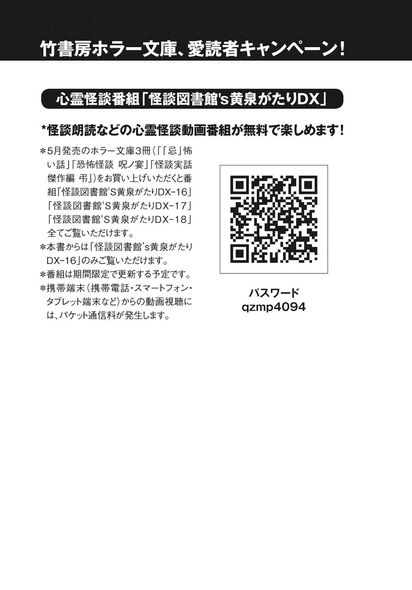

| 「忌」怖い話 (竹書房文庫) | |
| 加藤一 | |
| 竹書房 (2016) | |
この作品は縦書きでレイアウトされています。
また、ご覧になる機種により、表示の差異が認められることがあります。
一部の漢字が簡略字で表示されていることがあります。
※本書に登場する人物名は、様々な事情を考慮してすべて仮名にしてあります。また、作中に登場する体験者の記憶と体験当時の世相を鑑み、極力当時の様相を再現するよう心がけています。現代においては若干耳慣れない言葉・表記が登場する場合がありますが、これらは差別・侮蔑を意図する考えに基づくものではありません。
端書き
実話怪談とはなんぞや。これ、人によって定義が結構異なるんですよ。実話怪談作家さんの間でも、実の所はっきりとした定義がない。あるようでいてよく聞くと細部が違う。
ある人は幽霊の実在を説くし、ある人は所在地の実在を説く。「忌」怖い話としては、「体験者の実在」を挙げておきたいと思います。体験者がいて、その人が何か怖い体験をしている。しかも、当人も納得できないことが起きている。だいたいそういうお話です。
そういえば、怪異体験をした人達は大概、体験直後は「怖い思いをした」とは気付かないらしいです。当事者であってもその時点では「へー」で通り過ぎてしまうものみたいで、後になってから「......あれ？ ちょっと待てよ？ おかしくない？」と首を捻り始める。
今際の境目の辺りからふと見えていたのが、実はこの世の風景じゃなくてあの世の風景だった......みたいなことは、我に返ってからでないと案外気付けないものらしく。
というわけで、「忌」怖い話では「此 岸 と彼 岸 の今際の境界をふらふらしてたら見えてきたお話」というのを眺めていってみたいかと思います。
著者
夜分遅くにすみません
──ピンポーン......ピンポーン......。
と、インターホンは確かに鳴った、らしい。
蔵下君と一緒に暮らしている葵 が、来客に気付いて「はーい」と立ち上がった。
こんな夜更けに誰だろ。
ＳＮＳのタイムラインを眺めているうちに、いつの間にか随分遅い時間になっていた。
葵はぱたぱたと歩いていって、玄関のドアを開けた。
「はーい、どなた？」
すると、そこには見慣れた顔が二つあった。
出崎兄と出崎弟。
葵とは昔なじみの、仲のいい兄弟。で、あったはずである。
二人は、ニコニコしながら玄関先に突っ立っている。
「あれっ？ どうしたの？」
と、葵が声を掛けると兄弟は並んで頭を下げ、言葉を揃えた。
「お世話になります」
そして、頭を下げた姿のまま二人は闇の中に蕩 けるように消えてしまった。
葵が玄関から戻らないので、蔵下君も席を立った。
「どうしたの？ 誰だった？」
蔵下君が訊ねると、葵は「出崎兄弟だった。でも、消えちゃった」と手話を交えながら応じる。
「出崎兄弟って......あれ？ 最近亡くなったんじゃなかったっけ」
「うん。でも何か、うちの世話になるらしいよ」
聴覚障害のある蔵下君のため、この部屋のインターホンはチャイムと連動してフラッシュランプも光るように設定されている。
葵が立ち上がったときフラッシュランプに反応はなかった。
しかし確かにインターホンは鳴り、確かに出崎兄弟はいた、と葵は譲らない。
これまでのところ、出崎兄弟に何か特別な世話はしていないし、出崎兄弟から何かされているという気配もない。
変化と言えば「おかしなものがうちの部屋の中を通らなくなったくらい」である。
ありがとう
川尻さんの父が急な病で倒れたのは、つい先日のことである。
出先で脳溢血を発症した。
即座に救急搬送されたものの倒れたその日から意識はずっと戻らない。脳の血管から敗れ出た血液は凝固して脳細胞を圧迫しており、これについて自然治癒や回復の見込みは絶望的に小さい。
医師からは〈事実上の植物状態である〉という診断が下った。
母はそれでも何くれとなく見舞いに通う。
精々が声を掛けて手を握ってやる程度のことしか尽くす手はなくとも、長く連れ添った夫婦である。刻々と近付くその時を惜しむように、また万一の奇蹟を願って、できうる限り夫の側に寄り添った。
日常から、父が欠け落ちつつある。
それを気遣って家を空けがちになる母。
当たり前過ぎた日常が喪 われていくことに、川尻さんはまだ応じきれていなかった。
夜半過ぎ、川尻さんは点けっぱなしのテレビの前でうとうとしていた。
翌日に備えて早めに床に着いた母の姿はリビングにはない。
炬 燵 を挟んで反対側に寝そべる弟からも言葉はない。
口を開けば父の心配ばかりが溢れ、ぼんやりとした考え事は全て父の容態のことにばかり向いてしまう。眠れば最悪の夢ばかりに魘 される。
だから、つまらない番組でもいいから頭の中に何かを入れて、心配を有 耶 無 耶 にしようとしていた。見たくもない深夜番組を見つめる日々が増えたのは、たぶんそのせいだ。
彼女の意識が途切れ掛けたそのとき、誰かが川尻さんの肩を叩いた。
──ぽんぽん。
ハッと──と目が覚める。
「ありがと......」
こんなところで寝たら、風邪引いちゃう。
と身体を起こしたところで、気付いた。
母はとうに床に着いている。
父は病院で生死の境を彷徨 っている。
弟は炬燵を挟んで反対側にいる。
では、今、私の肩を叩いたのは──誰か？
「ねえ、私の肩とか叩いた？」
一応、弟に問うてみた。
「......えっ何？ ごめん姉ちゃん......俺寝てた」
弟は寝惚け眼を擦りながら身体を起こした。
母は連日、父の見舞いに向かう。
集中治療室を空けなければならないらしく、父は個室に移された。
とはいえ、意識不明の植物状態であることに代わりはなく、病状の回復は見込めないままだった。
それでも夫の手を握り、擦り、娘や息子の日々を語り掛けることで、夫を繋ぎ止められないものかと願った。
そうして面会時間が終わるまで病室で過ごし、「また明日、来るからね」と椅子を立つ。
病院から帰りのバスに乗った。
冬を終え春も近付く季節とはいえ、陽が落ちるとまだ幾分肌寒い。
暖房の効いた車内中程に進んで空いた席に腰を下ろすと、ついうたた寝をしてしまう。
──ぽんぽん。
どのくらい過ぎた頃だろう。誰かに肩を叩かれた。
目を覚ますと、ちょうど終点に停車しようとするところだった。
目指す我が家は終点のバス停近くであったが、誰かが起こしてくれたのだろう。
車内を見回すと、後部座席に乗客が一人残っていた。
母は親切な乗客に向かって「ありがとう」と礼の言葉を掛けた。
親切な乗客は、「え？ 誰？ 俺？」と困惑した表情で周囲を見回している。
身に覚えのない挨拶や謝礼を言われて戸惑っている様子だ。
そして「終点、終点」というアナウンスと同時にドアが開く。
そういえば、たった今自分の肩を叩いたにしては、あの親切な乗客の座席の位置は遠過ぎた。
家にいると息が詰まる。
母は家を空けがちで、姉は何か無理をして明るく振る舞おうとし、糸が切れたように黙り込んでテレビを眺める。
父が病気で倒れたことは承知している。人事不省、意識不明、植物状態という言葉を並べられて、それぞれの言葉の意味くらい、弟も知っている。
それが自分の父親に起きているということ、寝て起きても悪夢のようには覚めてはくれないことも分かっている。
分かってはいるけれども、それが自分達の身の上に起きていることについて、今ひとつ実感が湧かない。
父はもう目覚めないんだろうか。生きてあの家には帰ってこないんだろうか。
進学の相談どうしよう。もっと話をしておいたら良かったんだろうか。
まだその時ではない、まだ生きているのだから大丈夫なはずだ、と自分を慰めるが、父の状態に特段の変化が起きないまま日々が過ぎていくうち、それに自分が慣れてしまうことが何より怖かった。
姉のように気丈に振る舞うことも、母のように一心に願うことも、自分には無理だ。
家に帰り難い気持ちからか、弟はしばしば友人達とゲームセンターに足を運ぶようになった。
その日、最近入れ込んでいるゲーム機で遊んでいると、友人に肩を叩かれた。
──ぽんぽん。
「......今いいところなんだから邪魔すんな」
──ぽんぽん。
再び叩かれる。ゲームオーバー。
「何だよ！」
苛立って振り返るのだが、誰もいなかった。
文句を言おうと思った友人は、二列も向こうの別のゲームで乱入プレイに興じていた。
そして、弟の遊んでいたゲーム筐 体 は壁際にあった。
弟の背後には建物の片隅の壁と椅子の僅かな隙間しかない。
叩かれた側の肩の隣にあるのはポスターの貼られた壁だけである。
父はそれからさほどの間を置かず、旅立った。
セーフティゾーン
父は穏やかな人だった。
父が声を荒らげることなど、ついぞ記憶になかった。
だが、父は病を得て変わってしまった。
加奈さんが中学生の頃、彼女の父は脳溢血を発症した。
処置が早かったこともあって命は無事に取り留めたものの、それでも障害が残った。
うまく言葉が出てこないであったり、スムーズに手足を動かせないであったり。
ひとつひとつは些細なことに過ぎないのかもしれないが、それまで当たり前にできていたことができなくなる。
それは父にとっては苦しみであり、屈辱であった。
思い通りにならない自分の身体に苛立ち、それを汲み取ってくれない家族に苛立つ。
本心では家族に当たるつもりなどなかったのだろうが、病気に端を発したこの不便さ、不愉快さに苛立っていた。
日々苛立ち、日々声を荒らげる。思うように動かせない身体を捩って、怒りを表す。
その結果、加奈さんと父の関係は悪化の一途を辿った。
とにかく日々が険悪で、父とは言い合い怒鳴り散らし合いの喧嘩ばかりしていた。
「もういいっ！ 私、出ていくから！」
「うるさいっ！ 勝手に何処にでも出ていけ！」
こじれにこじれた言い合いは、こんな風に幕を下ろすことが殆どだった。
声が嗄 れるほど怒鳴り合った末に、加奈さんは自転車に飛び乗って家から逃げ出した。
逃げたというのはあまり正しくはないかもしれない。
父の気持ちも分からないではなかったが、中学生の加奈さんでは病を得た父の辛さを真正面から受け止めきれるものではなかった。
だからつい父と怒鳴り合ってしまう。
二人にはほとぼりを冷ます冷却時間が必要だった。
後遺症で自由に動き回ることも思うに任せない父は、ほとぼりを冷まそうにも家から容易に動くことはできない。だから、加奈さんが席を外す。
単に父と顔を合わせたくなかった、と言ってしまえばそれまでだが、喧嘩の都度加奈さんは自転車に飛び乗ってプチ家出を繰り返した。
とはいえ、逃げて家出して行くあてもなかった。
度々友人に世話を掛ける訳にはいかないし、母に全てを押し付けていく訳にもいかないから、ぷらぷらと時間を潰し自分自身もクールダウンしてからそっと家に帰った。
こんなときはいつも、ある場所に向かった。
それは墓地である。
自転車で少し行ったところに、父方の先祖代々の墓があった。
何か供え物を携えて行く訳でもないのだが、父と喧嘩をした夜は決まって墓にお詣りした。
加奈さんに限らず、「墓は落ち着く」という感想を抱いている人には幾度か出会ったことがある。
多くの場合、自家の墓を手厚く供養しているケースが多いのだが、遺族が墓参や菩提を弔うことを欠かさない、菩提寺がしっかりお勤めしている、そういう墓は「間違いがない」ので安心なのだそうだ。
もちろん、夜半の墓地に墓参するような酔狂な人はまずおらず、夜の墓は静かである。
そのはずなのだが、「誰もいないけど賑やか」でもあるのだという。
そこへ行く人間は自分一人でも、そこに留まることにあまり不安を感じない。
故に、「墓地は安全な所」「落ち着く所」「匿ってもらえる所」と表現する人は少なくない。
一人でいられるけど孤独じゃない。セーフティゾーンのような所。
加奈さんにとっても墓地はそういう場所だった。
その日も父と喧嘩になった。
連日些細なことで怒鳴り合っていたので、この日の喧嘩の切っ掛けが何だったかは、もう覚えていない。
「出ていけ！」「出ていく！」
といういつものやりとりの後、加奈さんはいつものように自転車に飛び乗り、いつもの墓へ漕ぎだした。
墓地へ向かう途中に、胡桃 の木がある。
この木の下をペダルを踏んで通り掛かったとき、不意に胸騒ぎが生じた。
何に対する不安なのか違和感なのかは思い当たらない。だが、
「まずいかも」
という直感のようなものが働いた。
ただ、何がまずいのか、その直感を得た自分自身、皆目見当が付かないので備えることもままならない。
首を捻るうちにいつもの墓地が近付いてきた。
遠目に、墓地に並ぶ御影石の墓石が月に照らされて淡く光っているのが見える。
それでも構わない。墓地へ。そして墓地へ。
次のＴ字路を右に折れたら、墓地はすぐそこだ。
身体を右へ方へ向けようとしたその瞬間──。
突如、自転車のハンドルが無理矢理左に切られた。
突然のことで、何が起きたか分からない。
バランスを崩した自転車ごと転んでしまわないよう、ブレーキを握りしめるだけで手一杯だった。
自転車を抑え込んで何とか転倒を免れた、その刹 那 。
加奈さんの頭の中に、声が響いた。
『今日は来るな！ 来てはならん！ 墓場の集まりがある。だから、来るな！』
これが誰の声なのか、誰の都合のどういった意図の制止なのかそういったことはさっぱり分からなかったが、加奈さんは素直に忠告に従った。
「いつもなら良くても、あの日は行ってはいけなかった、ということみたいです」
それ以降も、家を飛び出して墓地に身を寄せることはあった。
だが、あの晩と同じように『来てはいけない』と強く制止されるようなことは、二度となかった。
今は結婚もして故郷を離れ、あの墓地に身を寄せるような機会もなくなった。
とはいえ、あの晩の墓地で催されていたのがどういう趣旨の集まりだったのか、どういうタイミングだといけないのか、そこの辺りに関しては成人して随分経つ今も分からないままなのだそうだ。
結婚祝いに
「中学......いや、高校に上がった頃だったかな。母方の親戚の結婚式がありまして」
原君の一族はとにかく親戚が多い大家族であった。
「昔の人だから、っていうのもあるんでしょうが、母の兄姉弟妹が合わせて十二人もいるんですよ。だから、何番目の何さんの奥さんの弟さんがどうの、何番目の何さんの下の子がどうの、とかそういう親族の慶事弔事がやたらありましてね」
このときの主役は原君の母のお兄さん──つまり原君の伯父さんの娘さんで、一族への披露宴という慶事に、それはめでたいと親戚一同が集まることになった。
本家が町内にあるため兄妹の何軒かは地元であったが、嫁いだり仕事の都合で地元を離れていた家族など遠方から来る親戚も多かった。このため、一族は町内に家がある親戚の元へそれぞれ分散して泊まることになった。
披露宴の前日に前乗りした原君達は、今回の主役である従姉の実家に泊めてもらった。
夕食後、居間に集まって親族達は旧交を温めた。
「慶事で集まるのは久しぶりなんじゃないか」
「だねえ。前にこうして皆顔を揃えたのは、いつだっけ」
「確か......誰かの三回忌のときじゃなかったっけ」
「勇次兄さんの奥さんが亡くなったとき？」
「いや、その後の幸恵おばさんの法要が最後じゃないか？」
何しろ親戚が多いということは慶事も忌事も割と頻繁だということなのだが、やはり年寄りが多いこともあってか慶事よりは忌事での集まりが増える。
「幸恵おばさんが亡くなってもう四年？ 五年か。早いなあ」
大人達が故人を偲んでいると、不意に、
〈ちーんんん......〉
と、仏壇の鐘が鳴った。
開け放たれていた仏間は、しかし無人である。
「あー、来とるなあ」
「だなあ。おばちゃん、喜んでるんだよ。敦子ちゃんがお嫁に行くって、安心したのよ」
「幸恵おばさんには、敦子も可愛がってもらってたからなあ」
〈ちーんんん......〉
伯父と母の述懐に応えるかのように、再び鐘が鳴る。
鐘の音は、大人達の思い出話に呼応して繰り返し鳴った。
頷いているようでもあり、笑っているようにも思える。
原君を始めとする子供達は無人の仏間から流れる鐘の音を不審に思ったが、大人達は特に気に留める風でもない。
そのうち、「明日は早い。子供はもう寝ろ」と居間から別室に追い立てられた。
居間と連なる客間に敷かれた布団に横になる。
大人達の思い出話はまだ尽きないようで、昔の出来事、楽しい記憶、そこに居合わせ、しかし今はもう亡い親族の名前が出る。
そして、親族の名前が挙がるたびに、仏間から〈ちーんんん〉と鐘の鳴る音が聞こえる。
ぼんやりと暗い天井を見上げる原君が眠りに落ちるまでの間、仏間の鐘は間を置いて何度も何度も鳴った。
翌日の披露宴は和やかに営まれた。
従姉の表情は終始柔らかで、会場は祝福に包まれた。
何分にも親族が多過ぎて誰が誰の縁者なのか原君には全ては分からなかったが、見慣れぬ顔の親族も含めて、誰もが若者の門出を言祝 いでいた。
「良い披露宴だったねえ」
原君が母にそう漏らすと、
「そうねえ。たくさん来てくれたからねえ。昨日の夜中もいっぱいお祝いに来てたろ。みんなはしゃいで遅くまで賑やかにして、おまえ達眠れなかったんじゃないかい」
昨日、夜に来客は特になかった。
が、心当たりはあった。
「母さん、お祝いってあの鐘のこと？」
「そうよ、あれ。うちの一族の亡くなった人達、ああやってお祝いに来てくれるのよ。敦子ちゃんの披露宴が盛況だったのもそのおかげなんじゃない？」
原君の親族の間では、よくあることであるらしい。
階段と兄
夕暮れ時、日の陰り始める時刻。
台所では母が夕 餉 の支度を始めている。ふんわりと香る晩御飯のメニューが何だったのかは、よく覚えていない。あの頃、母が作る料理は何だって美味しいと思っていたから、別にそれはいい。
居間からは姉達が見るアニメの音声が零れていたと思う。
これは南家君の幼い頃の記憶である。
あの頃住んだあの家は、中央を貫くように廊下が通っていた。
廊下を挟んで左右に幾つかの部屋が並んでいる。
玄関は東側にあった。
玄関のドアに付いた明かり取りのガラスから差し込む日射しと、いつも開きっぱなしになっている居間から零れる明かり。
それ以外の部屋の扉はいつも閉まっていて、廊下に灯りはない。
こんな構造だから、廊下はいつも薄暗かった。
特に、西日が傾いて玄関からの日射しが暗くなると、暗い廊下を浮かび上がらせるのは居間からの幽かな灯りくらいだった。
このときの南家君は、玄関のある東側から廊下が突き当たる西側に向かって歩いていた。
当時、まだ保育園か幼稚園かといった年頃で、小学校に上がる前である。
漸く自力でトイレに行けるようになり、このときはトイレに向かってソロの大冒険を敢行中であったのだ、と記憶している。
廊下の突き当たりの壁を挟んで風呂場がある辺りは、いつもにも増して暗かった。
よちよちとそこへ近付いていくと、上り階段があった。
四段目までは明かりが当たって、段が浮かび上がって見える。
しかし、五段目から先は真っ暗で見えない。段があるのかどうかも怪しい。
行けるところなら何処にでも行ってみたい年頃である。
段を上る、ということも躊 躇 なくできるようにもなってきた。
そして南家君は高い所が好きな子供だった。
暗さなど構わず、上ってみたい衝動に駆られた。
よっこい......と一段目に足を掛けようとしたそのとき──。
「行くな」
声を掛けられた。
小学生くらいであろうか、兄の声が聞こえた。
兄は、言葉少なに「行くな」と南家君を重ねて止める。
兄の意図が分からない。いや、はっきりはしている。
これは行ってはいけない、上ってはいけない階段だ、ということだ。
兄の強い語調に、思わず足が竦 む。
振り返ったが、そこに兄の姿はなかった。
階段を振り返ると、階段もない。
そこには壁があるだけで、見えていたはずの四段目までの階段も、直前まで逡巡した一段目もなく、上れない。
それは、おかしなことだった。
階段が消えたこと、兄が消えたことがおかしいのではない。
そもそもこの家は平屋だった。最初から階段などない。
そして、南家君には姉が二人いた。
南家君自身は末っ子の弟であり、彼自身が長男である。
兄などいない。最初から、何処にもいない。
何故その声を何の疑いもなく兄のものと思ったのかも分からない。
ずっと後になってから〈兄はいた〉と親から聞かされた。
「おまえが生まれるよりずっと前に、お兄ちゃんがいたんだ」
ただ、兄は死産であった。
生きて生まれてはこなかった。
もし生まれていたなら、あの頃、ちょうど小学校高学年くらいの歳であったはずだ。
階段を上っていたら、兄の言葉に立ち止まらなかったらどうなっていたのかも、皆目見当が付かないままだ。
二世代
高校生というのは概ね体力が有り余っている。
その余りある体力はと言うと、大概は部活動に全投入される。
進学して運動部に入った鶴巻君の場合もそうで、休日ともなると朝から昼過ぎくらいまで部活に打ち込んだ。
漸く部活から解放された鶴巻君は、帰りがけにレンタルＣＤ屋に寄って、ミスチルの新譜を借りた。
ラジオ放送をカセットテープに録音して自分好みに編集して......という時代はさすがに終わっていたが、最新楽曲をスマホにダウンロードして......という時代はまだ到来していなかった頃である。
家に帰ったらミスチル、家に帰ったらミスチル、頭の中でぐるぐる繰り返しながら家路を急いだ。
自宅に帰り着いたのは午後三時頃。
何はともあれヘトヘトに疲れていたので、二階の自室の床にごろりと転がった。
本当は、軽くうたた寝するつもりだったのだが、これがきっちり爆睡してしまった。やっとのことで目を覚ましたものの、午後十時近い。
寝過ぎてしまったせいか、遅い晩飯を掻き込んだ後もちっとも眠くならない。
「......宿題でもやるか」
仕方なく、手付かずだった宿題に手を伸ばした。
そのうちに家族も皆眠ってしまい、一人大張君だけが宵っ張りになった。
宿題が終わったのは夜中の二時を回った頃であろうか。
それでも睡魔は訪れないので、手持ち無沙汰になってしまった。
「そうだ、アレ聞こう」
昼間借りたＣＤのことを思い出した。
当時、鶴巻家にはＣＤコンポがあった。ポータブルプレーヤーなどではなく、スピーカーがセットになった据え置きの小洒落たものだが、このコンポは鶴巻君の専有物ではなかった。
両親から「一台あれば十分。兄弟で使いなさい」という条件で与えられたもので、本体は弟の部屋にあった。
弟の部屋と鶴巻君の部屋は並び合った和室で、部屋のちょうど中間辺りに両方の部屋を仕切る襖があった。
眠っている弟を起こしては悪いので、そろそろと弟の部屋に忍びこむと、コンポにイヤホンを差し込んでＣＤを聞いた。
アルバムの一曲目の終わり近くまで聞いたところで、曲の合間に妙な音が混じり始めた。
──バン！ ババン！ バン！ ダン！ ダン！
例えるならパーカッションであろうか。
だが、ミスチルにこんな不定期なリズムのパーカッションが入る曲なんかあったっけ。
疑問に感じて、イヤホンを外してみた。
──ババン！ ダン！
音は楽曲からではなく、部屋の窓から聞こえていた。
最初、風かと思った。強風で窓枠が揺れているのか、と。
ところが違った。
確かにサッシ窓が鳴っている。
しかし、全ての窓が鳴っている訳ではなく、窓のうちの一つだけが鳴っている。
いや、猛然と叩かれているのだ。
両手でガラス窓を叩いてアピールする音。
又は、叩き割って入ろうとする打撃音。
この日、風は凪いでいたし、音の出所である窓は打撃音を鳴らしながら震動していたが、そこには何もなかった。そして、何もいなかった。
原因が分からない。
弟が音に気付いて起き出してくる気配もない。
その弟を跨いで窓を確かめる勇気もなく、これ以上、弟の部屋に居座るのも怖かった。
深夜のミスチル三昧は諦め、鶴巻君は仕切り襖をそっと開けて自分の部屋に戻った。
襖を閉めると、もう音は聞こえない。
普段、隣で弟が歌う鼻歌すら筒抜けになる薄い壁である。
あれほど激しく窓を叩く音にも拘わらず、自室からはまるで聞こえない。
もう一度、仕切り襖を開けて確かめるというのも怖かった。
だからもう、寝てしまおう。
眠くはないけど、頑張って寝てしまおう。
布団を被って目を瞑る。耳も塞ぎたいくらいだ。
すると──案の定というべきか、音が聞こえ始めた。
だが、さっきまでの窓を叩く打撃音とは違った。
板張りの廊下を誰かが歩いている。
──キシッ......シャッ...... キシッ......シャッ...... 。
裸足で廊下を無造作に歩いたときのぺたりぺたりという音とは違う。
何かを引きずりながら、すり足で歩いている。
滑るような歩み、というべきか。
両親の寝室は彼らの部屋と同じ二階にあったが、襖を開ける音はしなかった。一階のトイレに向かうなら階段を下りていくはずで、兄弟の部屋に向かってくる理由がない。
何を引きずる音だろう。
何か軽い......布......衣擦れ。これは、衣服の類だろうか。
脳裏に着物の裾を払いながら歩く姿が浮かび上がった。
両親も含めて寝巻きに浴衣を着る習慣がある者はいない。
じゃあ、誰だ。
煩 悶 しながら自問自答する間にも、布を引く足音は近付いてきた。
その足音は、鶴巻君の部屋──の前を通過した。
──キシッ......シャッ...... キシッ。
弟の部屋の前で立ち止まる。
マジか、と緊張が走る。
弟の部屋の襖をスッと開ける音が聞こえた。
弟の部屋に敷かれたカーペットの上を、布を引きずって移動する音が続く。
その足音は、数歩で止まった。
......マジか、おいマジか。
それは、先程潜ったばかりの仕切り襖の前だった。
今、そいつは弟の部屋からこちらを窺っているのだ。
襖がゆっくりと開いていく。
白い着物の裾を引きずって立つ人物がそこにいた──と思う。
その辺りからの記憶が曖昧で、気付いたら朝の七時になっていた。
気絶していたらしい。
当然ながら弟の部屋には二度寝を楽しむ弟以外誰もおらず、まして白い着物も落ちていない。夢を見ていたのかとも思ったのだが、コンポには昨日途中まで聞いたミスチルのＣＤが入れっぱなしになったままだった。
少なくともＣＤを聴いて、窓を叩く音を聞いて、そこまでは確かだったろうとは思うが、その後の記憶についてはあやふやで自信がなかった。
階下に降りると両親が朝の支度をしていた。
朝食を調えている母に、ふと昨夜のことを訊ねてみた。
「ねえ、母さん。昨夜、廊下に出た？ というか、トイレに起きた？」
「ぐっすり寝てたから昨夜は起きてないよ」
なるほど。じゃあ、あれはやっぱり夢だ。
「どうかした？」
「いや、昨夜変なことがあったっていうか、変な夢を見たっていうか......」
どうにも自信がないので、夢ということにして納得しようと思った。すると、どういう訳だか母が食いついてきた。
「何かあったのね？」
こういう不思議話や夢見の話には興味がない人だと思っていたのだが、昨夜の出来事を一通り打ち明けると、「ああ......」と嘆息した。
「あんたもか......」
そして母は語り始めた。
母が幼い頃の話だという。
今よりもさらに夜が早く、子供の夜更かしなど到底考えられなかった時代のことだ。
母とその姉は、夕食を終えた後は追い立てられるように寝床に就くのが慣わしだった。
夜の誘惑も特にないので、布団に入った途端、幼い母はうとうとし始めた。
すると、物音が聞こえてきた。
──キシッ......シャッ...... キシッ......シャッ...... 。
板張りの床を軋ませる足音。
そして、布を引きずる音。
音は部屋の隅から聞こえてくる。
近くに誰かいるのだ、と思った。
「誰......？」
と幼い母が音のするほうを見ると、見慣れぬ女がそこにいた。
白い着物の裾を引きずりながら、母のほうに向かって歩いてくる。
母は女の顔を見た。
凄い形相だった。苦悶か羨望か妬みか憎悪か怒りか。
人間のネガティブな感情の全てを坩堝 で煮融かして顔に張り付けたら、こんな形相ができあがるだろうか。
母は咄嗟に隣に寝かされていた姉を揺り起こそうとした。
「お姉ちゃん、起きて。ねえ、起きて！」
ところが、どれほど身体を揺すっても姉は起きてくれない。
助けてお姉ちゃん、私を一人にしないで。
必死に姉を起こそうとし続けるその途中からの記憶がない。
「......それで、気付いたら朝でさ。あんたのと同じ。もうね、まったく同じ」
鶴巻君の場合、女の顔を見る前に気を失っているのだが、それ以外は確かに完全に一致している。
件 の女の正体や縁については、親類縁者から家建物の曰くに至るまで何等繋がりはないようで、何故現れたのかも皆目見当が付かない。
ただ、鶴巻家親子二代で世代を超えて同じ体験をしたのだとして、鶴巻君が家庭を持ち子をなしたら、いつか三回目があるのだろうか。
ぐじゅん
とある春先のこと。
岩根君のバイト先は商品倉庫だった。
ストックされている様々な商品を、注文に応じてあちこちに発送する。
ひっきりなしに鳴る注文電話を社員が受けて応対し、そこで注文の入った商品をバイトが倉庫まで走って発送準備に取りかかる。注文応対の正確さと、在庫確認の迅速さ、発送業務の的確さ、これらが揃うことが重要だ。
バイトは基本的には体力勝負の力仕事である訳なのだが、注文が入ったら効率良く動けるよう、待機の間も聞き耳を立てる。
......トゥルルルル──ガチャッ。
岩根君が従業員専用口のところで一服していると、事務所内で電話が鳴った。
ワンコールで社員が受話器を取る。
「はい、もしもしお世話になっております。お問い合わせありがとうございます」
マニュアル通りの応答をしたが、その後に言葉が続かない。
「もしもし？ ......もしもーし？」
どうやら先方から返答がないらしい。
繋がっていることに気付かなかったり、相手が間違えて電話にＦＡＸを送ってきてしまったりとか、単純に一方の音声だけが聞こえていてこちらの声だけ向こうに伝わっている、というケースもある。
ここで電話を切ってしまってもいいのだろうが、相手にこちらの音声が丸聞こえなのに一方的に通話を切ると相手側が不快に感じる、というようなことも起きてくる。
なので、ここの事務所では相手が電話を切るまでこちらからは電話を切らないというルールになっていた。
応答に出た社員は、受話器を置いてスピーカーホンに切り替えた。
『ぐじゅん』
不意に奇妙な音が聞こえた。
水分多めの濁ったくしゃみ、のような。
季節柄で言えば、極まった重度の花粉症のような。
「何だ、今の」
電話に応答した社員が、頓狂な声を上げた。
事務所長が顔を上げて、応答した社員を見つめる。
「今の、おまえのくしゃみと違うのか」
「えっ、違いますよ！ つか、電話から聞こえたんですってば、今の」
スピーカーからの音にしては、妙にはっきりしている。
まるで、その場でくしゃみをしたかのようにしか聞こえない。
くしゃみ以外は無音のままで、もしかしたら誤発信したもののこちらに着信していることに気付いていないとか、そういうことなのかもしれない。
社員は受話器を取って耳に当てた。
「もしも......」
もしもし、と言い掛けたところで、社員は「うわっ！」と声を上げた。
同時にもう一度、非常にクリアな音で『ぐじゅん』というくしゃみが聞こえた。
社員は無言のまま電話を切った。
「びっくりした......今のぐじゅんっていうの、受話器のすぐ向こうで聞こえたわ」
二度目の『ぐじゅん』もスピーカーから全員が聞いた。
事業所にこういう悪戯は困る。
社員は、着信履歴に残った番号を調べ、クレームを入れるべく電話を掛けてみた。
「もしもし。今そちらから電話をいただいたんですが、そちら......え？ 掛けてない？」
社員は、ええ、はい......と応答しながら、段々声のトーンが小さくなっていった。
「ええ、はい。はい、できるだけ気を付けてみます。ではその、今後は同様のことが、ええ......まあ、ないといいですね」
強い口調で始まったクレーム電話は、何とも尻切れな感じにすぼまって終わった。
「どうだった」
「いや、それがその......この番号、葬儀場からでした」
葬儀場の名前を聞いてみると、事務所の誰も行ったことがない施設で、しかも同じ県内ながら会社とは縁遠い遙か遠くにあった。
様々な商品を扱うこの会社ではあるが、取引先は主に小売業である。
葬儀場から直接注文を受けて卸すような品目の商品は扱っていない。
何故葬祭場なんだ......。と事業所の面々が首を捻る中、電話を取った社員は妙にそわそわしていた。
「ごめん、俺ちょっと外の空気吸ってくるから」
彼はそう言って席を立った。
給湯室にあった食塩の小瓶を握りしめて出ていったが、あれは何に使うつもりなのか。
ガラケー
「自分で買った携帯じゃないし、通話料金も親持ちだからしょうがないんですけど」
当時、現役女子高生だった加々美さんにとって、携帯は財布の次に大切な......いやむしろ財布よりも大切なライフラインであった。
既にネットは普及しきっていたがまだスマホが一般化する前の時代であったので、それはフィーチャーフォン、所謂ガラケーであった。ありふれたクラムシェル型のパカパカ携帯であったが、当時の用途としてはほぼ通話とメールにしか使っていなかったので、それで十分足りた。
「その頃は、ツイッターもＬＩＮＥもなかったから、女子高生の連絡用にはそれで十分足りてたんですよね」
中学生の頃に買い与えられてからその頃までに、もう四年ほど機種変更もせずに同じ携帯を使い続けていた。
この携帯、型落ちでも必要な用途には機能は足りていたし、特に加々美さんにとっては過不足なかったのだが、通話相手の友人達の間では頗 る評判が悪かった。
高校の同級生との重要な連絡......という割とどうでもいい通話をしていると混信がある。
「それでー、加々美っちの」
『ぐわ』
「今何か言った？」
『ぐえ』
「ねえ、何今のぐえって」
『あははははははは』
大体こんな具合で、会話に重なって或いは割って入るような具合で何者かの声が聞こえる......のだという。
「今の誰よ！」
通話相手によると、話が盛り上がってくるとそれを遮 るように声が聞こえるらしい。
だという、らしい、という伝聞調になる理由はと言えば、加々美さんにはそれがまったく聞こえないためである。
混信する謎の声はあくまで相手側にのみ聞こえ、加々美さんのほうには聞こえない。
「私のほうには全然聞こえないんだよね。そっちの電話がおかしいんじゃない？」
そう問うたが、誰も彼もが同じことを言う。
しかも、これが必ず聞こえるのだという。
これより前、アナログ固定電話の時代には、こういう混信電話というのはよくあった。
また、携帯でもキャッチホンサービスや、複数ユーザーで同時通話する会議電話のようなサービスを利用しているなら、第三の通話者が会話に加わるということもあったかもしれない。
型式の古い加々美さんの携帯はそんなサービスは使えない。
不便だ、おかしい、気味が悪いと友人達からは散々に文句を言われるのだが、加々美さん本人には聞こえないので、特に気にしないことにした。
女子高生にとって長電話は日課である。
であるので、今日も今日とて加々美さんは友人との長電話に勤しんでいた。
長電話の途中、彼女は尿意を催した。
携帯電話であるからもちろん何処へでも、それこそトイレにだって持っていこうと思えば持ってはいけるのだが、それはさすがに乙女の嗜 みという最後の一線がある。
用足しの音を友人に携帯経由で聞かせる訳にも行かない。
そこで一度通話を切って掛け返そうとは考えず、
「ちょっと待っててくれる？」
と、携帯を通話状態のまま机の上に置いて、二階の自室から一階のトイレに駆け下りていった。
慌てて用を足して階段を駆け上ってくると、階段の途中辺りにまで届く大きな笑い声が聞こえてきた。
「あははははははははははははははははは～っ！」
けたたましい大爆笑である。
誰憚 ることのない女の笑い声が、開けっ放しになっていた自室の入り口から響く。
誰かがいる。
誰かが私の部屋にいる。
何を喋っているのかははっきりしないが、通話途中の携帯に向かって何事か喋っている。
この日、家族は一階にいたが、二階にいるのは加々美さんだけであるはずだ。
自分が用足しをしている僅かな間に、母が勝手に私の部屋に......ないとは言えない。
思わず、部屋に踏みこんで怒鳴った。
「誰!? お母さん？ 勝手に電話出ないでよ！」
携帯は中座したときのまま、机の上に置かれていた。
そして直前まであれほど身近にはっきりと聞こえていた笑い声の主が何処にもいない。
いや、だって。確かに今ここに誰かが。
階段から様子を窺っている間だって、ずっと喋りまくる声も聞こえていたし。
とっちめてやろうと思って踏みこんだのに。
通話はまだ切れていなかった。
「もしもし？ ねえ、今私がいない間、誰かと話してた？」
友人にそう訊ねると、友人は即座に否定した。
「ううん。でも、加々美が席外してから、ずーっと変な声がしてた」
機械的な声、もしくは非常に平板なトーンで誰かが話し続けていたらしい。
「何か言ってた？」
「ううん。『もしもしっ！ もしもしっ！』って呼び掛けてくるんだけど、こっちには全然反応しないの。気持ち悪い。何アレ」
あの高らかな笑い声のほうはというと、あれほど響き渡っていたのにも拘わらず、友人のほうにはまったく聞こえていなかった。
それから暫くして、時代はガラケーからスマホに移り変わった。
バッテリーもそろそろへたってきたし、そろそろいいでしょう？ と親に機種変更をねだって新しい機種に変えてしまったので、その後は件のガラケーは使っていない。
暫く家に置きっぱなしにしてあったのだが、今は行方も分からなくなった。
機種変更してから、混信はぱったりと止んだ。
ライフライン
岡村君の愛用の携帯電話は、学生時代に共に日々を永らえてきた相棒であった。
震災の頃まではスマホではなくフィーチャーフォン──ガラケーだった。
聞けば、この携帯は東日本大震災でも重要なライフラインとして活躍していたという。
あの震災の折は、とにかく携帯だけが頼りだった。被災地以外のインフラやネットワークは無事であったのだろうが、被災地ではそのインフラ基盤そのものが寸断されていた。
被災地以外の地域に在った人々は、崩壊した街や津波に飲まれていく大地の様を、テレビを通して固唾を呑んで見守っていた。
しかし、インフラを失った被災地では、自分達の街に何が起きているかということの全貌を把握することが極めて困難だった。
自分の目の前で起きていることは理解できる。
が、そこから僅かでも離れたところ、或いは隣町が、学校の友人達が、そして自分の家族や家がどうなっているのかを俯 瞰 する方法は、震災直後テレビ放送を受信する手段を失った人々にとってほぼ皆無であった、という。
被災時、大学生だった岡村君は宮城にいた。
見慣れた街が津波に浚 われていく中、どうにか高台へ避難する。
幸いにも命に別状はなかった。
携帯は避難途中に少しばかり海水に浸かってしまった。
防水を謳っている機種は多いが、それでも日常生活防水程度であって海水に浸かることまで想定されたものは少ない。
ただ、幸いにも水濡れ程度で済んだのか、携帯は特に故障には至らなかった。
電子メールも通話も、生きている基地局がある所までたどり着ければ、問題なく使うことができた。
被災時の携帯は家族や友人ほかの知己の消息を訊ねるにせよ災害支援情報を得るにせよ、自分を皆と繋ぎ止め孤立を防ぐための、文字通りの生命線 である。
とにかくこれだけが頼りだった。
楽観できる要素は何もなかったが、当時は無我夢中であった。
余震の回数も次第に減り、自分の身の回りが落ち着いてきた二〇一一年の五月頃からは、とにかくできることをしよう、と思った。
被災地のボランティア、再開された大学の実習などすべきことは幾らでもある。
ボランティアと実習では、被害の大きかった地域に頻繁に足を運んだ。
携帯に不具合が出るようになったのは、この頃からだという。
着信がある。
「もしもし」とコールに応える。
──ザッ......ザザッ......うう......う......。
ノイズと息遣いが聞こえる。だが、それ以上は何もない。
もしもし、と何度問い直しても返答がないので止むなく通話を切る。
今のは誰からだったんだと着信履歴を見るのだが、履歴がない。
発信者の名前もない。番号も表示されない。
こんな電話が、ぽつぽつと入るようになった。
この時点では、悪戯電話を疑っていた。
或いは、携帯の故障。
何しろ被災地にあって携帯はライフラインであるから、故障は困る。
しかし、はっきり分かっている相手との通話では、特に支障は出ない。
掛かってくる履歴に残らない通話のときだけ、ノイズが聞こえてくる。
ただ、それに留まらなくなった。
家族から着信があった。
「もしもし」とコールに応えるのだが、返事がない。
──ザッ......ザザッ......うう......う......ザッ......うう......。
いつものノイズ。
よくよく耳を澄ましてみると、息遣いと思われたものは、呻き声のようだった。
ノイズと呻き声が交じり合って、何かを訴えようとしているようにも聞こえる。
「もしもし!? 大丈夫？」
家族に何かあったのではと不安に駆られるのだが、電話口からはノイズと呻き声だけしか聞こえてこない。
折り返し電話を掛け直してみたところ、家族は岡村君には「掛けていない」という。
帰宅後、家族の携帯を確かめてみたものの、そこに発信履歴はない。
家族名義の番号を模したノイズと呻き声の電話は、被害のあった地区を回っているときに限って掛かってきた。
何度確かめても履歴には残らない。
着信があればその都度バッテリーも消耗する。
そして家族からの発信となれば出ない訳にもいかず、頻々と手を止めて首を捻る機会が増えた。
薄気味の悪さや不思議さもさることながら、実用上の難ありと判断した岡村君が愛用の携帯を手放す決心をしたのは、二〇一一年の十月頃。
「まあ、機種変すれば変わるかな、と思いまして」
機種変更してからは、呻き声やノイズの電話は来なくなった。
れいぞうこ
孝昭氏が掛かり付けの病院の厄介になり始めてから随分経つ。
とはいえ、神経内科に定期的に顔を出していつもと同じ処方箋を貰うだけで、これと言って症状や診療方針に大きな変化がある訳ではない。担当医師の「具合はいかがですか」という問診に対して、機械的に「ぼちぼちです」と答える。
そんなやりとりがここ数年続いている。
形ばかりの問診を終え、後は清算の順番を待って処方箋を受け取って帰るだけだ。
この日は神経内科以外の患者も多く、病院に当てはめて使っていい言葉かどうか迷うところだが、大賑わいで繁昌していた。
さほど広くはない待合室では、受診待ちや清算待ちの患者がそれぞれ思い思いに時間を過ごしている。
カーディガンの若い女性はジッと一所に座っていることに耐えられないようで、頻 りに立ったり座ったりを繰り返している。そのうち、ベンチの前だけでは不安なのか、院内の長い廊下をうろうろと何度も往復するようになっていた。
一方で、豹柄の派手なシャツを着た中年女性は、待合室のベンチの中央にドシッと腰を据え、目に付いた者なら看護師だろうが見知らぬ患者だろうが、誰彼構わず話し掛けている。話題は自分自慢であったり今朝見たテレビの話であったりワイドショーの芸能スキャンダルの話であったりで、取り立てて一貫性はない。ただ、異様にテンションが高く、黙っているということができないようだった。度々、お静かにと諭され、その都度「分かってる分かってる」と答えるが、実際のところ態度は改まらない。
中年女性の後方に座る男性は、握りしめたハンカチで自分の手を拭っていた。親指から順番に指を一本一本丹念に拭い、油脂や汗を全て拭き取る。親指から始めて小指まで拭くと改めて親指に戻る。そんなことを、ずっと黙って繰り返している。
皆、自分と同科の患者なのだろう。
孝昭氏は待合室のベンチではなく、通路側の廊下に設えられたベンチに腰を下ろした。
目を閉じ、眠っているふりをして看護師に呼ばれるのを待つ。
別に眠ったふりなどしなくてもいいのだが、自分の視線の先に他の患者達がそわそわしながら座っているのが視界に入り、彼ら彼女らと目が合うと何か気まずい気分になった。
ガン見し続けるのは失礼な気がするし、かといって不自然に視線を泳がせるのもそれはそれで不審過ぎる。目のやり場がない。
自分だって患者なのだから、他の患者に気を使わずとも良さそうなものだが、そこを押して他人を気に掛けてしまい過ぎるのが、自分の症状がなかなか寛 解 しない原因なのかもしれない。そう自嘲した。
そんな重苦しい空気を破る声があった。
「ママー、マァーマァー！」
見ると、歯科の診察待ちのベンチにこちらに背を向けて腰掛けた母子があった。
若い母親に連れられた年端もいかない少女が、頻りに母親に話し掛けている。
「これはー？ これナーニー？」
絵本を指差して訊ねる。
母親はその都度、「それはねー」と娘の問いに答えている。
言葉が出始めて間もないのか色々なものの名を母親に訊ねる。そして、母親から教わった言葉を、半ば意味も理解しないままにオウム返しに繰り返す。
そこへ誰かの携帯が鳴った。子供が好きそうなアニメのテーマソングが、陰 鬱 な大人でいっぱいの病院の廊下に似つかわしくなく響く。
マナーモードにしていなかったことを責める視線が、音の出所に向けられた。
若い母親は懐から気忙しく携帯を取り出すと、「......もしもし？」小声で応答した。
「......はい......今、病院で......はい......」
母親に構わず、少女はまた問い掛け遊びを始めた。
「あっ、これしってる！ これナーニー？」
すると、
「だあいど......ころ......」
と、絞り出すような返答があった。
「きゃははははっ」
少女は手を打ってはしゃいで、訂正した。
「れいぞうこ、だよ！」
再び、それに答えて、ゆっくり問い返す声。
「......れぃぃぃぃ ぞぉぉぉぅ こぉ？」
「そう！ れいぞうこ！ れいぞうこ！」
少女は、自分が教える側になったことが嬉しいのか、すっかり上機嫌である。
母親はその間、ずっと背中を丸めて小声で携帯と話している。
「ええ......それは、はい......」
母親は電話と平行して少女の相手をしていたのかと思っていたが、どうも様子が違う。
恐らく、少女の兄か姉でもいるのだろう。
苦しげに肺腑の奥から絞り出すような独特の発声は健常者のそれとは異なり、聾 の発音にも似て聞こえた。
なるほど。
この発音の不安定さから類推するに、何らかの障害を持った兄姉がいるのだろう。
母親は大変だろうが、臆さず仲良く遊ぶ兄妹の様子を微笑ましく思った。
やがて母親は携帯を耳に当てたままベンチを立った。
どうも院内で声を顰 めて頷くだけでは足りぬ用事であったらしい。
少女の手を引いて、孝昭氏の前を通りすぎていく。
兄姉らしき姿は何処にもない。最初から母親と少女の二人だけだった。
では、少女をあやしていたのは、誰か。
堕胎
水島さんは病院勤務である。
内科、小児科、産婦人科を兼ねた個人病院で、院内では医師や看護師が日々忙しく立ち働いている。
「私は医師でも看護師でもないんです。医療事務担当なので」
主に書類に向き合う仕事ではあるが、稀に事務仕事以外のちょっとした雑用を手伝うこともある。もちろん、医療に関わることについては職分を越えることは許されないので、そこは皆も弁 えているが、それ以外の「ちょっとお願い」に応えることも個人病院ならでは、と言える。
病院勤務ながら、産婦人科では喜ばしい場面に出会うことが多々ある。
子供を授かるお母さん、お父さん、新しい命が無事産まれた喜びを分かち合う家族達の笑顔は、近くでそれを見ているだけでもいつだって眩しい。
その一方で、あまり喜ばしくない場面に出会うこともある。
そして、それもまた年間を通じて少なからぬ回数になる。
個人病院であるが故に引き受ける機会の多い鬱事。
それは堕胎である。
望まれて授かり生まれてくる子供がいる一方で、授かることを望まれなかった子供、生まれることを親によって拒まれる子供がいる。
それらの事情は様々で、いずれもやむを得ない理由によるのだろう。
けれどもそれは、一つの命をもみ消してしまう、未来の可能性を摘み取ってしまうということでもある。決して慣れるものではない。
まして、胎内にいる間、胎児は着々と成長を続けているのだ。
堕胎の決断が遅くなればなるほど胎児は「人」に近付き、またそれを無理矢理引き剥がすことは母胎の生命のリスクを高めてしまう。
受付窓口に現れた母親は、思い詰めた表情をしていた。
既に妊娠二十週を越えている。
本来ならば、これは堕胎をするには遅過ぎる。
しかし、医師は決断した。
「......母胎を救うことを優先します」
この段階まで進んでいる胎児を堕胎する手術となると、手術の内容もそれなりにヘビーになる。誰にとっても気の進む話ではなかった。
堕胎手術は、子宮口から内部を掻 爬 することで行う。
器具を使って子宮の内容物──胎児を掻き取るのである。
出産中に行われる帝王切開とは訳が違う。帝王切開は胎児を人の形を保ったまま子宮外に取り出す手術であるのに対し、堕胎手術に於ける掻爬では人の形を保つ必然性はない。
このため掻き出された胎児は多くの場合、人の形など留めていない。
それでもまだ十分に成長していない、人の形にはほど遠いごく早い段階の胎児であれば、罪悪感はほんの僅かにでも軽くなるときもある。
しかしながら、二十週──半年近くともなると、完全に人の形ができあがっている。
子宮口から胎児を一気に取り出すことは困難であるため、これを取り出すためには子宮内部で胎児を分解する必要がある。
子宮口から差し込んだ器具で、胎児の足をちぎってまず足のみを取り出す。
突起物である腕も毟 り取って掻き出す。
その後、下腹、内臓を少しずつちぎり取って順次掻き出す。
子宮口は陣痛が始まった後に広がるのであって、堕胎のときに都合よく広がってはくれない。まして、二十週も過ぎた大きな胎児の身体を丸ごと通すことは不可能なので、このように少しずつ引きずり出すことになる。
このとき、胎児は「逃げる」のだという。
当然だ。死産となった死体を取り出すのとは訳が違う。
堕胎手術の時点で、胎児は子宮内で生きているのである。
生きたままの状態で、身体を少しずつ引きちぎられて死ぬのだ。
発達途中の胎児に意識や感情があるかどうかについては、多くの研究があるのだろうからそちらに譲るとしても、生物は本能的に痛みから逃れようとする。
このため、胎児も器具で引きちぎられるときに、そこから逃れようとする。
だが子宮内から逃れる唯一の道は子宮口である。そこから自分を殺す器具が入り込んでいる以上、胎児には何処にも逃げ場がない。
生きたまま、生まれずに死ぬのである。
最終的には、脊椎が抜き取られ、頭蓋骨を含めた頭部が子宮内で潰されて取り出される。
目鼻は既に形成されているが、それらも「顔の付いた皮」のようなものになって子宮口から出てくる。
最後に内部でちぎれてしまった肉片、胎盤や羊水などの内容物が吸引されて終わる。
掻き出された胎児──胎児だったものは、医療用のトレーに取り出されていくが、ごく小さな手足や内臓や顔の付いた皮などのバラバラになった肉片は、さながら猟奇殺人の現場であるかのように思える。
堕胎とは苦渋の決断の末、命を奪う行為なのだ。ただ、罪に問われないというだけだ。
堕胎手術は医師も看護師も、それに関わる全ての人々の気持ちを苛 む。
中には長年それを続けたことで、麻痺して慣れてしまう者もいるのかもしれない。
だが、慣れてしまうのが怖い、そうなってしまう自分が恐ろしい。多くの医師がそうであるように彼らはそのように自分を戒めていた。
水島さんはこの日、手術後の「片付け」に遭遇した。
本来、堕胎手術後の内容物は医療廃棄物として扱われる。感染症などを防ぐため、医療廃棄物専用のペールに入れられ、完全密封される。
一度密封すると外からは容易にこじ開けられない白いペールに入った「廃棄物」になってしまった胎児を──いやペールを手術室から運び出す。それを手伝う手筈だった。
しかしタイミングが早かったのか、手術室ではまだペールの密封が行われていなかった。
手術後独特の生臭さが漂う室内に立つ看護師の手に、ビニール袋がぶら下がっていた。
それが胎児の残骸だということは、水島さんにもすぐに分かった。
頭、顔、そして目に相当する部分が見えた。
（生まれてきたかっただろうに）
誰を責めることもできないことは分かっていて、それでなお気の毒に思った。
肉塊になってしまったその子に対する同情心のようなものであったろう。
肉塊が自分を見ているようにも思えた。
看護師はビニール袋を手早くペールに詰め込むと、パコッと蓋を閉じて密封する。
そして〈医療廃棄物〉は運び出された。
足取り重く帰宅する。
気分が滅入るということとは別に、明らかに身体が重かった。
のしかかられるような、縋り付かれるような重さである。
何かを引きずるような、手足を持ち上げることすら億劫になるような。自宅の玄関の鍵を取り出そうとして、それすら阻まれるような明確な「重さ」を感じていた。
ドアノブに手を伸ばし掛けたところで、思い出した。
「そうだ、お婆ちゃんに頼んであったんだっけ」
出勤前、玄関に塩を頼んでおいたのだ。
今日の手術が相当ヘビーなものになるということは事前に聞かされていた。
堕胎が人の命を奪うものであることに間違いはなく、これは間違いなく忌み事なのだ。
──だから、気休めでも良いから、何かしておこう。
決して信心深い訳でもないが、日頃そう心がけていた。
祖母が用意してくれたのは、有名所の神社からいただいた清め塩であった。
きっと効くと聞かされていたそれは、小さな包みに入れられ玄関の外に置かれてあった。
包みを開いてまず塩を一舐め。
それから手足、頭、背中と極少量の塩をぱらぱら振りかけていく。
塩を自分の背中に振りかけたとき、〈べりっ〉と剥がれる感触があった。
貼りついていたものが剥がれていくような。
或いは、皮下に潜り込んでいたものが抜き取られて落ちたような。
それは「そういう気分」などではなくて、はっきりと物理的に何かが取れて離れていく感触である。
身体も軽くなった。
大きな荷物を下ろしたような、或いは負うた子を下ろしたような。
「もしお清めの塩のことを忘れていたら、そのまま家の中に連れ込んじゃってたかもしれません。実は、何度かあったんです」
以前にも、同情心を抱いてしまった結果、所縁のない水子の怪異を家に上げてしまったことがあった。
「だからお守りは常備してたんですけど、効かなかったみたいで」
水子をどうにかできる訳でなく何の役に立てるでもないので、事が収まるまで随分大変だったと水島さんは言葉を濁す。
心当たりはない、という。
「私、何だかやたら子供に懐かれるんですよね。電車の中とか観光地とか遊園地とか。何処かの家族連れの知らない子に懐かれたり、微笑み掛けられたり。あ、生きてる子ですけどね。そういうことはよくあります」
それ、心当たりじゃないんですか、と口を衝いて出そうになって、飲みこんだ。
音しか
街道を走るトラックの音が聞こえる。
厚木辺りから来るのであろう、ジェット戦闘機の飛行音が聞こえたりもする。
地域にもよるだろうが、何も別に珍しいものではない。
それが何か？ と問うと、
「音しかしないんですよ」
と、眠 巣 君は言う。
音しか、とは。
「ですから、ジェット機が飛んでくるでしょ。ゴーって。だけど、ジェット機が来ない」
しかし、眠巣君の相方の山田さんはそれに抗議する。
「家の中にいたら音しか聞こえないのは当たり前じゃない。家の外でだって......例えば、遠くを飛んでいて、建物の陰に隠れたり、雲の中にいたりしたら見えないでしょ？ だからほら、山彦みたいな感じで音が反射してる、とか」
ごもっともである。納得し掛けたところで、眠巣君は別の例を挙げる。
「他にもあります。トラックの近付いてくる音はするけど、トラック本体が来ない」
なるほど。
間近にトラックが迫ってくる音はするのに、当のトラックが現れない、ということか。
「これがまた、最近ちょいちょいあるんですよね......」
ある日のこと。
眠巣君は体調を崩して仕事を休んだ。
ジッとしていても良くなるものでもないので、少し具合が落ち着いてから掛かり付けの病院へ向かう。自宅から自転車で十数分といった距離である。
遠くから飛行機の近付いてくる音が聞こえた。
土地柄か、この辺りは戦闘機も輸送機もヘリコプターもよく通る。
多くは米軍機であり、また基地への帰投ルート、滑走路への進入コース上に近いせいか、遙か雲の上を飛ぶ民間の旅客機とは異なり、それなりに低い空域を飛ぶ。
そうなると、嫌が応にも音や機影である程度機種の違いも見分けが付くようになる。
バババ......と空気を裂くこの音は、レシプロの軍用機だろう。
オスプレイ......いや、違うか。
「......この音の重さから言って、たぶん早期空中警戒機 辺りかな」
四発のレシプロエンジンを積んだプロペラ機で、尾翼の後ろにピンと出っ張った棒状の探知機が長く伸びている。真下から見上げてもそれと分かる特徴的な機影だ。
見上げるが機影はない。
遠くからどんどん近付いてきているのがドップラー効果で分かる。
相当低いところを飛んでいるようで、どんどんこちらに近付いてくる。これなら、フライパスさながら間近で機体が見られるかもしれない。
そう思って再び頭上を見上げるのだが、やはり機影はない。
──ズゴゴゴゴゴゴゴゴゴゴゴゴゴゴゴゴゴゴゴゴゴゴゴゴゴ。
もう殆ど真上、眠巣君の頭の上まで到達した。
もはやドップラー効果もなく轟音も最大音量である。
航空祭のフライパスよりもでかい。
そして、その音は眠巣君の頭上にずっと陣取っている。
──ズゴゴゴゴゴゴゴゴゴゴゴゴゴゴゴゴゴゴゴゴゴゴゴゴゴ。
それが十分程も続く。
レシプロ機はジェット機に比べれば速度は遅いのだろうが、幾ら何でも十分間にも亘ってピンポイントで同じ空域に留まっていられるほど遅い訳ではない。
旋回しているなら、ドップラー効果による音域の差が出るはずだが、それもない。
ひたすら同じ音量で爆音が響き渡り続ける。
病院に到着寸前まで来たところで、眠巣君も喧 しさに腹が立った。
──ズゴゴゴゴゴゴゴゴゴゴゴゴゴゴゴゴゴゴゴゴゴゴゴゴゴ。
「あー、もううるせえええええ！」
と、叫んだところで、轟音はブツンと止んだ。
音程を変えて遠ざかっていくほうのドップラー効果は、なかった。
それこそ、スイッチを切ったかのようにふっつりと音が途切れた。
「そういや、いつもそうなんですよ。近付いてくるときはドップラー効果で段々音程変えながら聞こえてくる。最大音量になったところで、いきなりスピーカーのスイッチ切ったみたいに音が途切れる」
ジェット機も、街道を走ってくるトラックも皆そうだ。
近付いてきて遠ざかっていかないあの音だけの何かについて、「もうね、妖怪の類なんじゃないかと思うんですがね」と眠巣君は首を捻る。
毛並みの手触り
数年前の八月の終わり頃のこと。
夏の暑さは峠を越えているものの、まだまだ名残の残暑が厳しい夜のことだった。
仕事を終えた宮井氏は、職場を出て最寄り駅までの道程を歩いていた。
風もなく昼間の熱がアスファルトに残って、空気の熱い塊がそこかしこに滞っているかのように感じられる。街灯の乏しいローカル私鉄線の線路脇を歩くだけで、シャツに汗が浮いてくる。会社から出たばかりだというのに、もうエアコンの冷気が恋しい。
薄暗がりの中、線路の先にぽつんと浮かぶ駅の灯りを目指して足を動かしていくと、何かが足下に絡みつく感触があった。
ふぁさっ──。
猫だろうか、と思った。
歩く人間の股の間を器用に巡り、その周囲に触れる何かふさふさしたもの。
しかし、猫よりももっと長いものであるように感じた。
猫よりも手足の短い、細長い生き物を想起させる。
それは最初、宮井氏のスーツの脛 の辺りを撫でていた。
が、それが足に絡んだと思ったら、一気に身体に巻き付いて......いや駆け上がってきた。
宮井氏の手足を駆けて上る。
ぐるぐると回り込みながら、腕、肘、肩を蹴り、首元辺りで、スッと消えた。
いや、〈抜けて〉いった、というのがより正しいか。
足下から身体の内外を、何かが確かに駆け抜けていった。
猫やハムスターのモフッとした細い毛並みではなく、イタチかフェレットのようなサラッとした少し固い毛並み。そんな質感であったように思われる。
風一つない夏の夜の、不可思議な獣のお話。
飼い主ー、飼い主ー
いつもより少し遅い時間に仕事が終わって、てくてくといつもの道を歩く。
前方から、テリアか何かのむくむくとした小型犬が歩いてきた。
その後に、リードを握って袋をぶら下げた中年女性が付いてくる。
ああ、犬を散歩させているんだな。
くるくるとした愛らしい犬は、毎日歩くのであろういつもの道をいつものように歩く。
その犬の後ろに、靄 のようなものがあった。
白く煙ったそれが何なのかはよく分からないが、大きさはちょうど犬と同じくらい。
ジッと見ると、靄が宙に浮いて漂っているのではなく、地面を蹴って「歩いている」のだと分かった。
もやっとして実体は不確かではあるが、その動きは尻尾をピンと立てて歩く大型の猫か、前を歩くテリアの連れ合いにちょうどいい小型犬か、といった具合である。
その白い靄は、飼い主の足下を中心にくるくる周りながら、トコトコと付いていく。
たまに飼い主を追い越し、リードを潜って右へ左へとめまぐるしく動き、飼い主の膝にじゃれついたりもする。
しかし、先頭を行くテリアよりも前には決して出ようとしない。
二匹と一人の小さな群れのパレードの先導者を立てている、といった具合か。
飼い主は足下にじゃれつく白い何かには特に気付いた様子はない。
以前飼っていた、そして今はもう亡い犬か猫。
それが生前と同じ散歩道を、生前と同じ飼い主、生前と同じ犬とともにいつものように歩く。
白い靄のような何かは、こちらの視界から消えるまでの間、無邪気に駆け回りながらも決して飼い主からは離れることなく、付かず離れずに駆けていった。
首輪
いつもより少し早い時間に仕事が終わって、自転車で地元の道を走る。
逢魔ケ時よりやや遅い、辺りが薄闇から深い闇に変わる時間帯。
ペダルを漕いでいると、ライトで照らされた先を横切るものがいる。
「うおっと！」
慌ててブレーキを掛けて減速。
その灯りの中を横切ったのは、赤い首輪の......いや。
赤い首輪、のみ。
首輪の主であろう生き物の姿はなく、ただ首輪だけが空中をツイーっと横切っていく。
首輪の横切った高さと首輪の大きさから言えば、恐らくは猫。
呆気に取られているうちに、首輪は自販機の隙間に潜り込んで横丁の路地裏に消えた。
蛇口
つい、うとうとした。
「......ごばべぁっ、やべっ」
眠巣君は鼻から湯を吹いた。
仕事の疲れが溜まっているのだと思う。浴槽に沈み掛けて、ハッと目が覚めた。
身体が温まった気はしないが、危ないので早々に出よう。
そう思って立ち上がり掛けた目前に、それはあった。
蛇口。
或いは、カランと呼ばれるアレ。
風呂場である。蛇口はあって当然である。
が、それは浴槽の中程の空中に浮かんでいる。
蛇口の根元は壁にも何処にも繋がっておらず、ぽつんと宙から生えている。
風呂場に備え付けの蛇口のそれとは、形状が異なる。
つまりうちの蛇口ではない。
いや、うちの蛇口であっても、うちの蛇口は空中に浮いていたりしない。
「えーと......」
このまま浴槽にいたら、たぶん寝入って溺れる。
中腰のまま蛇口を眺めていたら、たぶん湯冷めして風邪を引く。
どちらも得策ではない。
蛇口に触るのも気持ちが悪いので、そろそろと身を躱 して浴槽から出た。
裏側がどうなっているのか、捻ると湯か水でも出るのか、その辺りが気にならないと言ったら嘘になるのだが、余計な詮索は止めにして風呂場から退散した。
この風呂は明日も明後日も、この部屋に住む限り使わなければならないのである。
考えなくていいことは、考えない。
失せ物、出る
生まれてこの方、物をなくしたことがない人間はいない。
例えば電車の中か何処かに置き忘れてきた、とか。
誰かとの話に夢中になっているうちに自分の認識から外れてしまい、自分の手の内からこぼれ落ちてしまったことに気付かない、とか。
傘からスマホから財布から、小物から大物に至るまで例外はない。
なくしたことに気付かず、家まで帰ってきてから「あれ？」と気付いて慌てふためき、自分の通った道を戻る。部屋の中を引っ繰り返して探して、結局それでも出てこない。
そして、諦めて同じ物を買った途端、失せ物が出てきたり、とか。
水島さんの場合、紛失物はメガネであった。
「......あれ？ あれれれ？」
確か、直前まで使っていた。鼻の上に乗っかっていたはずである。
しかし、気付いたらなくなっている。外したかどうだか記憶にない。
自分の顔をぺたぺた触っても見当たらない。
無意識に頭の上に載せたのでは、と髪をさわさわ触ってみても見当たらない。
自分の行動を省みる。
「ええと、ええと......」
仕事から帰ってきたときには掛けていたはず。
さっき自分の部屋で本を読んでいたときには、うん、掛けてた。
ということは、なくしたのは室内。何処か外に置き忘れてきた、落としてきたということはなさそうだ。
自分の机の上にはなし。無意識に抽斗 の中にしまった可能性......は、なし。
ぽろりと床に落としたとか......いや、ないな。
無意識のうちに脱いだ上着のポケットに入れっぱなしとか......ないか。
落としたメガネをこれまた無意識に蹴り飛ばして、それがつるーっと滑って部屋の隅に飛んでいったとか、そういうのは......それもないか。
考えつく限りの可能性を片っ端から確かめて回る。
自分の部屋と隣の部屋を往復して、ここはどうだ、あそこはどうだと探し回るのだが、それらしいものが見当たらない。
必死に記憶を辿る。
部屋の片隅に、古着や古布を詰め込んだ箱があった。
リサイクルに出そうと思って整理をするつもりで、そのまま積み上げてあったものだ。
古着を積み上げた箱の一番上には、青い布きれが無造作に被せてあった。
そうだ。
ここに置いたはず。いや、はず、じゃないな。絶対に間違いなくここに置いた。
「そうそうそう！ 確かメガネを外して、それからここにポイっと......」
水島さんは布を凝視した。
──と。
俄 に青い布きれが沸き立った。
布の表面がボコボコと煮えくりかえるように揺れる。
かと思ったら、そこにメガネが現れた。
「あーっ！」
絶対になかった場所だ。最初に探し、最後に探した。
置いたことは思い出したが、何も置かれていないことも確かめた。
しかし、なくしたメガネは文字通り水島さんの目前に湧き出すように忽然と現れた。
このとき、咄嗟に口を衝いて出たのは、賞賛の言葉である。
「いやあ、さすがです。こんなところに隠すなんてお見事。全然気付かなかったなあ。見つけられなくても仕方がないですよ、これは。お見事です。なかなかやりますね！」
誰の仕業なのかは分からないのだが、「一本取られた」と連呼して持ち上げまくった。
「まさか」とか「あり得ない」とか、否定してはいけない。何故かそんな気がした。
「......いや、だって。これは絶対にタヌキの仕業なんじゃないかなと思ったもんで」
下手に文句を付けて、もう一度化かされたら困るじゃないですか。
水島さんはメガネを握りしめて、力説した。
四国と縁がある人は、化かされる話を違和感なく受け入れるケースが多い気がする。水島さんもまた、土佐の出である。
仏間の跋折羅
道代さんの息子さんは、旦那さんである茂さんの実家に行くことを酷く嫌がっていた。
息子さんにとっては「パパの田舎」「お婆ちゃんのいる家」である。
小さな頃はどうだったか覚えがないが、物心付いたくらいの頃から「パパの田舎のお婆ちゃんち」をあまり喜ばなくなったような気がする。
「何で、お婆ちゃんち厭なの？」
ストレートにそう訊ねてみたことがある。
すると息子さんは暫く考えて「なにかこわい」とだけ答えた。
明確な表現を選べるほど言葉のボキャブラリーが豊富ではない年齢だった、ということもあるのだろうが、漠然とした恐怖、漠然とした忌避感が幼い息子さんの中にあった。
すると、意外にも茂さんがこれに共感を示した。
「......ああ、何か分かる気がする」
以下、茂さんの子供時代の話。
古い家というのは何処か陰鬱である。
それは単純に日照が良くないからであったり、昔ながらの照明が暗いからであったり。
或いは、黒光りする古い調度品が醸し出す重厚さが、子供には重苦しく感じられるからであったり。
そこは自分や家族の日常の生活空間でもあるので、どこもかしこも陰鬱で怖いというようなことはない。家族と過ごす居間であるとか、毎朝ランドセルを背負って駆け出す玄関であるとか、母が夕餉を支度する台所であるとか──そういった居慣れた場所に陰鬱さは感じない。
が、住み慣れた自分の家であってすら、近寄り難く感じる場所というのはある。
茂さんの場合、それは仏間であったという。
仏間は畳敷きの和室であった。
とはいえ、仏壇がぽつりと置かれているほかは、目立った調度品もない。
仏壇に朝夕の線香や供え物を上げ下げするために母が立ち入る以外、子供がそこに足を踏み入れる理由は特にない。
「お仏壇に悪戯しちゃ駄目よ」
それは特に深い意味を持たない、子供の悪戯心への戒めであったろう。
それ故にか、「仏間は禁域」「子供は仏間に入ってはいけない」という決まり事が、幼い茂さんを仏間から遠ざけていた。
この日、どういう訳だか茂さんは仏間に挑もうとしていた。
理由が何であったかあまりはっきりは覚えていないが、仏壇に供えられた進物のお菓子が、とても美味そうに思えた──確かそんな程度のことだったと思う。
一日待てばお下がりを貰えるものを、このときはなぜだか待ちきれなかった。
家人の留守を見計らって、仏間に忍びこんだ。
そろそろと畳を踏み、仏壇に供えられた菓子に手を伸ばす。
このとき、視線を感じた。
背後から誰かが見ている。
咄嗟に、母に気付かれたのかと思った。
「ごめんなさいっ」
弾かれたように謝って振り返る。
が、襖は閉じたままで、母の姿はない。
「あれっ」
しかし、相変わらず視線が感じられる。
誰が自分を見ているのか、と室内を見回した。
仏間には、仏壇の他にもうひとつ調度品があった。
仏間の壁に古い面が掛けられていた。
鬼のように凶悪で恐ろしげな表情の面である。古い木彫品のようだった。
その面が、茂さんをジッと見つめていた。
面に限らず人形や絵画など、人の目鼻や顔が象 られたものに無意識のうちに「視線」を感じてしまうということはよくある。
天井板の節目が目に見えたり、壁のシミが苦悶の表情に見えたり。
怖い、という気持ちが無機物に表情を与えるのだ。
まして顔を象って彫られた面である。そこに表情を感じてしまうのも無理からぬことだ。
「何だ、お面か......」
見上げた面は、眉根を顰 め、目を剥き、カッと口を大きく開いていた。
忿 怒 の情という奴で、明らかに怒っている。
もちろん、そのように彫られた彫像だということは分かっているのだが、後ろめたい行いを見透かされたようで怖かった。
仏壇の前に立ち竦む茂さんを睨むその面の視線が気まずくて、茂さんは仏壇から離れた。
数歩下がって面を見る。
先程まで仏壇を睨んでいた面は、変わらず茂さんを睨んでいた。
視線が動いている。
いや、ひん剥いた目玉がギロリと茂さんを追っている。
また数歩下がった。
黒々とした黒目が、ぐぐぐと動いて茂さんの一挙手一投足を余さず睨む。
仏間の何処に移動しても無駄だった。
面は真正面を向いたままだが、その目玉だけがまるで生きているかのように茂さんの動きに合わせてぐりぐりと動くのだ。
面は壁に無造作に掛けられただけのものである。
もし面の下にあの目玉の主たる装着者がいるのだとしたら、そいつは壁に埋まっていることになる。
茂さんはじりじり後退りながら、どうにか面の死角に逃れようとした。
面の真横なら或いは。そこなら目も届くまい。
幼いながらそう考えて、面の横に移動した。
だが、面の眼球は眦 ギリギリのところまで動いて、変わらず茂さんを睨み付けてくる。
ここで、観念した。
「ごめんなさい！ ごめんなさい！」
まだ何もしてないけど、ごめんなさい！
「まあ、とにかく怖くてな。後で、お袋の後ろに恐る恐るくっついて仏間に入ったとき改めてそのお面を見てみたんだけど、目玉はお面の表面描かれた絵だったんだよね」
目の部分がくりぬかれていたということもなく、そこに動くギミックが仕込まれていたということもなかった。
また恐怖のあまり「鬼、悪鬼の面」かと思い込んでいたのだが、実はそうではなかった。
所謂、跋 折 羅 面というもので、薬師如来の眷 属 である十二神将のうちの一柱、金剛大将、跋折羅大将と呼ばれる強面の神である。十二支では丑を司る。
つまりは、悪鬼を見張り忿怒と怒号でこれを叱りつけ、剣を振るって懲らしめる、と。
なるほど、お供え泥棒を叱る神様の戒めであったか──。
ただ、面の入手元も、どういう経路であの家に置かれることになったのかも不明で、今はその所在すら分からない。
「たぶん、お婆ちゃんちの何処かにあるんだとは思うんだよな。まあ、わざわざ探してみようとは思わないけど」
何なら今度一緒に探してみるか？ と茂さんが息子さんに水を向けてみたところ、「パパきらい」とヘソを曲げられたので、以後この話題には触れないようにしている。
全力疾走
それは平日朝九時頃のこと。
京浜東北線川口駅は、通勤ラッシュでごった返していた。
今石氏は急ぎ足で階段を上る。
改札口が見えるくらいのところまで階段を上ったところで、改札口に向かって全力疾走している若いサラリーマンが見えた。
遅刻でもしたのか、それとも何か朝イチから大切な商談でもあるのか。
急ぐ気持ちはどの通勤客も同じだが、それを押しのけてでも先へ行きたい特別な事情があるのだろうか。
サラリーマンはとにかく前へ、とにかく改札へと全力疾走しているのだが、その身体は当人の意に反して一向に進まない。
どういう訳なのか、彼は全力疾走しているにも拘わらず、その動きそのものは極めてゆったりしたスローモーションになっていた。
ドラマや映画などで、緊迫したシーンにスローモーションが使われる演出がある。
全力で殴り掛かったり、全力でダッシュしたりしているのが、ゆっくりと流れるアレだ。
目前で改札を目指すサラリーマンの様子は正にそれで、当人の仕草振る舞いは全力疾走に間違いないのだがその動きそのものは驚くほどゆっくりで、まるで流れる時間が異なる世界に取り残されているかのようだった。
ちょうど、電車から降りてきた人々が改札出口に殺到してくる。
サラリーマンは、正面から突っ込んでくる人々を躱すように走る。
たぶん、今ホームに着いた電車に乗りたいのだろう。
しかし、そんなスローモーションで走ってたら、絶対に間に合いそうにない。
必死に人の波を躱しながら前へ前へ進もうとするサラリーマンに対して、改札出口に殺到してくる乗客は無情だった。
人が自分に向かって走ってきたら、身体を傾けるなり逸らすなり形だけでも避ける仕草くらいしても良さそうなものを、全力疾走する彼を気にする乗客は一人もいない。
乗客を必死に避けるのは走っているサラリーマンだけだ。
大量の人の波の合間を縫うように、必死に手足をばたつかせ大股に地面を蹴っているのだが、相変わらずその動きはスローモーション演出そのものといった具合にゆっくりとしか進まない。
今石氏が改札を通り、サラリーマンと同じホームへの階段を下りていくと、全力疾走でしかしスローモーションで駆け下りていった彼は、階段の先に項 垂 れて立っていた。
乗りたかったのであろう電車はとうに発車しており、やはり間に合わなかったらしい。
（あんなにゆっくり走ってるから間に合わないんだよ）
と、彼の脇をすり抜けてホームの端まで歩いていったところで、はたと気付いた。
あっ。
スローモーションで全力疾走。地面を蹴った両足が宙に浮いてもなおゆっくり進むなんて、ありか？
いや、ないだろ。
何故、その違和感にもっと早く気付かなかったのか。
ということに気付いてしまったが最後、階段を振り返ることはできなくなった。
サラリーマンがそこから消えていても怖いし、そこに立ち尽くしたままでいてもやはり怖いから。
どうしていいか分からずにいたところ、ホームに電車が入線してきたので飛び乗った。
彼が自分と同じ電車に乗れたかどうかは、確かめず終いである。
珍しいタトゥー
ちょっとした買い物の用事があって、渋谷のヤマダ電機に立ち寄った。
幾つかの買い物を済ませた窪岡氏が店を出ようとしたとき、ちょうど道の向こうから若者が二人こちらに向かってくるところだった。
談笑しながら並んで歩く二人は、恐らく大学生であろうと思われた。
お洒落の街・渋谷を彷徨 く多くの若者がそうであるように、彼らもまたちょっと垢抜けたファッションに身を包んでいた。
新しいものが好きな人、人とは違うセンスであらねばならないという強迫観念を抱く人、ファッション雑誌を鵜呑みにする人などなど、基準はそれぞれなのであろうが渋谷を歩く人々、特に若い人々は皆それぞれが自分のお洒落に一家言持っている、ように思う。
若い頃は窪岡氏も恐らくそうであったかもしれないが、そこそこ枯れてくると自分のスタイルというものに落ち着いてくる。
故に、他人のファッション、他人のスタイルにいちいち食いついたり批判したりモノ申したりといったことは、次第にしなくなる。
まして、イマドキのセンスと自分が最盛期に培って段々妥協していったセンスとを比べたところで──という気持ちもある。お洒落の街との折り合い方とは、そういうものだ。
さて、学生二人はどうやら窪岡氏と入れ違いに、店内に入ろうとしているようだ。
変わらず話し込みながら歩いてくる。
このとき、学生の片割れのお洒落に目が吸い寄せられた。
その学生は、首に珍しい形のタトゥーを入れていた。
最近は別にヤンチャを気取った系の若者でなくても、ちょっとしたタトゥーを入れている者は珍しくない。
スジ者さながらの大作を背負う者はさすがに多くはなかろうが、動物、鳥、昆虫、植物など生き物のワンポイントや、梵字、英文、文様を刻むトライバルなどを入れている者は、渋谷なら別に探さなくても目に付く程度にはそこかしこにいる。
最近は、水彩画のようなタトゥーや、彫刻のように立体的なタトゥーなんてものもあると聞く。一度彫ってしまえば流行りにも廃りにも乗っていけないものでもある。
窪岡氏自身はタトゥーには無縁だが、渋谷を彷徨く機会も少なくないためそうしたタトゥーを見かける機会は多く、取り立てて驚きを感じることはない。
だが、それでもそのタトゥーは一際珍しく、一際異様に思えた。
それなりにファッションの盛衰を知らない訳ではないが、最近はこういうタトゥーが流行っているんだろうか。
そのあまりに奇妙なタトゥーに目を奪われ、人目を構わず学生を見つめてしまった。
このとき、背負っていたショルダーバッグを肩から落としそうになったので、立ち止まって背負い直した。
姿勢を戻すと、ちょうど件の学生とすれ違うところだった。
「あれっ？」
ない。
タトゥーがない。
あんなにくっきりとした、絶対に見間違うことのないパターンのものだったのに。
思わず立ち止まって振り返り学生の首筋を凝視したのだが、やはりタトゥーは消えてしまっていた。
あのタトゥーは掌の形をしていた。
二本の掌が背後から学生の首を包み込むような、覆うような。
いや、あれは後ろから首を絞めているような柄だった。
なかなか攻めたパターンだと思う。
そしてそれは間違いなくタトゥーに見えた。
......タトゥー...... だった、と思う。たぶん。
呼び止めて仕掛けを確かめようかとも思ったが、何しろ相手は赤の他人である。
見知らぬ中年に詮索されても、彼らも困るだろう。
窪岡氏は若干後ろ髪を引かれながらも、そのまま渋谷駅へ向かう雑踏の中に紛れた。
ただし
翌日の午前に、どうしても必要な資料があった。
これを揃えてクライアントに説明をしなければならない。専門的なものであり、部外秘の数字を羅列するものでもあり、現場について分かっているベテランでなければ筋道立てて説明ができないような類のものだ。
それを頼めるほどのベテランは、幾原さん当人を除くと上長である所長くらいしかいない。もちろん、自分の上司に資料作りを投げる訳にはいかないし、新人やバイトに任せられる仕事ではないしで、要するに幾原さんは自発的な残業を余儀なくされていた。
パソコンに張り付いて作業していると、事業所の電話が鳴った。
幾原さんはワンコールで受話器を取る。
「はい、お世話になっております。こちらＹＡＳ物流サービス業務本部の、幾原がお伺いします」
そこまで機械的に口走ってしまってから、「しまった」と気付いた。
既に、就業時間を過ぎているので、このまま放置しておけば留守電が応答する。
が、そのことをすっかり失念するほどに、集中していた。
「......もしもし？」
受話器の向こうは無言のままである。
衣擦れや息遣いのようなものが幽かに聞こえるところを見ると、通じてはいるのだろう。
何度か「もしもし？ もしもし？」と繰り返し訊ねてみたが返答がない。
ちら、と時計を見ると、もう午後十時を回っている。
実際のところ就業時間外も甚だしい訳で、本来取らなくてもいい電話を取ってしまったことを後悔するばかりだった。
しかし、こんな時間に敢えて掛けてきたのなら、逆に火急の用件がある可能性もある。
そう思って暫く無言電話に付き合ってみたが、どうにも埒が明かないので、電話を切ろうと受話器から耳を離そうとした瞬間、初めて応答があった。
『ただし......』
女の声だった。
だが、ただしって誰だ。
幾原氏の名前はただしではない。事業所に、ただしという名前の社員はいない。
今いるアルバイト、以前勤めていたアルバイトの名簿が頭の中に蘇るが、やはり知りうる限り、「ただし」という名前の者はいなかったはずだ。
『ただし、ただし、ただし』
女は一つの名前を繰り返す。
「......あの、失礼ですがお客様のお名前をお預かりしてもよろしいでしょうか？ 弊社にただしという名前の者はおりませんが、名前をお間違いではありませんか？」
できるだけ懇切丁寧に訊ねる。
もしかしたら、業務先のクライアント社からの間違い電話の可能性だってある。会社の番号に掛かってきている以上、対外的な体裁は整えねばならない。
『ただし、ただし、ただし、ただし、ただし、ただし』
しかし、相手はこちらの問い掛けを意に介する様子もなく、もはや呪文か経典のように一つの名前を唱え続けている。
さすがにこれではキリがない。残業をこれ以上妨げられるのも敵わない、と判断した幾原さんは、苛立ちを抑えながら、
「番号をお間違えですよ。お掛け直し下さい」
と、最後の社会人の礼を振り絞って受話器を置いた。
まったく以て、災難な話だ。
先程の資料作りの続きを再開しようとしたところで、電話が鳴った。
今の今、である。
恐らくこれは、電話を切られた腹いせにもう一度掛け直してきたのだろう。
もしも違ったら、そのときは電話を取ればいい。何より本来は業務時間外なのだから、電話には応答せず留守電に任せるのが正しい残業時の電話対応だ。
十数回ほどコールが鳴る。
諦めたかな、と思ったが、留守電に切り替わった。
〈お電話ありがとうございます。本日の業務は終了致しました。ご用件を留守番電話が承ります。また明日、営業時間に折り返させていただきますので、ピーという音の後に三十秒でお名前とメッセージ、電話番号をお知らせ下さい〉
予め録音された応答メッセージが慇 懃 に応じる。
最初からこうしていれば良かったのだ。
幾原さんは留守電を横目にキーボードを叩く。
応答メッセージが終わると、スピーカーに発信者の声が溢れだした。
『だし、ただし、ただし、ただし、ただし、ただし、ただし、ただし、ただし』
恐らく、録音開始前から叫んでいたのだろう。
先程の女の声で、ただしの名前が繰り返された。
録音可能時間の三十秒を過ぎると、通話は自動的に遮断される。
その遮断の瞬間まで、女はただしと唱え続けていた。
「......いったい何なんだ」
鬼気迫る勢いであったが、取り付く島は何処にもなさそうだった。
と、またすぐに電話が鳴る。
もう電話を取る気にはなれなかった。予想通り、留守電に切り替わると先程の続きとばかりに、ただし、の連呼が始まる。
録音可能時間いっぱいまで唱えると通話は切れる。
そしてまたすぐに掛かってくる。
数秒と置かずに掛かってくることもあれば、数分ほど収まった後に不意に復活して掛かってくることもある。
そんなことが数十分ほども繰り返された。
もちろん、電話に出なければ留守電が応答を繰り返すだけのことなので、無視してしまえばいい。
だが、留守電が応答するたびに「ただし、ただし」という訴えを聞かされ続けた幾原さんは堪ったものではない。これではまったく仕事に身が入らない。
いい加減、腹が立ってきた。
何だって、こんな頭のおかしい電話を聞かされ続けなきゃならないんだ。
これはどう見ても客先からの電話とは思えない。仮にそうだったとしても、会社を通して正式にクレームを入れても許されるレベルだ。
次に掛かってきたら、直接怒鳴ってやろう。
仕事のほうは手が付かないので半ば諦めて、受話器を睨んだ。
着信音。
間髪を置かず、受話器を取って怒鳴った。
「おい！ あんた誰だ！ 何で、何度も電話してくるんだ！ うちの会社にただしなんて奴はいねえんだよ！」
相手は一瞬、押し黙った。
通じたかな、と思ったのも束の間、女は「ただし」以外の言葉を喋り出した。
『......っ、......っ』
何やら小さな声で呻くように唱えている。ただし、ではないことは分かるが、もごもご言っているばかりで聞き取れない。
「ああ？ 聞こえねえよ！ いい加減にしてくれ！ こっちは忙しいんだ！」
畳みかけるように怒鳴ると、不意に女の声が大きくなった。
『いるんだろ』
いるって、誰が。
『いるんだろ。ただし、いるんだろ。出せよ。出せ。ただし、出せよ。いるんだろ、ただし。出せよ。ただし出せよ。いるんだろ。いるんだろ』
声はどんどん大きくなっていく。
恐ろしく陰鬱で怒気を孕んでいる。憎しみと執着と恨みがましさに溢れている。
単語が幾つか増えて、女が言わんとする意図は何とか汲み取れた。
〈──この事業所にただしという男がいるはずだから電話に出せ〉
ただそれだけのことを要求している。
そうは言われても今ここにいるのは幾原さんだけで、そもそもただしは何処にも、最初からいない。
それを何度説明しても通じない。
陰鬱な声は上ずりながら段々大きくなっていく。
『ただし、出せよ！ いるんだろ！ いるんだろそこに！ ただし、出せよ！』
「だから！ ただしなんて奴、ここにはいねえって言ってんだろ！」
相手のヒートアップに合わせて幾原さんの声も大きくなった。
大声で怒鳴り返したときに、それに気付いた。
今、幾原さんは受話器を左耳に当てている。
受話器で通話中だから、スピーカーの音声は切れている。
受話器かスピーカーか、どちらかからしか音は出ない。この電話はそう設定されている。
では何故、右耳側からも女の声が聞こえるのか。
『いるんだろ！ ただし！』
「いるんだろ！ ただし！」
女の声は左右から同時に聞こえてくる。
左からは電話を通したくぐもった声が。
右からはもっと間近からの生の声が。
ステレオで聞こえてくる。
『ただし、ただし、いるんだろ。分かってんだから。いるのは分かってるんだ』
「ただし、ただし、いるんだろ。分かってんだから。いるのは分かってるんだ」
幾原さんは背後を振り返った。
そこには、事業所から倉庫に続くドアがある。
そのドアの磨りガラスの前に女が立っていた。
女は化粧が崩れるのもお構いなしに、磨りガラスに顔を張り付けている。
チャームをざらざらぶら下げたピンクのクラムシェル携帯を、自分の耳に押し当てた茶髪の女が事業所内の幾原さんを睨んでいた。
幾原さんは絶叫した。
それからたぶん、会社を飛び出したのだと思う。
気付いたら、近くの二十四時間営業のファミレスで、四回目くらいのコーヒーをおかわりしていた。
直前まで強気に怒鳴っていた自分が全部消し飛ぶほどの恐怖だった。
漸く落ち着いてきた。
時計は零時を回っている。そういえば、戸締まりをした記憶がない。
会社の施錠を確かめないまま帰宅してしまう訳にもいかない。責任問題になる。
会計を済ませ、覚悟を決めて会社に戻る。
事業所は、煌 々 と灯りが点けっぱなしになっていた。
恐る恐る覗き込むが、あの狂気の闖 入 者の気配はない。
まだいたら即座に警察に通報するつもりだったので、携帯を握りしめて社内を見回った。
オフィス、異状なし。
トイレ、異状なし。
総務、異状なし。
まだいたらどうしよう、という懸念が邪魔をしてなかなか確かめる気にはなれなかったが、最後に倉庫も調べた。異状なし。
倉庫の鍵は掛かっていたし、倉庫内が荒らされた様子もなかった。
施錠せずに逃げ出したのは自分なので、ここで何かあったら責任問題だ。そのことにまずはホッとした。
だがもう、一人残って残業を続けようという意欲は消え失せていた。
もうやだ。今日はもう帰る。
仕事は終わっていないが、明日早めに出社して明るくなってからやろう。
午前中に揃っていればいいのだから、明日は朝イチで来よう。それならきっと間に合うはずだ。
心が折れてしまったので、今日はここまでとする。
デスクを片付けているうちに気付いた。
留守電には応答着信を知らせるランプがある。
留守番メッセージがスタックされていればこれが点灯しているはずである。
しかし、ランプが点いていない。
最後の着信では確かに電話を取ってしまったが、メッセージを再生していないのだからランプはまだ点いているはずだ。
まさか、と思って確認するとメッセージが全て消えている。
最初から録音されていないということはあるまい。応答メッセージが繰り返し再生されるのも、メモリいっぱいまで「ただし」が連呼されるのもはっきり聞いた。
これ以上考えるのが厭になった。
まごまごしているうちに、またあの女から電話があるのではないか。
また、あの女が現れるのではないか。
厭な予感で一杯になってしまって、取るものも取りあえず逃げ帰った。
翌日、無事仕事を切り抜けた後、幾原さんは考えた。
驚いて逃げてしまったが、これはセキュリティ上の問題ではないか。
まず、倉庫は事業所からのみ出入りできる構造になっており、事業所を通らずに外から侵入することはできない。これは良し。
残業中の事業所は内側から施錠されているので、外からは入れない。これも良し。
倉庫は夕方、営業時間を終えたところで鍵を掛ける。施錠するときに倉庫内に誰も残っていないことをチェックしてから締めることになっている。これも良し。
仮に気付かず、倉庫の中に誰かが忍びこんで潜んでいたとしよう。だとしても、倉庫は外から施錠する仕組みで、それには必ず鍵が必要だ。
もし、あの茶髪の女が夕方のうちからこっそり倉庫内に忍びこんで潜んでいて、幾原さんが逃げ出した後に倉庫を内側から開けて出ていったのだとする。しかし、それなら倉庫の鍵は開いていることになるが、ファミレスから戻って倉庫を確認したとき倉庫は施錠されていた。
よしんば、幾原さんが倉庫を調べるまで倉庫内に潜んでいて、幾原さんの入庫と入れ違いに倉庫から脱出したのだとしても、その短時間で留守電のメッセージを全部消去するなど、物理的に不可能だ。
何度思い返してみてもセキュリティの手順に落ち度が思い当たらない。
あの茶髪女が人間であるという前提を捨てない限り、説明が付かないのだ。
が、その前提を捨ててしまうのは、常識的社会人としてはあるまじきことだ。
「まあ......なんだ。頭のおかしい奴は何処から入ってくるか想像も付かないからな」
そう納得するしかなかった。
セキュリティ上、問題点があるとして会社に報告して改善を、とも考えたが、証拠たる留守電のメッセージが全て消えてしまっているので、報告もできない。口頭だけで「ただし、と叫ぶ変な女が入り込んでいました」というのも説得力に欠ける。
とはいえ、報告のためもう一度、現れてほしいとも思わない。
故に、今も改善は為されないままである。
取りあえず、一人で残業するのはやめた。
本件について、申し送りはしていない。
生活隊舎
かつて自衛隊には「輝 号計画」というものがあった。
部外者には何やら怪しげな作戦名のように聞こえるが、これは別に物騒なものではない。
昭和の終わりから平成の中頃に掛けて、それまでの旧態然とした服務体制を改善する目的で施行された。
従来の二段ベッドの廃止や私物の持ち込みの緩和など、要するに自衛隊員のライフスタイルについての様々な緩和が主目的であった。
例えば、輝号計画以前は職住一体というか勤務庁舎と宿舎が同じ建物にあったりした。
緊急呼集などには便利だが、これではプライベートがなさ過ぎて精神的にもきつい。
そこで、輝号計画後はこれが改善されて、勤務隊舎と生活隊舎に分けられた。勤務隊舎は職場、生活隊舎は要するに寮のようなものだ。
結婚したり階級が上がり一定の条件を満たせば、駐屯地の近くに部屋を借りてそこから勤務隊舎に出勤できるようになったりするケースもある。だが、単身赴任隊員や独身隊員、配属されたばかりの新人隊員などはこの生活隊舎をプライベートの場としていた。
もちろん生活隊舎住まいであっても、日常的にはある程度の規律は保っている。
出退時間に遅刻することは許されないし、自己管理が求められる点は変わらない。
が、翌日が非番となれば話は別である。
最近、中隊に配置されたばかりの高屋敷一士もまた生活隊舎住まいなのだが、久々の夜更かしを楽しんでいた。
とはいえ、翌日も平常勤務の隊員もいるので、あまり部屋で騒がしくする訳にもいかない。そこで、開放されたロビーに私物の携帯電話を持ち出して、外部の友人と通話していた。
以前は厳密な機密保持のため私物の携帯電話を駐屯地に持ち込むことは制限されていたが、これも輝号計画の恩恵と言えよう。この頃には常識の範囲内での私物が認められるようになっていて、息抜きのできる時間をロビーで過ごす隊員も少なくなかった。
ラフなジャージ姿に携帯電話一つだけを持った高屋敷一士が、ロビーを彷徨きながらの通話を終えたところで、室内がやたら寒いことに気付いた。
見れば、一つだけロビーの窓が開いている。
「......誰だよ、開けっ放しにした奴」
頑健な身体を誇る陸自隊員揃いとはいえ、冬場に窓全開はきつい。
吹き込む冷たい風を避けるため窓を閉め、冷えた身体を温めるため部屋に戻った。
自室で寝支度を調えていると、同期の隊員が遊びに来た。
あれこれ話し込んでいるうちに、ロビーの窓の話になった。
「窓って言えばさ、あのロビーの窓、ちょくちょく開いてんだよな」
「そういやさっきも開いてたわ」
高屋敷一士はこれまであまり意識したことはなかったが、同期によれば開きっぱなしになっているのをしばしば見かけるらしい。
「誰が開けてんのかな」
暑がりな隊員がいるとか、換気のためとか、色々理由を考えてはみたが、説得力のある理由が思い至らない。
まさか自衛隊に空き巣に入るツワモノはいないだろうし、六階のロビーに外から押し入るのは無理がある。とはいえ、不用心に過ぎるのも隊規の緩みに繋がるので、あまり良いこととは言えない。
あれやこれやと話し込んでいるうちに時間は二時を回り、尿意を催してきた。
「じゃあ、ぼちぼち小便行って寝るかな」
「そうだな。俺も行っとこう」
トイレはロビーの先にあるため、必ずあの窓の前を通らねばならない。
「また窓開いてたりしてな」
「バカ、怖ェーこと言うなよ」
ロビーに差し掛かると、件の窓は開いていた。
「......さっき閉めたんだよ、俺」
「おまえの部屋で話し込んでる間に、誰か来て開けてったんだよきっと」
そうかなあ、と首を捻りつつ窓を閉める。
隊舎の外に向かってドアのように開くタイプの窓なのだが、これがなかなか重くて風や何かで開くような造りにはなっていない。がっちりと閉めて、鍵を掛ける。
その後、トイレで用足しを済ませ、自室に戻るべくロビーの前を通る。
今度は開いていない。施錠も確認して、少しホッとした。
「......この窓、何かあるのかねえ」
「何かって、何が？」
「因縁とかそういうの」
「聞いたことねえなあ」
二人揃って首を捻った、その瞬間。
──バターン！
大きな音がして、彼らの目前で窓が開いた。
直前まで掛かっていた鍵は外れていた。
一定以上階級が上がるか、結婚すれば生活隊舎の外の官舎に入れる。
偉くなるか、嫁を作るか。
生活隊舎暮らしを始めて間もない高屋敷一士が、気がかりな窓から逃れるための今後の選択肢は、このいずれかである。
軍靴の響きが聞こえる
横須賀に、陸上自衛隊高等工科学校という特殊な学校がある。
略称は高工校。
文部科学省が管轄する普通の高校（一条校）と違い、その名の通り陸上自衛隊の管轄になる。かつて、同じ横須賀で陸上自衛隊少年工科学校と呼ばれていた学校が、改編されたものだ。
中学校卒業後、倍率十倍以上の難関を突破した生徒が入学を許され、将来の自衛官を目指す。
防衛大学校の学生と同じく自衛官の定数外だが、在学中に陸士長、陸曹候補課程を経て最終的に三等陸曹に任官するところから、自衛官としてのキャリアが始まる。
三曹からスタートした高工校卒業生は、将来的に三佐くらいまでの幹部自衛官を目指すことになるが、自衛隊の下士官級の中核を担う現場のエキスパートに成長していく。
要するに、若いうちから叩き上げの自衛官を育てる学校という訳だ。
高工校は将来の任官に備えた集団生活が基本である。
このため、個室は貰えず一つの部屋に複数人が共同生活することになる。
大部屋に二段ベッドで、身の回りのことは全て自分でこなす。先輩の言うことは絶対。
概ねそういう暮らしになる。
また、先輩から新入生に対し、毎年申し送りがある。
申し送りは学校内でのルールやしきたりから、学生生活の身の振り方、先輩への礼儀など多岐に亘るが、最初に申し送られるのは怪談である。
「いいかあ、おまえら。覚悟しろ！」
先輩によると、高工校に伝わる怪談とはこうだ。
夜中に、廊下から軍靴の音が聞こえてくる。
その足音が部屋に入ってきて、ベッドの前で止まったとき。
そのベッドに寝ている人は誰であれ必ず金縛りに遭う。
「金縛りですか」
「そうだ！」
「必ずですか」
「必ずだ！ 例外はない！ これまで一度たりとも例外はなかった！」
怪談としては物珍しさは特になく、何処にでもありそうな話ではある。
また、「必ず、例外はない」と強調することで、却って胡 散 臭さが倍増している。
世の中に絶対などないんだし、そこを強調すればするほど怪談に綻びが出るような気もする。自衛官を目指そうというものの多くは任官前からリアリストが多い。
故に、幽霊などというものも金縛りなどというものも凡そ信用していない。
そんな胡散臭くてちゃちなものが、代々先輩から新人に受け継がれている辺り、形骸化してしまうと伝統も怖さはないな、と思えた。
申し送られ過ぎ古びて手垢の付いた怪談の身の丈など、そんなものだろう。
そしてある夜のこと。
入営間もない今年の新入生の北久保君は、深夜に妙な足音を聞いた。
──カツーーーー ン。
──カツーーーーーーーーーーーーーー ン。
廊下のほうから聞こえてくる。
硬いヒールがリノリウムの床を蹴る音が周囲に響き渡る。
これは、軍靴であろう。
もしや、先輩達が自分達の仕込んだ怪談を自分達で再現して脅かそうという腹づもりなのかとも考えたが、それはない。
先輩生徒もまた、生徒である。この学校の生徒である限り、勝手な真似はできない。消灯就寝は厳格に管理される。
だが、違和感があるのは確かだ。
一歩一歩の足音の間隔が非常に長いのだ。
北久保君はなお、合理的な回答を探そうとしていた。
よほどゆっくり歩いている、というのはどうか。
それとも、一歩の歩幅が広く長いのか。
先輩でなく教官ならどうだ。しかし、先輩生徒と教官が示し合わせて新入生を担ぐなど、ますますあり得ない。
いずれも難しい。
そう逡巡しているうちに、ゆっくりの一歩の幅はますます長くなっていた。
それこそ、一歩で一～二メートル、もしかしたら三メートルくらいずつ音が急速に近付いてくるのだ。
北久保君はベッドの中で息を殺していた。
昼間先輩に、この学校の怪談について申し送られたばかりである。
合理的な答えはもう思いつかない。
足音はどんどん近付いてきた。そして、部屋に入ってくる。
ベッドばかりが詰め込まれたこの部屋の前に立つと、そのまま間髪入れずに室内に入ってきた。
そして、というか、やはりというか、北久保君のベッドの前で足音は止まった。
（やっ、べえええええええ！）
足音が自分のベッドの間近で消えたということは、まだそこに何かがいるということだ。
先輩から申し送られた怪談では、足音が止まったベッドにいたものは金縛りに遭う。
そしてそれは、必ず遭う。
遭遇率百パーセント、という。
（かっ、金縛りに遭っちゃうよ俺！ やっべええええええええええ！）
パニックに襲われた北久保君は、はち切れんばかりの緊張感を抱えたまま目を閉じ、金縛りに遭う前提で身を硬くした。
............ 。
しかし、いつまで待っても金縛りに遭わない。
百パーセント必ず例外なく絶対に、という話ではなかったか？
やはりあれは何か仕掛けかカラクリのある嘘話か、と痺れを切らした北久保君は目を開いて見た。
そこに──足が浮かんでいた。
現在の自衛隊の装備品とは異なる、古びた軍靴。
それが、北久保君の目前に......いや、二段ベッドの天井からぶら下がるような形で軍靴を履いた足だけが伸びて、軍靴の靴底を見せている。
北久保君は小さく息を吐き、目を閉じ、布団を頭から被った。
自分の頭上にあの軍靴が浮かんでいるのかと思うと、もう一睡もできなかった。
そしてそのまま、朝が来るまで布団の中で震えていた。
そして待望の朝が来た。
二度寝を許さない起床ラッパがこれほど嬉しい朝はかつてなかった。
寝具を片付けながら、
「聞いてくれよ！」
と話を切り出そうとしたら、同室の生徒が北久保君に先んじて「聞いてくれ」と言う。
「昨日の晩、金縛りに遭ってさあ。先輩達が言ってた、あの軍靴の音が自分の前で止まったら金縛り、っていうアレさあ。本当に必ず起きるんだな。金縛り、生まれて初めて経験したよ！」
興奮気味に訴えるその生徒の寝床はと言うと、二段ベッドの上。
つまりは、北久保君の真上であった。
踊り場のトルソー
「ええか？ お母 ん達、出かけてくるから。細田さんちで賢ォしとってや」
両親は慌ただしく支度を調えると、常木君を追い立てるように家の外に連れ出した。
詳しいことは知らないが急に遠方に用ができたとかで、泊まりがけの遠出になるらしい。
小学生の常木君は一人、留守番を任される予定だったのだが、向かいの細田家で一晩預かってもらえることになった。
細田家と常木家は古くからの隣近所ということで、家族ぐるみの付き合いがある。
また、細田家の守君と常木君は学年も同じ幼なじみ同士である。夏休みに入ってからというもの、互いの家を相互に訪ねて毎日のように遊んでいた。
このように互いの家も家族も「勝手知ったる他人の家」といった具合だったから、常木君も細田家の厄介になることに特に遠慮は感じなかった。
夜の八時頃、家の前で両親を見送ると、常木君はその足で向かいの細田家の玄関ドアを叩いた。
「おこーんばーんわー！ 泊まりにきましたー！」
玄関に鍵は掛かっていない。いつものことだ。
常木君は、細田家の家人の返事を待たずに上がり込む。これもいつものことだ。
玄関を入ってすぐのところに、二階に続く階段がある。
少し螺 旋 になっていて、リビングやダイニングを除いた子供部屋や守君の両親の寝室などが階上にある。
昼間遊んでいたゲームの続きをするつもりでいたので、そのまま守君の部屋に向かおうと、階段に足を一歩掛けたところで──足が竦んだ。
二階へ続く階段の、捻れた踊り場に人影があった。
浴衣のような着物を着ていた。
浴衣の上からでも分かるふっくらとした身体付きと、くびれた腰。そして、形の良い胸の膨らみから、若い女であろうかと思われた。
その気配を視界の片隅に捉え、顔を上げるまではそう思っていた。
が、浴衣の女には首から上がなかった。
また、尻から下もなかった。
暗がりに沈んで見えないのではなく、首と下半身が存在しない。
ちょうど、浴衣を着付けた裁縫用のトルソーのように見えた。
それが階段の踊り場に浮いている。
「......あっ」
小さく声が漏れた。常木君の吐息と同時に、トルソーは尻から腰、腰から胸へ掛けて、スッと消えた。
闇に身を潜めるかのようだった。
長年入り浸ってきた親友の家だ。
今日の昼間も、昨日もその前も、これまで何度となく上がり込んできた家だ。
しかし、こんなものは初めて見る。
どうしていいか分からなかった。
だが、見てはいけないものを見た、或いは気付くべきではなかったものに気付いてしまったのではないか、という思いが常木君の心をかき乱す。
今日のところはこれでお暇 しようか。逃げ帰ってやっぱり一人で留守番をすべきか。
しかし、こんなものを見た直後に誰もいない家で一人きりになるなど耐えられない。
そもそも、家の鍵は両親が持っていってしまって、締め出されている。親が帰ってくるまで家には戻れない。細田家に厄介になるより他にないのである。
階段に足を掛けたまま立ち尽くしていると、二階から声が聞こえた。
「忍！ 早よ上がれや！」
緩い螺旋階段を上りきったところから、守君が顔を出して手招いている。
「さっきのゲームの続きやろ！」
守君の様子は昼間と変わらず、様子がおかしいところは別段見当たらない。
階段の踊り場にいたトルソーについて問い質そうかと思ったのだが、守君は自分の家の中に不可解な者がいると気付いている様子はなく、常木君と遊ぶことしか頭にない。
つまり、見えていないのだ。
守君は自分の家にトルソーのような何かがいることなど、気付いてもいない。
常木君は開き掛けた口を閉じた。
黙っていよう──そう思った。
守君の部屋に転がり込んで、二人でゲームに興じた。
トルソーのことを意識の外に追いやってしまいたくて、夢中になって遊んだ。
そのうちに遊び疲れて、守君ともども彼の部屋で眠り込んでしまった。
夜半、淡い尿意から目が覚めた。
いつ眠りに落ちたのかは分からない。どのくらい眠っていたかも分からない。
音量を控えめに絞ったゲーム画面はそのままで、部屋の灯りは煌々と点いたままだ。
隣室から鼾 が幽かに聞こえてくる。細田君の両親は、もう床に着いているようだ。
トイレには行きたい。
だが、トイレは一階である。
立ち上がった途端に、踊り場のトルソーの記憶が蘇ってきた。
螺旋階段にいたあの女、のようなもの。あれは何だったのか。
もう消えてしまったから大丈夫なのか。それともまだあそこにいるのか。
あそこから動かないものなのか。それともこの家の中を自由に動き回るものなのか。
たまたま運悪く出 会 しただけで、対面はあれっきりで終わりなのか。
自分に都合のいい考えと、一番望まない考えが拮抗して答えが出ない。
その間にも尿意がはっきりしてくる。
煩悶しながらも、意を決して部屋から一歩廊下に踏み出した、そのとき。
〈ワン！ ワンワンワン！ ワンワンワン！〉
一階にいるはずの細田家の犬がけたたましく吠え始めた。
ウウウウ、という唸り声を交えながら何かを警戒している。
加えて、何かを引きずる音が聞こえる。
──ガッ。ガガー、ガガー。
一階のダイニングの椅子、だろうか。フローリングの上を椅子の脚が擦っていく。
〈ワン！ ワンワンワン！ ワンワンワン！〉
その椅子の周りを警戒するかのように、犬の吠え声が続く。
二つの音に混じって、隣室からは守君の父親のものであろう鼾が響く。
犬が吠えようが椅子を引く音が聞こえようが、まったく起きる気配がない。
細田家は、両親と守君の三人暮らし。
階下は無人である。
「おい。おい、守。起きろって」
常木君は守君に声を掛けたが、彼もまた深い眠りに落ちたまま起き上がる様子がない。
「おい、音する。あれ泥棒ちゃうか」
揺り動かしてもやはり眠りから覚めない。
〈ワン！ ワンワンワンワンワンワン............ 〉
ぱたり、と鳴き声が止んだ。
椅子を引く音も聞こえない。
そういえば、隣室からの鼾さえ消えている。
床が軋む音一つ聞こえなくなった。
怖い。が、ぼちぼち膀 胱 が限界である。
薄明るい廊下の灯りを頼りに、階段に向かう。
恐る恐る螺旋階段を覗き込んでみる。
そこは漆黒のような闇が満ちている。
黒い霧が渦巻くようなその闇の中に、目があった。
黒目も瞳も何もなく、ただ白目に相当する部分の全てが赤いのだ。
吊り上がった真っ赤な双眸は、闇を切り裂いた傷のように見えた。
そいつが常木君を見上げている。
常木君を射貫かんばかりの鬼か悪魔のような邪な目。
ただそれだけが、あのトルソー女のいた踊り場に陣取っていた。
常木君が覚えているのは、そこまでである。
その後どうしたのか、どうやって細田家を辞したのか、トイレはどうしたのか、それらの記憶が抜け落ちている。
三面楚歌
山田さんは中学生の頃、あることに苦しめられていた。
夜、布団に入る。すると、予兆が訪れる。
布団を被って目を閉じると、空気がじっとりと重くなってくる。
空気が重さを伴って身体の上にのしかかってくる、とでも言おうか。
（ああ......今日もか......）
この予兆はほぼ毎晩あった。
そして、兆しがあって幾 許 もしないうちに、彼女の身体は動かなくなる。
動きを止められたまま、手足を引っ張られることもある。
それ以上は何もできないので、ただただ自分が眠りに落ちるのを待つしかない。
この頃、金縛りからのエスケープ手段は〈寝逃げ〉のみだった、と山田さんは言う。
ある冬の晩のこと。
この日はなかなか寝付けなかった。
この冬一番という冷え込みを警戒していつもより多めに被った布団のせいだろうか。
寝返りを打って、仰向けの身体を右に向けた。
──とほぼ同時に身体が動かなくなった。
いつもなら必ずある予兆がなかった。
だが、それどころではなかった。布団が重いのである。
いや、どんどん重たくなっていく。
何枚も重ねた掛け布団が、重さで固く平たくなっていくのが分かる。
その荷重は全て自分の身体にのしかかる。
敷き布団に自分の身体がめり込んでいくのも分かる。
心臓の鼓動がやかましく連打される。
同時に、誰かの嗤い声が聞こえる。
家族はとうに寝床に就いているはずで、この部屋には自分しかいないはずだ。
誰かが部屋に入ってきた？ いや、そんな気配などなかった。
なのに嗤い声は自分の間近から聞こえてくる。
やや甲高い嗤い声が耳に障る。
これまで、同じように身体の自由を奪われたときは、ずっと目を閉じていた。
誰に教わった訳ではないが、こういうときは目を開けてはいけないものだと思った。
だがしかし、この騒がしさは何なのか。
──確かめてみたい。
その誘惑には抗い難かった。
今、自分に何が起きているのか、その状況を理解したいという知的好奇心が勝った。
思い切って目を開く。
女がいた。
横臥位で右向きに横たわる山田さんの眼前に、女の顔があった。
お歯黒を塗った歯を剥き出して嗤っている。
眉を剃り落とした白い顔を歪めて、嬌笑している。
目を糸のように細めて、こちらを覗き込んでいる。
ジワジワと顔を近付けてくる。
恐ろしくなって慌てて目を閉じた。
怯える様を嘲笑うかのように、女の嗤い声が大きくなった。
お歯黒女は自分の右隣にいた。つまり、真正面で添い寝されていたということだ。
だが、それだけではなかった。
自分の背後から衣擦れと幽かな息遣いが聞こえる。
誰かがいる。
正面の女は尚も嗤い続けている。
つまり、背後......自分の左側にはもう一人別の誰かがいる。
さらにもう一人いる。
重すぎる掛け布団の上にいる。布団が重いのではない。
何者かが姿勢を変えているのか、布団の上にのしかかるものの重心がちらほらと動く。
それが山田さんの身体を圧迫している。そのうえ、動けない。
正に四面楚歌。いやさ、三面楚歌状態である。
こうなると後は、早く終われと念じるより外に為す術がない。
終われ、寝かせろ、と念じ続けているうちに、不意に布団が軽くなった。
同時にけたたましい嗤い声が消えた。
背後の衣擦れも止んだ。
そして身体が自由になった。
ガバッと身体を起こし、上下左右を見るが当然ながら誰もおらず何もいない。
限界を超えて身体をめり込ませていた敷き布団も、自分を圧殺する勢いで薄く固く重さを増していた掛け布団も、全てが元に戻っている。
鼓動が落ち着くのを待って、再び床に着いた。
この日、二度目の金縛りはなかった。
こんな具合に、ほぼ毎晩身体の自由が奪われていたのだが、いつの頃からかぱったりと止んだ。
それから成人して仕事にも就いた。
山田さんが最後に身体の自由を奪われたのがいつだったかは思い出せないが、中学の頃から数えて十年以上は平穏な日々が続いた。
そして、二〇一五年の夏の始め頃に話は飛ぶ。
仕事を終えて帰宅し、寝床に就くまでの間は趣味の時間と決めている。
ゲームをしたり動画を見たりと夜更かしを楽しむうち、時計は夜の二時を過ぎていた。
明日も仕事がある。適当なところで切り上げた。
着替え歯磨きと寝支度を済ませ、寝室のある二階への階段を上る。
登りきって階段の灯りを消したとき、妙な不安を感じた。
無人になった暗い階下に吸い込まれそう──。
（考え過ぎだ、自分）
山田さんは頭を振って自室のベッドに潜り込んだ。
横になって目を閉じると、何処かに落ちていくような墜落感に絡め取られた。
眠りに落ちていく、というのとは微妙に異なる。
意識が何処かにヒュッと落ちていくのだが、眠りには向かわない。
身体から意識だけが抜け落ちていくような不快感がある。
（眠らなければ。明日も仕事だ）
目を閉じて自分にそう言い聞かせるほどに、墜落感が増していく。
そして、不意に空気が重くなった。
この感覚に覚えがある。
そう、毎晩のように身体の自由を絡め取られていたあの中学生の頃、繰り返し感じ取った予兆。
──ああ、まただ。
諦めた。それと同時に仰向けのまま身体が動かなくなる。
山田さんの右側から若い女の声が聞こえた。
何事か、ひそひそ喋っているのだが言葉は聞き取れない。
右隣に誰かがいる。それだけははっきりしていた。
だが、右側は壁である。壁と自分の間にはキャラクターものの抱き枕とぬいぐるみが詰め込まれていて、人の入る隙間はない。あの添い寝の一件以来、寝床に隙間を作らないようになったためだ。
どんな姿勢でそこに居座っているのかは分からないが、またしても見知らぬ誰かがそこに鎮座しているのであろうことは窺い知れた。
中学生の頃の苦い経験が堰 を切ったように思い出された。
あのときは目を開けてしまったのが失敗だった。
だから今回は何があっても目を開けないぞ、と意識する。
瞼に力を入れていると、今度は自分の意志とは無関係に自分の唇が開いていく。
誰かがこじ開けようとしているのである。
これも、開けさせられてはいけないのではないか。
意識して口を閉じようと頑張るのだが、押し開けようとする力とそれを無理矢理閉じようとする自分との間で力が拮抗して、唇がぶるぶる震えた。
すると、耳もとで、
「震えてる！」
と楽しそうにはしゃぐ声が聞こえた。
こちらとしては必死であるのだが、向こうは遊び半分に楽しんでいるらしい。
そのことがまた腹立たしかったのだが、頑張っているうちに力尽きて眠ってしまった。
目覚めると朝になっていた。
目の前の壁との間にはぬいぐるみと抱き枕がみっちり詰まっていて、人の入り込める隙間は何処にもなかった。
何というか、どうにもオモチャにされているような不愉快さがある。
彼女らの意図は分からないし気にならないと言ったら嘘になるが、だからといって教えにきてほしいとも思わない。
「......あたし、今後もあいつらのオモチャにされるのかなあ」
山田さんは溜め息交じりに嘆いた。
この先もずっとこれが続くとなると、身体も心も安まらない。
「何とかする方法ってないんですかねえ」
事の次第を眠巣君に相談したところ、彼は明快な対応策を提案した。
「それじゃあお守りを貰いにいこう」
効果のほどはともかくとして、まずは御利益のありそうなものに頼るところから始めてみようじゃないか、と相まった。
「群馬で最大のパワースポットって言ったら何処だろ」
「やっぱり、赤城山だと思う」
「なるほど。それなら、赤城神社でいいんじゃない？」
話はトントンと進み、二人で赤城神社に足を運んだ。
どうかよろしくとお詣りをした後、取りあえず厄除けのお守りを買って帰った。
「お守り、どうしようかな......」
買ってきたのは御札の類でなくお守りである。
普通、お守りと言えば持ち歩くものなのだが、山田さんに降りかかる災いは寝床以外には現れない。つまりは、ベッドの上にいるときに平穏が得られれば良い訳だ。
そこで、お守りはベッドを守っていただくことにした。
「どうかよろしくお願いします」
お守りに真摯に手を合わせ、ベッドのヘッドレストに引っ掛けた。
──バギン！
突然、ベッド全体が大きく軋んだ。
軋みというよりも、部材が割れたのではないかと驚くような大きな音が響いた。
お守りをヘッドレストに引っ掛けただけで、何処かに体重を掛けたりもしていない。
だが、何か猛烈に重いものがのしかかったような。
長く愛用してきたベッドだが、今まで一度だってこんな軋みを聞いたことはない。
試しにベッドに乗り降りしてみたり、少々乱暴に飛び乗って揺らしてみたりと色々試してみたが、軋みはまったくない。スプリングが小さくしゅわんしゅわんと響くばかりで、先程の木材の割れるような音はまったく聞こえなかった。
はて──。
結論を言うと、お守りがこのベッドの守護者として着任した日から今日に至るまで、不審事は一切ない。安穏とした快眠生活が漸く戻ってきた、とのことである。
「お守りって、バカにできないねえ......」
路肩の花束
「すぐに支度しろ。爺ちゃん、ヤバいらしい」
病院からの電話を切るなり、父は立ち上がった。
鏑 木 さんの祖父は、先だって病に倒れ緊急入院していた。
近親者が呼び出される。つまり祖父が危篤状態に陥った、ということだ。
父、母、そして鏑木さんの三人は、取るものも取りあえず病院に向かった。
ハンドルを握る父は終始無言で、母は〈どうしよう、どうしよう〉と呟くばかりである。
鏑木さんは両親に掛ける言葉もなく、ただぼんやりと車窓を眺めていた。
途中、道路の路肩に花束が置かれていた。
萎れていないまだ新しい花束と、未開封のジュースやコーヒーが並べられている。
「事故、かな」
父が呟いた。鏑木さんは応じる。
「......誰か亡くなったのかもしれないね」
「ゲンが悪いな」
父は、ルームミラーの中で小さくなっていく花束をちらりと眺めながら応じた。
こんなときだからだろうか。何を見ても気になってしまう。
父の心中を察したのか、母はそれを打ち消すように言った。
「お父さん、考え過ぎよ」
「そうか......そうだな」
病院に到着すると、担当の医師は沈痛な面持ちでこう言った。
「山場になるかもしれません」
万が一を覚悟しろ、言外にそう宣告された。
こうなってしまうと家族にできることは少ない。医師に任せ、神に祈るしかない。
道すがら見た花束が脳裏に蘇る。
「なあ......俺達、変なモノ連れてきちまったりしてないよな」
祖父の病室で、父は背中を小さく丸めて言う。
「道路に花束とか......爺ちゃんの病室に悪いもの連れ込んじまったりしてないよな」
普段、祟りだの因縁めいた迷信など微 塵 も口にしない父が、頻りにそれを気にする。
「考え過ぎだよ」
鏑木さんがそう慰めるが、自分の僅かな落ち度、僅かな瑕 疵 、僅かな見落としが、祖父の命運を決めてしまうのではないかと怯える父の気持ちも、痛いほどに分かる。
父は覚悟を決め、家族は峠を迎えた祖父の無事をただひたすら祈った。
そうして強く願った家族の祈りは、奇 しくも天に通じた。
そろそろ陽も暮れようかという頃、医師は漸く笑みを浮かべ〈奇蹟的だが、危険な状態は脱し安定に向かっている〉と言う。
「峠を越えたようです。もう大丈夫ですよ」
よかった。本当に良かった。
家族は脱力するほどに安堵し、祖父の死地からの生還を喜んだ。
「結局さ、事故現場の花束とかさ、さっきのアレは別に関係なかったんだよ」
病院からの帰り道、祖父の病室での落ち込みようが嘘のように父は上機嫌だった。
「俺は祟りとか幽霊とか爺ちゃんが連れていかれるとか、そういうの最初から信じてなかったから」
「そうだね、やっぱり考え過ぎだったのよ」
父の宗旨替えの早さに苦笑いしながら、母も話を合わせた。
行きと同じ道を走る。助手席に座った鏑木さんがぼんやり前を見ていると、件の事故現場が近付いてきた。
視線を吸い寄せられるように花束が視界に入る。
対向車線の路肩側に置かれた花束は、遠くからでもそれと分かる。日暮れ時の色味のない世界に、そこだけ妙にくっきり色が付いたような鮮やかさが感じられた。
運転席の父の身体越しにそれが車の後方に流れていくのを横目で見送った、そのとき。
何かが、いた。
いや、花束の脇に誰かがいた。
こちらを見ていたような気がする。この車を、いや鏑木さんを見ていた。
そんな気がして、ハッと後ろを振り向いた。リアウィンドウ越しに花束が小さくなっていくのが見えるが、そこには何もない。
「なあに、どうかした？」
身を乗り出して後ろを凝視する鏑木さんに、母が怪訝そうに訊ねる。
「いや......何でもないよ。気のせいだった」
慌てて笑顔を作った。
今日は皆、何だか考え過ぎだ。自分もお爺ちゃんのことを心配し過ぎてたのかな。
ホッと安堵の息を漏らして、鏑木さんは前に向き直った。
そこに──。
ボンネットの上に女がいた。
走る車のボンネットにしがみついた女は、フロントウィンドウにべったりと頬を張り付けて鏑木さんの顔を覗き込み、ニィ......と笑った。
檻
湯浅さんは精神科に勤務する看護師である。
湯浅さんの勤める病院では、精神科は病棟の二階にあった。
さらに、男性病棟と女性病棟がナースステーションで区切られた構造になっており、湯浅さんの詰める女性病棟のナースステーションと男性病棟の間は、施錠された扉で隔てられていた。
「精神科と言っても重篤な患者さんばかりではないんですが、男性病棟と女性病棟は事故のないよう、施錠もされて区切られているんです。さらに、その中間に我々看護師がいる訳ですね」
＊
女性病棟でこんなことがあった。
病院の消灯時間は早い。精神科では、睡眠導入剤を処方された入院患者も多いため、遅くも十二時頃までには、殆どの患者は眠りに就いている。
稀に薬が効かないとゴネる患者がいないではないが、このところはそうしたクレームもなく、消灯後暫くで皆安らかな寝息を立てる。
同僚が巡回に出た間、湯浅さんは一人ナースステーションに待機していた。
夜間の呼び出しに備えるため、ステーションには必ず一人以上残ることになっている。
また、片付けておかねばならない事務仕事も幾つかあるので、待機と言ってもぼんやりはしていられない。
彼女がカルテのチェックなどをしていると、何処からか声が聞こえた。
耳を澄ますと、それは女の声であることが分かった。
──うっ。ううっ。うっ。
最初、呻き声かと身構えた。
しかしそれは、泣き声であると分かった。
啜 り泣き、嗚 咽 を上げている。誰か眠れずに泣いているのかもしれない。
席を立ってナースステーション前の廊下に顔を突き出してみる。
しかし、女性病棟に通じる廊下側からは何も聞こえない。
首を捻りながら席に戻り掛けたところで、湯浅さんは気付いた。
嗚咽は廊下側ではなく、ナースステーションの裏手にあるベランダ側から聞こえていた。
ベランダの幅は人が一人漸く通れる程度。
ナースステーションと男性病棟の間を繋いでいる。
男性病棟の入院患者がベランダ伝いに抜け出してきている──？
と、思い至って身構えた。
だが、それはない、ということにもすぐに気付いた。
各病室には患者がベランダに出られないよう、格子が付けられている。
謂わば、彼らは檻の中にいるのである。
あくまで、患者が発作的に飛び出してしまったりしないような配慮であるが、これがあるため患者がベランダに出ることはない。
外から中に入ろうにも、扉は施錠されている。これも鍵がなければ入れない。
しかも、男性ではない。
女性の嗚咽である。
女性病棟も同じ構造だが、そちらのベランダはナースステーションには繋がっていない。
──うっ。ううっ。うっ。
考えるのを、やめよう。
女性病棟の患者に異常があるなら、ナースコールが鳴るはず。大して広い病棟ではない。
巡回中の同僚が気付くはず。自分はナースコールに備えて、ナースステーションを空けてはいけないはず。そのはず。
湯浅さんが、様子を確かめないでいい口実を一生懸命考え巡らせているうちに、噎び泣く女の嗚咽は止まっていた。
ホッと一息ついたそのとき。
「ぎゃああああああああああああああああああああああああああ！」
男の悲鳴が聞こえた。
＊
男性病棟ではこんなことがあった。
この日、大森さんはとにかく眠れなかった。
入院患者には、それぞれに見合った睡眠導入剤が処方される。
大森さんはいつもの薬剤をいつもと同じように服用し、床に着いた。
このところ不眠は解消されており、薬を飲めばよく眠れた。
ところが、この日は違った。
処方された薬が効いてこないのか、耐性でも付いてしまったのか分からない。
目を閉じても眠気が現れず、焦りに繋がって何度となく寝返りを打つ。
それが却って目を冴えさせてしまい、ますます以て眠気が遠のいていく。
どうにか眠りに落ちた──と思っても、眠りが浅いのかすぐに目が覚めてしまう。
目覚めると未だ夜。
そして何度目かの挑戦の果てに、漸くうとうとし始めた矢先、人の気配を感じた。
ああ、やっと眠れると思ったのに。
廊下とは反対側の窓辺に誰かがいる。
ベランダ側である。
（ああ、人がいる）
女である。
はっきりとはしないが、白い服を着ていたように思う。
この病院の看護師の服は確か白ではなかった。
医師の白衣ともシルエットが違う。
パジャマなのかワンピースなのかも今ひとつ判然としない。
なのに、女であることだけははっきりと分かる。
女はベランダ側の窓から病室内に踏み入ってきた。
啜り泣いている。
噎 び泣いている。
嗚咽を上げて、涙を流している。
悲しいのか辛いのか怒っているのか嘆いているのか、何のための涙なのかは分からないが、涙を拭うつもりもなく、ただただ泣き続けていることだけが分かる。
理由もなくただ何とも気の毒に思えてしまった。
可哀想に。
そう思った瞬間、女は大森さんの枕元に歩み寄った。
飛びつくような軽やかな一歩であった。
女は嗚咽を繰り返している。
そして、泣きながら大森さんの首を絞めた。
「ふあっ!? 」
大森さんはそこで、我に返った。
何故俺は、されるがまま、させるがままにそうしているのだ。
遮二無二、女を振り払いながら叫んだ。
「ぎゃああああああああああああああああああああああああああ！」
男の悲鳴が響き渡った。
＊
大森さんの病室は幸いにもナースステーションの真横であったため、彼の悲鳴は湯浅さんを始めとする夜勤の看護師達の耳にすぐに届いた。
「窓には格子があるんです。檻なんです。だから、外からは入れるはずがないんです」
自分を説得するかのように湯浅さんは言う。
「こういう場所ですから、患者さんに譫 妄 が現れた可能性も否定はできません。ですが、大森さんはそうした重篤な症状の患者さんではありませんし、何より私がその......女の泣き声を聞いている訳で......。看護師が譫妄では洒落になりませんし......」
あの泣き声を聞いたとき、ベランダ側の窓を開けなくて良かったとも思っている。
「その......患者さんには本当に申し訳ないんですが、私のほうにその女が出なくて良かったな、と......」
河口湖畔
高校を卒業して初めての夏のこと。
車の免許を取り、遊びの行動半径も広がった。教師や校則に気を使う抑圧された空気からも解放された、ヤンチャ盛りの年頃だった梅津君は、当時付き合っていた彼女や高校時代からつるんできた悪友達と一緒に、夜遊びに出かけた。
「ドライブ行こうぜ、ドライブ！」
友人のワゴン車に仲間七人が乗り込んで、夜道をかっ飛ばす。
散々走り回った後、地元に戻ってきた。
久しぶりに顔を合わせるメンツもいたので、ついついテンションが高まる。
「なー、花火やろうぜ、花火」
いいね、と盛り上がってコンビニで花火を買い込むと、車を河口湖畔に向けた。
湖の北側にある大石公園の辺りなら、多少騒いでもいけるだろう。
この日は酷く蒸し暑い夜だった。
河口湖自然生活館の隣にある駐車場に車を駐め、湖上の涼風を求めて湖畔の水辺近くに下りた。
持ち込んだ花火はすぐに燃やし尽くしてしまったが、買い足しに行くのも面倒臭い。
それよりも、高校時代に戻ったような尽きることのない馬鹿話が楽しかった。
たった半年前まで毎日こんな馬鹿話ばかりしていたはずなのに、その半年前がまるで遠く懐かしい日々のように思える。
今はそれぞれ別々の暮らしがあって、こうして揃って顔を合わせる機会も減った。
下らない話を重ねるうちに、悪戯心が芽生えた。
「なあ、知ってっか？」
梅津君は怪談を始めた。
「富士五湖の湖底は繋がってて、ここで入水自殺すると湖底に死体が吸い込まれて別の湖から浮かぶんだってよ！」
「えー、こわーい！」
彼女はそう言って梅津君の腕に抱きつく。
地元出身の友人達なら誰でも知っている都市伝説めいたありふれた噂話だが、この辺りに土地勘のない彼女には覿 面 だった。
友人達もその尻馬に乗って、青木ヶ原樹海の怪談だの、富士山の怪談だの、これまた目新しさのないベタな怪談を次々に披露する。
いずれも何処かで聞いたことのあるような話ばかりではあったし、女子も含めて誰一人それを真に受けている様子もない。要するに怖い話なんていうものは、雰囲気が盛り上がればそれで十分なのだ。
別荘と温泉の街明かりが次第に消えていく中、夜が更けるほどに七人は盛り上がった。
「あー、もうこんな時間か」
話し込んでいるうちに、深夜二時を回っていた。
まだまだ名残惜しいが、女の子達を朝帰りさせる訳にもいかない。
「じゃあ、解散すっか。女子は家まで送るよ」
「男子も送れよ」
「るせー。おまえは歩いて帰れ！」
ゲラゲラ笑いながら、誰ともなく湖畔から駐車場に戻り始めた。
一人だけ逆方向に向かって歩き始めた者がいた。
「......あれ？ 恩田は？」
最後尾にいた梅津君が振り向くと、恩田は湖に向かっていく。
忘れ物でもしたのかと思っていたのだが、様子が違った。
湖面に続くなだらかなスロープを下り、そのまま湖水に足を踏み入れる。
「恩田、何やってんだよおまえ」
梅津君はゲラゲラ笑いながら声を掛けた。
こいつは高校時代からこうだ。笑いを取るため、冗談に身体を張る男なのだ。
梅津君にも悪戯心が起きた。ちょっと驚かしてやろう、と思って恩田の背後に忍びより、腕を掴んだ。
「わっ！ ......って、おい。......おいおいおい。恩田、おい！」
恩田は梅津君を腕にぶら下げたまま前に進んだ。
驚いたのは梅津君である。
何しろ恩田はこの場にいるメンバーの中でも最も小柄で、体重は五十キロもない細身のやせっぽちである。高校時代、恩田と腕相撲をして負けたことは一度もない。恩田が両手でのしかかっても梅津君が勝つ。恩田はその程度に非力な男である。
その恩田が梅津君を引きずりながら一歩、また一歩と前に進む。
「......行かなきゃ」
恩田はそう呟いた。
だがそれは、恩田の声ではなかった。甲高い女の声である。
「行かなきゃ......行かなきゃ......」
恩田は暗い水面に吸い寄せられるように進む。
既に二人は膝の辺りまで湖水に浸かっていた。
「おい、何やってんだよおまえら」
湖畔の異変に気付いて、先に車に戻り掛けていた友人達が戻ってきた。梅津君と恩田が共謀して悪ふざけをしていると思ったらしい。
特にガタイのいい友人二人が呆れ顔で恩田の腕を掴む。
が、恩田は歩みを止めない。
「何だ、おい。恩田、ちょい待て。待てって」
梅津君はともかく、加勢した二人の友人は体重百キロの土木作業員と身長百八十五センチのトラック運転手である。ガテン系二人が本気を出して、三人掛かりで何とか恩田の歩みを止めることには成功した。
しかし、止めるのがやっとでそれ以上はどうあってもびくともしない。
「おい、恩田！ ちくしょう、これどうするよ！」
「恩田の足持て！ 倒しちまって担ごう！」
梅津君と土木作業員が二人掛かりで足を掴み、トラック運転手が恩田に体当たりをかまして倒した。これ以上深みへ進んでいたら、この手も使えなかっただろう。
「よし、そっち持て！」
恩田の体重はたかだか五十キロそこそこである。
三人掛かりでそれを担ぎ上げることなど造作もないはずだった。
ところが事情はまったく違った。
恩田の両足、両脇を抱えて岸へ向かおうとしたのだが、抱えるだけで精一杯だった。
日頃、大物を担ぐ仕事を楽々こなしているはずのガテン系の二人が悲痛な声を上げる。
「畜生！ 何だよこれ！」
恩田がやたら重くなっている......というより、まるで何か余計なものまで引きずらされているかのようだ。
「頼む！ 手を貸してくれ！」
岸辺で茫然としていた女子が、ハッと我に返ったように湖水に踏み入った。
恩田を除く六人掛かりで、鉄のように重い小男を引きずり、押し上げる。
この人数で取りかかって、漸く恩田を岸辺に向けて動かすことができるようになった。
身動き一つせず運ばれていく間も、恩田は「行かなきゃ......行かなきゃ......」と呻くように繰り返すのだが、何度聞き直してもそれはまったく知らない女の声だった。
そうして、どうにかワゴンを駐めてあった辺りまで恩田を引き寄せると、車内に恩田を押しこんだ。
時計は三時を回っていた。恩田が湖水に踏みこんでから、ここまで引き戻すのに一時間近く掛かっている。
「恩田！ おまえ、寝惚けてんなよ！ 恩田ァ！」
なお「行かなきゃ」と繰り返す恩田の頬を何度も叩きながら車を出した。
駐車場から離れ、十分程走ったところで、恩田は一言だけ別の言葉を発した。
「かあさん......」
それを最後に恩田は糸が切れたように気を失った。
正気に戻った恩田が目を覚ましたのは、翌早朝である。
「は？ 何それ。俺知らねーし」
恩田は昨晩のことを何一つ覚えていなかった。
「皆で盛り上がって花火をして怪談して、じゃあぼちぼち帰ろうぜ、って誰かが言って、そうだなって立ち上がって」
そこから先の記憶がない。気付いたら朝だった。
女子を送り届けた後、疲労困 憊 した仲間達に散々詰 られ、状況説明をされても恩田は頑として「知らねーし」と譲らない。
ただ、恩田が湖水に落ちて湿ったＴシャツを脱いだとき、梅津君は言葉を失った。
恩田の身体には「何か」が巻き付いた痕がうっすらと残っていた。
彼を担いでいたときのあの異常な重さの理由は、これだったのではないか。
後日、土木作業員から梅津君の元に連絡があった。
『うちのオヤジに聞いたんだけど、あの公園で自殺した女がいたんだってよ。何か、男と別れ話で揉めたとかそういうので』
なるほど、ありふれた話だ。後日談までありふれている。
ありふれてはいるが、もうたくさんだ。
ダム湖
浅香さんは高校を卒業した後、進学のため地元を離れていた。
二十歳の夏休みに帰省した折、地元の友人達が集まって遊ぼうという話で盛り上がった。
「堀口っちゃんも車出すって言うてはるし、花火しようや花火！」
地元に残っていた友人が、仲の良い後輩男子にも声を掛けたらしい。
「先輩、あっこ覚えてます？ ほら、あのダム湖。あっこやったら近くに民家もないし、多少うるさくしよっても文句出えへんと思うし」
浅香さん達の地元の学校では遠足と言えばこのダム湖と相場が決まっていて、小中高と必ずそこに連れていかれた。
昔は学校の用意したバスに詰め込まれたり徒歩でそこまで歩いて向かったりしていたものだが、今回は浅香さんの友人の堀口さんと岸田さんが出した車二台に、男女三人ずつが分乗して行くことになった。
道すがらファミレスに寄って腹拵えし、街道沿いのスーパーに立ち寄って花火や菓子、ドリンクを買い込んだ。特に目当ての花火はたんまり買った。
「そろそろ行こか！」
とっぷりと陽が落ち、民家の少ない山間の道は進むごとに暗くなる。
道路灯も途切れ途切れに減っていき、車の窓越しに見上げる満天の星空のまばゆさが一層際立ってきた。
ダム湖に至る道は整備されていて走りやすかったが、平日だったこともあってすれ違う車は殆どなかった。
くねくねと谷を越えていくうち、道路はダム湖の畔に合流した。
記憶にあるダム湖を巡る道を行くと、開けた場所に出た。
ダム湖に併設された駐車場は、浅香さん一行以外に先客もなかった。
何しろ周囲に民家と呼べるようなものは何もないため、どれほど騒いでも奇声を上げても誰にも気兼ねする必要がない。
花火を振り回し、ロケット花火をぶつけ合い、打ち上げ花火のパラシュートを子供のように奪い合う。車のハンドルを握るようになり、酒も煙草もやるような年頃になっても、この懐かしい顔ぶれで集まるとついつい子供の気分に戻ってしまう。
その光景を楽しげに眺めていた浅香さんは、何故か心の内がざわめいていた。
違和感。そう、一言で言えば違和感のようなものに囚われていた。
今日ここにいるのは自分を含めて六人である。
後輩男子三人と、浅香さんとその同級生の堀口さん、岸田さんで、合計六人。
今、花火を振り回してやいのやいのと騒いでいる五人の姿が浅香さんの視線の先にある。
にも拘わらず──。
「見られてる......気ィする......」
全員を眺める自分を、背後から誰かが見ている。
もちろん、何処を見回しても自分達以外には誰もいない。
注意して見ると、また別の気がかりが視界に入る。
辺りは花火と星空と駐車場脇の僅かな灯り以外に特に光源などない場所だ。
謂わば、闇の一歩手前ほどにも暗い。
だがその闇の中に、闇より暗く闇より黒いものが飛び交っている。
見えているつもりで目を凝らすとそれは見えなくなる。故にそれは、「何か黒いものが飛び交っている、ような気配がある」「そんな気がする」という域を出ない。
虫かな。虫なんじゃないかな。
気にしなきゃいいんじゃないかな。懸念を振り払って、花火に意識を向けた。
花火はたんまり買い込んだつもりだったが、小一時間も遊び続けた頃に概ね燃やし尽くしてしまった。そうなると、もうやることがない。
「もう終いやし、片付けて帰るか」
なんだったらカラオケでも行ってもうちょっと騒ごうか。
そんな相談をしながら燃え尽きた花火の殻をかき集め、飲み残しの烏龍茶を掛けた。
本来ならば出したゴミはきちんと持ち帰るべきなのだろうが、車を煤の付いたゴミで汚したくなかったのだろう。
「何処かにゴミ箱あったよね」
と、辺りをきょろきょろ見回してゴミ箱を探す。
遠足でこの場所には度々来ている。最後に来たのは数年前の高校の遠足で、そのときには確か自販機があって、その近くにゴミ箱があった気がする。いや、あったはずだ。
だが、見当たらない。
昨今、こうした公共の場からゴミ箱を撤去する動きが強まっている。ゴミ箱に悪戯をする者、危険物を詰め込む者なども後を絶たないためだ。
「ねえなあ......」
闇に目を凝らして後輩の知吹君が唸る。
「......そういえば浅香先輩、展望台にゴミ箱が」
「ああ、あった、かも」
言われて、遠足で登った展望台の光景が脳裏に浮かんだ。
展望台は駐車場の裏手から続く階段を上ったところにある。ダム湖を見渡すように張り出した高台の片隅に、確かにゴミ箱があったような気がする。
「じゃあ、俺捨ててきますわ」
そう言って、展望台に上る階段に知吹君が足を掛けようとした、その瞬間。
「知吹ぃぃぃ！ やめえええええええええええ！」
誰かが叫んだ。
誰かというのは、他の誰でもない浅香さん自身だった。
何故自分が叫んでいるのか、何を「やめろ」と止めているのか、まったく分からないのだが、ただただ突き動かされたように絶叫した。
叫び声を上げてから、それが自分だと気付いた。
同時に、凍りつくような寒気が全身に走った。そして背骨が抜き取られたかのような突き抜けるような恐怖に襲われた。
名指しされた知吹君は驚きのあまり立ち止まり、浅香さんを振り返った。
それに構わず、浅香さんはさらに続け様に怒鳴った。
「知吹ぃ！ そこアカン！ 早うそこから離れぇぇぇ！ 」
知吹君から視線を離さず続ける。
「堀口っちゃんと岸田は車！ 車、早うせい！」
またしても、何故自分がそんなことを怒鳴ったのか、浅香さん自身皆目見当が付かない。
だが、切羽詰まった命令口調で名指しされた二人も、慌てふためいて各々の車に飛びつきエンジンを回した。
まるで訓練されたかのような俊敏な動きでドアを掴むと、浅香さんは路上に立ち尽くす後輩達を叱咤した。
「早く！ 早く乗って！」
気圧されて、他の面々も我先にと車に雪崩れ込む。
最後に浅香さん自身も車に乗り込もうとした、そのとき。
ほんの一瞬、駐車場を振り向いた。
つい先刻までいた、あの展望台への階段の入り口。
そこに十字架があった。
十字架は、煌々と燃え炎を吹き上げていた。
「きぃやあああああああああああああああああ！」
この悲鳴が誰のものだったのかは、分からない。
「何や！」
「いいぃやああああああああああああああああ！」
パニックというのは伝染するものらしい。
誰かの発した悲鳴を皮切りに、車内の全員が金切り声を上げた。
男も女も叫んだ。
「皆乗った！ 出して！」
がくん、とシートに押し付けられ舌を噛みそうになる。
運転席でハンドルを握った堀口さんは、ルームミラーを一切見ずアクセルをベタ踏みしていた。
後は、振り返りもせず山道をひた走った。
知吹君の家の近所辺りまで出たところで、見慣れた風景になってきた。
通り沿いのコンビニの駐車場に車を突っ込んだところで、漸く安堵の溜め息が漏れた。
先行していた岸田さんの車もあった。
堀口さんの車を見つけた後輩達も集まってきた。
年長の癖で、浅香さんは一人も欠けがないかどうかを咄嗟に確かめる。
「良かった、全員無事やねんな」
岸田さんが問うた。
「そいで、浅香ちゃん何見たん？」
「いやあ、燃える十字架を見てもうてん。うち、びっくりして、こら逃げなアカンて。自分でも訳分からへんけど、身体と口がもう勝手に動いとったゆうかね......」
えー、またまた、と皆が半信半疑でいる中、知吹君が口を開いた。
「浅香先輩......それ、俺も見たわ」
知吹君もまた、浅香さんが見たのと同じ燃えさかる十字架を目撃していた、という。
「あっこ、あんなん出るなんてウチよう知らんわ」
長く行き慣れた場所が、今日一日で急に薄気味悪い場所に思えてきた。
岸田さんが何か思い当たったような顔をする。
「......あのぅ。ごめん。ほんとごめんて」
「何よ、ごめんて」
「いやもう......怒らない？ 怒らない？ あんね、あのダム湖の駐車場な。ちょっと前に焼身自殺があったんねや。浅香ちゃん達が地元出たすぐ後くらい」
そう言われて、地元残留組が「あ」「そういえば」「あったあった」と声を上げる。
進学組はまったくそれを知らなかった。
「言えよ！ 先に！」
詰まるところ、あれは十字架ではなかった。
両手を広げて燃え盛る、人間の姿だったのだ。
母を見つめる
お母さんね、今日買い物行ってきたのよ。
そう、そうなのよ。......ほら、夏物のアレとか、アレとかもう必要な季節でしょう？
まあ、それはいいか。
それでね。荷物いっぱいになっちゃって。バス停からうちまで結構歩くでしょう？ もうくたくたで、バスに乗るのもしんどいから今日くらいいいかなって思って。
それでタクシー拾って帰ってきたのよ。
うちの近くの神社あるでしょう。
運転手さんに、あそこの近くまでお願い、って頼んで。
それで、「神社の前で下ろして下さい」って、神社の参道の前のところかな、あそこで車を停めてもらった訳よ。
財布財布って思ってポーチを探してたら、何だか見られてる気がしたのね。
あれっ？ って思って、タクシーのドアの窓のところ見たら、おじさんがいたのよ。
ドアの下から顔を半分だけ出して、そうそう、鼻から上だけ出してこっち覗いてる感じ。
五十前くらいかな。
まあ禿げてはいないけど額を出した真ん中分けの髪型で。
お母さんをジッと見てるからさ、何この人って。
でも、窓の外の景色がその人を透けて見えたから、ああ、これ運転手さんが映ってるんだ、って。もう、夜七時半くらいだから周りも暗かったし、お金払うときタクシーって車内灯点けるでしょう？
そう思って、お幾らですかって料金払ったのね。
で、それでそのとき初めて運転手さんの顔を見たんだけど、聞いてよ！
運転手さん、三十くらいの若い子だったのよ。
しかも、帽子被ってたのよ。
また、あれ？ って。
それで荷物抱えてドアのほう見たら、やっぱり五十前くらいのおじさんがいるのよ。
窓に。
おじさんは帽子は被ってなくてね。
やっぱり、窓の下のほうから顔を出してて。
お母さんのことジッと見てる訳。
あれあれあれ？ って。やだ気持ち悪いって思ってさあ。
それで運転手さんがドアを開けてくれたんだけど、ドアが開いた途端、そのおじさんの顔は消えちゃったのよ！
表情とかそういうのは、ほんの数秒しか見てないからよく覚えてない。でも、何かもうお母さんびっくりしちゃった。
ねえ、こういうの凄くない？
地鎮祭の夜
両親は健在だったが仕事が何かと忙しかった。
このため、松尾君は近所に暮らしていた祖父のところに預けられて、祖父と二人暮らしをしていた。
小学校に上がったくらいの頃から、寝泊まり食事の全てを祖父と一緒にしていたので、松尾君にとっては、両親の暮らす家よりも祖父の家のほうが実家のようなものであった。
祖父の家は小高い山の上にあった。
家の周囲は今でこそ病院や住宅街、商店街などが整った街らしい雰囲気になっているが、松尾君が祖父の家で過ごしていた頃は、松尾家以外に民家らしき家もなく、辺りは畑と原っぱのみが広がる何処にでもある片田舎だった。
それすらたった十数年ほど昔の話で、重機が入り入植の端緒が開かれ始めると、片田舎は瞬く間に造成地、開発地、そして「自然の豊かなニュータウン」という新天地に変わっていく。
その宅地開発の始まりは、マンション建設だった。
松尾家の向かいの畑がまとまって売り払われ、そこにマンションを建てることになった。
均した畑に本格的に重機が入る前に、マンション建設会社や建て主、神主などが入って地鎮祭が執り行われた。
家の新築が殆どない田舎では見たことのない儀式だったこと、また個人の宅地のそれより遙かに規模の大きいマンションのための儀式だったこともあってか、かなり立派な「しっかりした地鎮祭」であった。
とはいえ、中学生に上がったばかりの松尾君は地鎮祭の意味も意義も知らなかったし、さほど興味を惹かれるものではなかった。感想を問われたとしても、
（何かごそごそやってるなあ）
という程度以上でも以下でもない。
さて、その地鎮祭の夜のこと。
日頃、松尾君と祖父は家の一階で寝ている。
祖父は元々の居室に、松尾君は仏間に布団を敷いてそれぞれ寝間としているのだが、この日は妙に寝付かれない夜だった。
二階から物音が聞こえる。
浅い眠りから完全な覚醒に引き戻されてしまうのに、さして時間は掛からない。
みしっ......みしっ......。
天井辺りから、上階の畳が沈む音が聞こえてくる。
気になって廊下側の襖を開けた。
目の前に二階へ上る勾配のきつい古階段がある。
襖を開けると、先程よりもよりはっきりと音が聞こえる。
みしっ......みしっ......みしっ......。
最初はネズミか何かの小動物かと思った。
古い家だ。そのくらいの動物が屋内を走り回っているのは珍しいことではない。
だが、ネズミにしては歩みが遅い。
ネズミであれば、足音はもっとカサカサと細かく早いはず。
耳を欹 ててみると、歩幅はネズミのそれよりずっと広く、人間の歩みに近い。
──いや、人間だろう、これ。
もしや、泥棒では。
何しろ、施錠などあってないような田舎家である。周辺に民家もないので、そもそも施錠の習慣があまりない。
それだけに泥棒が入り込むといったこともまず起こらないのだが、自分と祖父以外誰もいないのが当たり前のこの家に、心当たりのない足音がするだけで不安が募る。
しかも、足音は一つだけではない。
二人、三人......いや、もっとだろうか。
歩幅の異なる足音が複数続く。
それはちょうど、一列に並んで同じ方向に向かって行進しているようだった。
足並みはバラバラではあるが、野辺送りのような行列がぞろぞろと歩いていく様が音から想像された。
さらに、足音以外の音が混じる。
......みしっ......べたん......みしっ......べたん......みしっ......べたん......。
この「べたん」という音が最初何なのか見当が付かなかったのだが、板張りの床の上を手で這いずっている音だ、ということに気付いた。
床を這いずる者がいるのに、それに誰も手を貸さず歩いていく。
そもそも古民家の二階など、さして広さもない。数歩も歩けば壁に張り付いてしまう。
さりとて、壁に行き着いた者が折り返して戻ってくる気配もない。
行きっぱなしなのに、足音は止まない。一方からやってきて、そのまま反対側に歩き去ってしまう。それがずっと続く。
合間に、べたん、べたん、べたん、と這いずる者が相変わらず混じる。
やはり誰かがいるのだ。
古階段から響く足音に確信を得た松尾君は、隣室で眠る祖父を起こしにいった。
「爺ちゃん、起きて爺ちゃん」
階上の闖入者に気付かれぬよう、声を顰めて祖父を揺り起こす。
「爺ちゃん、二階に誰ぞおる！」
祖父は渋々身を起こした。玄関先には祖父と松尾君以外の履き物はない。
こんな夜更けに訪ねてきて勝手に上がり込む者はいないし、松尾君の両親が火急の用事でやってきた、という様子もない。
祖父は古階段の前まで行って、耳を澄ました。
......みしっ......べたん......みしっ......べたん......みしっ......べたん......。
孫の言う通り、確かに階上から足音と這う音は聞こえている。
「何やあ......」
一言そう呟いた後、祖父は踵 を返した。
「爺ちゃん、誰ぞおるやろ。二階、見てきてや」
そう頼み込むのだが、祖父は孫を一瞥 して、
「アホ言うな。はよ寝ろ」
それだけ言い捨てると、早々に自分の部屋に戻ってしまった。
こうなると自分一人だけで見にいく勇気はなく、松尾君も祖父に言いつけられた通り布団に戻るしかなかった。
相変わらず足音は続いている。
大勢の人がぞろぞろ歩いている。
天井を睨んでもそれ以上のことは分からない。
足音は夜明け前近くにはいつの間にか消えていたが、結局朝まで一睡もできなかった。
翌早朝、松尾君は近所に住む両親を呼びに行った。
祖父が嫌がって上がらないので、親に「昨夜、泥棒が入ったかもしれん」と告げて二階を確かめてもらったのだが、取られたものも荒らされた様子も何もなく、人が歩いた痕跡一つ見当たらなかった。
昨夜の話をすると母は、ふん、と合点した様子だった。
「二階の......道路側っから歩いてきよったんやろ？」
「うん」
「で、反対側に抜けてったんやろ？」
頷くと、母は言った。
「前の畑、マンション建つんやろ？ 地鎮祭やったんなら、そこに居はった人らが出ていったんやな。気にしよすな」
母はそれ以上は特に詮索せず、仕事に行ってしまった。
地鎮祭で鎮められたから追い出されたのか、地鎮祭で「これから工事や何やで賑やかしくなる」と断りが入ったので、それを嫌って出ていったのか。
それからマンション工事は恙 なく進み、近隣には次第に人が増えていった。
〈這って出ていった彼ら〉が、いつか戻ってくるつもりで仮住まいに移ったのか、もう戻ってこないのか、実家を出て久しい今となっては分からない。
奇縁良縁
現在広く一般的になった自由恋愛と自由意志による結婚というのは、実はさほど歴史は古くないのだという。
それこそ、二次大戦後の復興期に広く根付いていったものだとする説もあるくらいだ。
それ以前の日本では、婚姻というのは家と家の結びつきであった。
両家の格式は釣り合うか。
両家の慣習や認識は、大きく踏み外さない程度に双方が合致しているか。
両家の資産規模に大きな不均衡はないか。
どちらかが財産目当てや格式目当てとなるような婚姻は、家同士の結びつきを脆 くする。
長く続いた歴史ある家系ともなると、家同士の婚姻という考え方は平成の今にあってなお深く息づいている。
だから、未然に互いを窺い合うし、結婚する当人達の意志意向や思惑以上に両親両家の家同士の相性というものが重要になってくる。
岩倉家と兵頭家の間で持ち上がった縁談も、そんな具合に進んでいった。
岩倉家の息女と兵頭家の子息は歳も近く、結婚するにはいい頃合いだった。
双方の家柄も遜色ない。
とある旧家の方が、縁あって両家の縁を取り持ってくれてから、トントンと話が進んだ。
この日は形こそ「見合い」ということになってはいたが、これは始まりではなく、むしろこれまでの腹の探り合いの総仕上げ、最後に本音を確かめ合うようなものだった。
外から調べても分からないこと、例えば人柄であったり気配りであったりというようなものは、やはり会って言葉を交わさなければ気付けないものだ。そこは、当事者とその両親が互いに確かめ合わねばならない。
岩倉家の奥方がかつてその生家である茅野家から岩倉家に嫁いだときも、こうした精 緻 な確かめ合いを経て縁談がまとまったのだ、ということを思い出していた。
それももう二十年近く昔の懐かしい思い出だ。
今、岩倉家と兵頭家の縁談の当事者たる若い二人は互いに打ち解け合い、価値観も相性も申し分ないようだった。
そして意外なことに兵頭家のご子息のご両親と、岩倉家の息女の両親の間も実に和やかに会話が進んだ。
両家ともに西日本では有数の名家であったことなど、相通じる点が多かったためだろう。
「では、二人でお庭でも見ていらっしゃい」
兵頭家の奥方の提案もあって、近い将来夫婦になる若い二人は初めての二人きりの時間を得て、見合いの会場となったホテルの庭園に出かけていった。
「お陰様で、岩倉家のご息女を当家にお迎えさせていただくことができそうで、安堵しております」
兵頭家の奥方と御主人は、柔和な笑みを浮かべ儀礼的ではない心からの感謝を述べた。
岩倉家の奥方も頭を振ってこれに応える。
「いえ、滅相もない。ご子息や兵頭様に当家の娘を気に入っていただけて汗顔の至りです。まだまだ何かと至らないところもあるかと思いますが、どうかよろしくお願いします」
和やかな空気の中、兵頭家の奥方は訥 々 と語り始めた。
「実は──息子の晴れ姿を本当に見たがっていた、見せてやりたかった者がいたのです。息子には叔母に当たる者がおりました。主人の実妹に当たる者なのですが......その者は不幸な事故で早くにこの世を去りまして。息子が生まれる半年ほど前のことです」
「まあ、それは......」
お気の毒に、お悔やみ申しあげますと言葉を継ごうとしたところで、兵頭家の奥方から意外な言葉が続いた。
「主人の妹──その者は正美さんと仰いましたが、当時はまだ大学生でしてね。こちらの女子大に通っておられて」
兵頭家の奥方が挙げた大学名を聞いて、岩倉家の奥方は「おや」と思った。
岩倉家の奥方の出身校と同じであったからである。聞けば歳も近い。いや、同い年かもしれない。
「もう二十年も昔のことになりますが、ここの駅前に百貨店がございますでしょう？ その百貨店の屋上から飛び降り自殺をされた方がいらして。正美さんはその自殺に巻きこまれる形で命を落とされたのです」
岩倉家の奥方は言葉を失った。
二十年前の飛び降り自殺事件。そのことならよく知っている。
そのとき、岩倉家の奥方は事件を目撃していた。
屋上から落ちていく自殺者、そしてその自殺者の下敷きになって巻き添えで亡くなった気の毒な被害者。当時、まだ岩倉家に嫁ぐ前で世間知らずの女子大生だった奥方は、社会勉強を兼ねて百貨店でアルバイトを始めたばかりだった。
そして、岩倉家の奥方はその事件の一部始終を見た。
高所から落下した衝撃で水風船のように弾けてしまった自殺者の肉体。
巻きこまれ折り重なるようにして倒れ、全身を強く打った気の毒な被害者。
飛び散る人体の内容物と、百貨店のエントランス前に広がっていく赤黒い液体の泉。
岩倉家の奥方の人生の中で、あれほどの衝撃は他にない。
その後、暫くの間、百貨店のバックヤードでは自殺者のものか巻き添えの被害者のものか分からない絶叫や、落ちていく人の幻影が何度も目撃された。
もう長いこと忘れていた。
そのときの記憶が、鮮明に呼び起こされた。
とはいえ、まさか「現場を見ていました」などと告白する訳にもいかない。
岩倉家の奥方は動揺を悟られぬよう、平静を保つだけで精一杯だった。
黙して兵頭家の奥方の言葉に耳を傾け、漸く言葉を捻りだした。
「......それはさぞやご無念だったことでしょう。きっと、その方が甥御さんのために今回の縁談を円滑に進めて下さったのかもしれませんね」
生前の正美さんについては面識もないのだが、ご子息の晴れ姿を見たがっていた、見せたかったということなら、きっとそうなのだろう。
兵頭家の奥方は、そうですねと小さく笑った。
「息子は未熟児で産まれましてね。私が退院した後も、息子は暫くは病院の保育器の中で過ごしたのです」
標準よりずっと小さい身体で生まれたご子息は、なかなか保育器から出ることができなかった。
「あの......こんなことを言うと笑われるかもしれませんが......私ね、見たんです」
ご子息の保育器の隣に、亡くなった正美さんが立っていた。
保育器の中のご子息を覗き込んで、笑顔を浮かべてあやしている。
一度だけではない。何度も何度も、ご子息の入院が続く間繰り返し正美さんは現れた。
むずかるご子息も、正美さんが寄り添ってくれるときはいつも状態が安定した。
ご子息は次第に身体も成長していき、無事退院できた。
「本当に何度も様子を見に来てくれて。息子が生まれたときには既に正美さんは世を去っていて、結局ずっと楽しみにしていた息子の誕生に立ち会うことも、その手で抱くことも叶わなかったんです。ですが、正美さんは本当に息子のことを思って下さっていたのだと思っています」
そうか。そうだ。
そうなのだ。
そうして、亡くなった正美さんはご子息を慈しみ生きながらえさせ、見守ってきた。
そして今、あのときの目撃者の娘と、あのときの不幸な被害者だった、正美さんの甥御の間に縁を取り持ってくれた、と。
これは導きなのだ──岩倉家の奥方は思った。
あのとき、そしてこのことを知る直前まで岩倉家の奥方はこう思っていた。
飛び降りて死んだ人も、巻きこまれて死んだ人も、同じ大学、同じ学年、同い年であったことは知っていたが、死んだ二人と面識がなかったことを〈救い〉だと思っていた。
そう思うようにしてきた。
自分には関係のないことなんだ。自分は傍観者に過ぎず、どうすることもできなかったのだ。だから死んだその人達と縁などなくても、仕方ないのだ。彼女らのために祈ることなどできなくても仕方ないのだ、と。
ただ、そのことはきっとやはり心の何処かに蟠 りとしてあったのかもしれない。
だからこれは、導きであり縁なのだ、と。
「縁談もまとまって、両家は新たな家族として結びつくことになったのですから、是非とも正美さんの墓前に私達もご報告をさせていただけないでしょうか」
そうお願いしたところ、兵頭家もそのことを喜んでくれた。
「盆も近いことですし、是非」
皆で正美さんに挨拶を。若い二人の縁結びの礼と報告を。
そしてあのときの不慮の事故を、彼女の無念を今こそ慰めてあげたいと岩倉家の奥方は心の底から思った。
このお話について岩倉家の奥方から伺った折、二十年前のことを娘さんはご存じなのですか？ と訊ねた。
「いえ。娘がこのことを重荷に思ったり、余計な気遣いをさせてはいけませんので娘には語らないつもりでいますし、兵頭家のご両親にもお話ししておりません。妹さん──正美さんがこうして良い縁談を進めて下さったのなら、それに水を差すような真似はできません。ですから、この話は私達夫婦だけの秘密として墓場まで持っていきましょう、と。主人ともそう話しています」
しかし、そんな大切なお話を僕がお預かりしても良かったのですか？ と重ねて訊ねた。
岩倉家の奥方は言われた。
「これもご縁でしょう。あの方の想いの一部始終を、どうかこの世に残しておいて下さいましね」
なるほど──奇縁である。
インテル呪ってる
機械というのは間違わない。呪いや祟りの影響も受けない。怪奇現象に見舞われない。
世間一般の認識として、これは正しいと思っている。
機械や装置に起きる変調というのは、門外漢から見れば怪奇現象に見える場合もあるだろう。何もしていないのに勝手に動いた、勝手に意図と違う成果を出力したなどなど。
だが、実際のところそれらの殆どは技術上の問題であって、プログラムのバグであったり、想定外の入力の結果得られた仕様通りの出力結果であったり。要するに、検証に時間が掛かる場合はあっても、怪奇現象とは離れたところできちんと説明が付く。
パソコンがマニアから一般人のものになり、インターネットが広く普及し始めたその黎明期には、「自分のメールアドレスから、自分宛に、自分の身に覚えがないメールが届いた！」というのを、怪奇現象だと思い込んでいた人も......実は割といた。
今日であれば、それらは「送信者を偽るウィルスやトロイ、スパムなどの悪意あるプログラムの仕業である」と、多くの人が理解しているはずだ。
それでは、本当に機械というのは間違わず、呪いや祟りの片棒を担がず、怪奇現象の影響を受けたりしないのか、というと、これがまた必ずしも常にそうだとも言い切れない。
暦の上ではもう秋、北国では早くも夏の熱気が癒え始める九月の夜こと。
北海道在住の鈴堂雲雀氏は取材資料をまとめる作業に着手していた。
怪談作家のスタイルは人それぞれで、取材音源をつぶさにテープ起こしする人、その場で書いたメモを清書する人、耳で聞いた話を忘れないうちに書き留めておく人などなど色々ある。
鈴堂氏は聞いた話の全体像を簡素にまとめるところから入るタイプで、要するに取材内容に基づくシノプシスをまとめていた。
文面をタイピングしていたところ、突然不調が起きた。
──ガガガガガガガガガガガガ。
「なっ、何だ何だ」
最近新調したばかりのパソコンから、突然異音が聞こえてきた。
スピーカーからではなく、筐体の内部からだ。
と同時に、エディター画面上の文字列が狂い始めた。
Ａを押すと、Ｊが出る。
Ｂを押すと、￥が出る。
「あれっ？」
キーボードも新しくしたばかりなのに。初期不良だろうか。
手を止めて、ひとつひとつ動作を確かめてみたところ、４、Ｒ、Ｇ、Ｖ、Ｙ、Ｂ、Ｋ、それとＢＳ が反応していない。
カチカチ叩いてみても変わらない。
と思ったら、今度は入力もしていない文字列が猛烈な勢いで表示された。
──ｑあｗせｄｒｆｔｇｙふじこｌｐ ＠あｚｓｘｄｃｆｖｇｂｈんｊｍｋ、ｌ。 ・：￥ ＝％ｗｗｓｑｐｐ＾
文字列の狂奔である。
「あー......こりゃ、完全に壊れたな」
これは、本体というよりキーボードの不具合といったところだろう。
何処か接触不良でも起きているのかもしれない。
「まあ、こういうときはまず落ち着いて、一度再起動だな」
案外とそれだけで呆気なく直ったりすることもある。直ってくれないかな。
パソコン本体の電源ボタンに手を伸ばそうとしたら、ますます異音が激しくなった。
──ガガガガガガガガガガガガ......ぶしゅっ！
「な、何だ何だ、今のブシュって！」
何というか、蒸気が噴き出すような音である。
コンデンサが破裂するとこういう音がすることもある、と聞いたことがある。
そのまま、モニターはブラックアウトした。
「おいおいおいおい......」
その後は、何度電源を入れ直そうと無駄だった。
ブルースクリーンどころか、Ｂ Ｉ Ｏ Ｓ も起動しない。
耳を澄ましてみてもファンが回る音すらしないので、これはマザーボードが死んでいるか電源が死んでいるか、どちらにせよウィンドウズがどうこう、というレベルの問題ではないようだ。つまり、通電すらしていない。
「買ったばかりだぞ！ くっそ！ 仕事にならない！」
と、そのとき。
──ガコッ！
一際大きな音が聞こえた。
完全に電源は落ちているはずで、こんな音を立てる可動部品はないはずだ。
お手上げである。こうなってしまうと、素人がどうにかできる領域を超えている。
鈴堂氏に残された手段は、不 貞 寝 するくらいしかなかった。
もう何もできないので仕方なく布団に潜り込んだものの、本当ならもう少し頑張るつもりでいたので全然眠気が訪れない。
納得できず、腹立たしさが込み上げてくるばかりだった。
「くっそー......ちょっと寝かせたら、いつの間にか直ってたりしないかな」
何度目かの寝返りの後、諦めて一度起き上がった。
もう一度だけスイッチを入れたら動かないかな。
諦め悪くパソコンのほうを見ると、モニターに何か映っている。
それが何ともはっきりは言えないが、言うなれば〈赤いコケシ〉であった。
部屋の中にコケシ状の物体や置物の類はないし、自分の寝巻きも赤くはない。
何かが反射してコケシのように見えているのではなく、モニターにくっきり映っているのである。
「......あー......これは、気のせいだな」
認め難いので、取りあえず寝直した。
＊
翌日。なければないで仕事にならないので、本業の出勤前に足繁く出入りしているパソコンショップに立ち寄った。
件のパソコンもここで買ったものだ。
修理カウンターにパソコンを載せ、顔なじみの店員に声を掛ける。
「買ったばっかりなのに、いきなり壊れちゃったんだよ。修理してくんない？」
一応、修理の問診票に事の次第を書く。
・キーボードが暴走
・本体から異音
・通電せず起動しない
あの一連の異音は気になるのだが、自分でケースを開けて手を出すと保証が利かなくなってしまうので、開けていない。
モニターに映った赤いコケシについては、本体の不具合ではないのでということで触れなかった。
見た目には外傷は特にないので、物理的損壊ではなさそうに見える。
店員はダンボールからパソコンを出しながら冗談めかして訊ねる。
「何もしないのに壊れたとか、そういうんじゃないでしょうね」
〈何もしないのに壊れた〉というのは素人が、操作ミスで不具合を作ってしまったときの常套句である。鈴堂氏はそこまでの素人ではない。だが、
「何もしないのに壊れたんだよ！」
そうとしか言いようがない。
「仕事で使うパソコンだから急ぐんだ。とにかく急ぎで修理頼む。幾ら掛かりそうか、携帯のほうに見積もり教えてね」
とにかくそれだけ言伝て、仕事場へ急いだ。
＊
仕事中、携帯が鳴った。パソコンショップからだ。
電話に出ると、上ずった叫び声が聞こえた。
『どうなってるんですか？ 何なんですかアレ？』
馴染みの店員は早口で捲し立てているのだが、かなり突っ込んだ技術的なことを言われてもまるで要領を得ない。
相当取り乱した様子であることだけは分かる。
「あー、もう。仕事終わったらすぐに見にいくから、ちょっと待っててくれ」
その後、仕事をどうにか片付けてパソコンショップへ向かった。
＊
待ち構えていた店員はというと、カウンターの上に置かれた鈴堂氏のパソコンとできるだけ距離を置こうとしているのがありありと分かる。よほど近寄りたくないのだろうが、あくまで客預かりの品なので触らない訳にもいかず、渋々というのが態度に出ている。
「......それでまずはキーボードなんですけど」
症状を聞いて、まず最初にキーボードの不具合を疑ったのはプロも同じであったらしい。
店で扱う量産品で、同等品も山ほどある。検品は済ませた状態で入ってくるが、出荷前に検査もしているので、問題があったらそこで気付くはずだ。
それでもということで、戻されてきたキーボードを店にある動作確認済みのパソコンに繋いでみたところ、確かに４、Ｒ、Ｇ、Ｖ、Ｙ、Ｂ、Ｋ、ＢＳが動かない。加えて、修理伝票にあるような入力の暴走が起きる。どのパソコンに繋いでもこうなる。
そこで分解してみたが、機器に異常はない。
キーボードの故障は、キーの可動部品や電子スイッチの固着、配線の劣化、部品の剥離、ハンダ付けされた箇所の割れ、入力端子などの不具合など複数の理由が考えられるが、多くは経年劣化である。つまり物理的な故障が圧倒的に多く、それは慣れた者なら見て分かるレベルだという。ただ、これは新品として出荷されたものであって、可能性は低い。
もちろん目視では分からない電子的な異常の可能性もあるので、これは交換で良かろう、となった。
「次に、筐体ですね」
店員はパソコン本体を覆う、筐体の蓋を開いた。
まず目に付いたのは、その筐体の蓋そのものだった。外側は出荷時と変わらない塗装された綺麗なままの状態なのだが、内側の様子はまったく違った。
スチール製の蓋の内側には、細かいひび割れが縦横無尽に走っていた。
「落としてもこうはなりません。この蓋、スチール製ですから」
金属材質の薄板は、何かをぶつけて凹むことがあっても砕けることはない。あり得ない。
鈴堂氏は首を捻った。
「え。どういうこと、これ」
「こっちが聞きたいですよ」
ひび割れた筐体の蓋に軽く触れると、そこに穴が空いた。
酷く脆くなってしまっていて、指先の圧力にすら耐えられずに砕けてしまった、といった風だ。少なくとも店に持ち込んだときには、これほど脆くなってはいなかった。もしそうなら、運ぶことすらままならないはずだ。
「まだありますよ。むしろここからが本命と言いますか......ＣＰＵなんですけど、こんな状態じゃ動くわきゃないんですが、どういうことですか」
筐体の中を覗き込んだ鈴堂氏は、思わず仰け反った。
ＣＰＵはパソコンの主要部品である。マザーボードと呼ばれる母基板の上にあるソケットに差し込まれ、その上に放熱のための巨大なファンと金属塊を備えたＣＰＵクーラーが覆い被さっている。
そのＣＰＵが斜めにスッパリと〈切れて〉いた。
割れているのではなく、切れている。熱負荷で破砕というのでもない。
単結晶シリコンウェハーは結晶面で綺麗に割れる。自作派がＣＰＵに放熱のための加工を行う前段階の殻割りという作業でうっかり割ってしまうこともままあるのだが、それはＣＰＵ単体の話である。
ＣＰＵとマザーボードとファンが丸ごと切れている。
マザーボードもソケットも同じ切り口で同じように切れている。
先にマザーが割れたなら、歪んだソケットからＣＰＵが外れるだろうし、クーラーは削り出された金属の塊であって、切れる、熱で割れるというのは考えられない。
店員は嘆息した。
「何なんですか、これ」
「こっちが聞きたいよ」
この店員からは以前、別の怪異体験談を聞いたことがあった。だから、こういうことについてまったく経験がなかった訳ではなかろうが、物理的に不可解な痕跡が自分の本業の守備範囲に忽然と現れるとなると話は別だ。
彼の経験に基づいて想定可能な原因を考えたが、何も思いつかなかった、という。
「まあでも、こんなの珍しいから写真撮って誰かに見せて意見聞いてみるよ」
鈴堂氏は怪談作家の友人諸氏に見せるつもりで携帯を取り出したが、店員は頭を振った。
「無駄だと思いますよ」
あまりに珍しい症状ということで、記録を残すために彼も写真撮影に挑戦したらしい。
ところが、シャッターが切れない。自分のスマホで試しても、他の店員のもので試しても、デジカメで試してみても結果は同じ。
「なにおう。そんな話があるか」
鈴堂氏も試してみたのだが、確かにシャッターが切れない。一応保存はされるようなのだが、撮影像のファイルは単なる真っ黒い画面になってしまう。
「......まあそういう訳なので、ご納得いただいたところで、ですね。お安くしておきましたので、こちらのパソコンはお客様がお持ち帰りいただく、ということで」
「やだよ！ 断る！」
「うちだっていやですよ！ こんな気味の悪いパソコン！」
「なにおう！」
ここまで凄いのはともかく、こういう〈変なパソコン〉というのはたまにあるらしく、互いに押し付け合いになった結果、とにかく修理費と処分料は支払い、パソコン本体は店のほうで〈ちゃんと処分する〉ということで決着した。
無傷で残った僅かな流用可能なパーツを用いて中古品をもう一台買い直した。ハードディスクも傷があって使えなかったが、ショップの在庫品をサービスしてもらった。
「......というようなことがありまして」
パソコンの件が一通り決着してからこの話を聞いたのだが、腑に落ちないことがあった。
「分かんないのは赤いコケシだよね」
怪現象に繋がる鍵になりそうなのはそれしかないのだが、どう繋がるのかが分からない。
「それで、パソコンが最初に不調になったときって、何をメモってたの？」
「えっと、新しく怪談のネタを聞いたので、そのまとめを」
「......どんな話？」
「えーと......アイヌ絡みの......」
あ。それじゃないかな。
それですね。
それだよ、それ。
その場で話を聞いた全員が同じことを想像した。
これは二〇一二年の話なのだが、その後、鈴堂君がなかなか問題の話を書かないので、ずっと不思議に思っていた。
「パソコンの話まで含めて、書けばいいのに」
「それが......何故か、なかなか書けないんですよね」
「ああ、またパソコン飛んだら怖いもんねえ」
「それもねえ......どうもうちはアイヌの話とは相性が悪いのか何なのか。なのでここは一つ」
......という訳で、奉納されました。
北海道のとある邸宅のお話。
元は社長邸宅であったというその家は、広大な土地に建つお屋敷と言って過言のない壮麗な建築物であった。
この邸宅、人を呼んでのホームパーティなども想定されていたと見えて、家の中央に誂 えられた大広間は、広大な庭を見渡せるちょっとしたホールほどの広さがあった。
尤も、そんな広い大広間を普段使いにするのも何かと面倒なので、当家に暮らす一家の普段の居室はもう少しこぢんまりした別室であった。
ある晩のこと。
家主が別室で寛いでいると、何処からか人の話し声のようなものが聞こえる。
「......なんだ？」
それは廊下を伝って声が漏れ聞こえてくる。どうやら大広間からのようだ。
今日は来客の予定はなく、家人はもう寝静まっている。
隣家の喧噪が届くほど狭い家ではない。
ならばこれは何だ。侵入者か。
訝 りながら大広間の様子を窺った瞬間、家主の身体が動かなくなった。
寝ていて、横たわっていて、座っていて、つまりはリラックスした状態から金縛りが始まる話はよく知られているが、かの住人は立ったまま金縛りに襲われたのである。
大広間は大賑わい、であった。
部屋の中央に小屋のような建物が現れている。
粗末な建屋は今どきの屋台様のものではなく、もっと時代がかった遙か古い時代のものであるように感じられる。とはいえ、その様式は時代劇で見る長屋建築や農家のそれとも何処か違う。
その周囲に人々が立っている。
はっきりそれとは分からないが、紅や藍の文様の衣を纏ったそれが小屋を取り巻いて集会をしているように見えた。
人々は、身体の自由を奪われて立ち尽くす家主を取り囲むように集まってきた。
相変わらず言葉は分からない。
家主の知る現代の日本語ではないような気もする。
ただ、自分に向けられたそれが怒りであることは分かった。
皆、忿怒の相を浮かべ、憎悪を叩き付けてくる。
何も抗うことができず言葉の意味も知れないのに、囲まれた自分がひたすら罵倒されているという感覚だけははっきりしている。
そんなことが何度となく起きた。
「結局、この家に住んでた住人は皆おかしくなっちゃって」
お定まりの流れで放出転売されるが買い手は付かず今に至る──と、そういう話である。
この項を書くに当たり、アイヌについて幾つか調べ物をしていたところ、北海道における小刀、包丁、鉈といった小さな刃物の呼称の話が出てきた。
北海道の田舎や東北日本海側の漁師などの間では、今もそうした小さな刃物を全般にマキリ と呼ぶ地域があるらしい。
マキリは元々アイヌの伝統的な小刀で「間切り」或いは「魔切り」という文字を当てる。
なるほど合点がいった。
モニターに映った赤いコケシ、小屋に集い詰り嘲る幽鬼の影、そして魔切り。
鈴堂氏のパソコンは、その魔切りで両断されたのではないか。
「魔に切られた」のか「魔として誰かに切られた」のかで意味合いは大分変わってくる。
二〇一二年九月にこの件があって後、鈴堂氏は未だ存命である。そのことを合わせて考えると、魔切りによる斬撃が「話を嗅ぎ回っていた者に対する威 嚇 」であったのか、パソコンがそれを受けて身代わりにされたのか。
どちらと考えることも可能ではあろうが、謎解きに十分足るとは思えない。
本項のタイトル「インテル呪ってる」は雨宮淳司氏の命名による。
実際のところ呪ってるのか祟ってるのか、その真偽の程は定かではない。
余話として。
江戸時代初期の蝦夷地におけるアイヌと和人の戦いのうち、最大かつ最重要と数えられるものに〈シャクシャインの戦い〉がある。
旧暦の一六六九年十月二十三日、グレゴリオ暦で十一月十六日、アイヌの有力な首長だったシャクシャインは松前藩に謀殺された。
旧暦の命日から遡ること一カ月前の九月二十三日に、今も彼を追悼するシャクシャイン法要祭が開催されているそうである。
立山
四国在住の林さんは、アウトドア用品店にお勤めである。
お店では登山用品からアウトドア周辺用品全般まだ幅広く扱っておられるそうで、品揃えは県内有数である、と聞く。
この店には無人島開拓番組のスタッフから登山を始めたばかりの初心者に至るまで様々なお客が訪れるが、近年は山ガール──登山女子が随分増えた。
一時は随分と登山を始める女性が押しかけたというか、今はまた少し落ち着いてきた。
「ブームがさって、定着期に入ったとかそういう感じですね」
さて、その中にあってここには山ガールという軽 佻 浮 薄 な言葉が流行するよりずっと昔から登山を謳歌してきた山女、というか女性登山家も数多く来店する。
その多くは結婚前から山にアタックしてきて、結婚、子育てが終わり、孫の子守も不要になるくらいまで成長したので、「もうそろそろいいよね？」とばかりに山に戻ってきた。
「身軽になった昔の登山仲間同士で、またいっちょ登ってやろうじゃないの！」
と意気揚々なエネルギッシュなご婦人方である。
そんな女性登山家の中に、矢吹さんという方がいた。
長く勤めたお仕事を引退され山に戻ってきたと笑う女傑であるが、用品店で次のアタックに備えた買い物などを楽しまれる様子からは強靱な足腰の登山家には凡そ見えない。
この日は次回に備えた用品のメンテナンスと、携行品の買い足しなどの相談のため、お近くにお住まいの登山仲間である森脇さんと一緒に来店された。
「いらっしゃいませ、矢吹様、森脇様。最近はどちらの山に行かれました？」
「最近はねえ、立山行ってきたのよ。七月の頭くらいに森脇さんと」
立山──北アルプス飛騨山脈の北部、立山連峰の主峰である。
大 汝 山 、雄 山 、富 士 ノ折 立 と、三千メートル級の連山から成る山々で、バスルートの開通から後には多くの登山客で賑わうようになった。
「でもねえ、大変だったのよね。立山」
「ねー」
矢吹さんが話を振ると、森脇さんも頷く。
「大変って......お二人ともベテランじゃないですか。立山も何度も登ってらっしゃるんでしょう？」
立山はバスの開通後、登山道の入り口が標高二四五〇メートル付近になって、手軽に登れるようになった、と言われている。もちろん、手軽に上り始められるということと、楽に登りきれるということはイコールではない。
その意味で決して楽な山ということはないが、矢吹さん達はブームに乗って昨日や今日にハイキングを始めたような俄山ガールとは年季が違う。何しろ、これまでに日本国内の百名山を踏破しただけでは飽き足らず、百名山の二周目をこなしているという強者である。
「......何かあったんですか」
林さんが訊ねると、矢吹さんはぽつりぽつりと語り出した。
立山は人気の観光地である。
立山の麓、黒部アルペンルートは登山までしない人々もたくさん集まるし、夏になると夏休みを利用した登山客も増える。
登山というと誰にも会うことなく山の中をぽつねんと歩く孤独なイメージがあるが、人気の山しかも休日となると登山道がごった返して、登山客による渋滞が起きるようなことすら珍しくない。登山客が集中すれば、宿を取るのも難しくなる。
「だから、夏休みに入って山が若い子達で混み始める前に登ってこない？」
ザイルパートナーというか矢吹さんの相方を務める機会の多い森脇さんに声を掛け、二人は軽く立山を楽しむことにした。
もちろん、立山は初めての山ではない。
以前は体力もあったので、複数の山頂を尾根伝いに踏破していく縦走を楽しんだものだった。だが、そういう楽しみ方は若いうちに散々こなしたから、これからはゆっくり楽しもうじゃないか、ということになった。
「今までは、山小屋とか精々ちょっと休憩するくらいで、わざわざ泊まったりしなかったじゃない。それならもうひとつくらい登りたい、とか言って。でももう私達もいい歳なんだし、美味しいご飯とか、綺麗な風景とか、温泉とか。そういうのを楽しんでもいいと思うのよ」
宿泊先ホテルを予約し、今回は欲を出さずに目的地を雄山神社峰本社まで、と控えめにした。本来ここは立山縦走ルートの入り口でもある。
彼女らは気軽に控えめなどと言うが、それでも黒部アルペンルートの室堂ターミナルからは歩いて二時間以上は掛かる。縦走を何度もこなしてきた矢吹さん達にしてみれば、「玄関口までで帰ってくる」ようなものなので、気軽な旅という感覚であるらしい。
思わず縦走したくなる誘惑を我慢して、立山信仰の中心地である峰本社とその周辺の散策に留めることにした。
とはいえ、やはり縦走ルートの手前で寸止めというのはうずうずするもので、峰本社から戻ってホテルの周囲をうろうろしているうちに、そこから四十分ほどで行ける室堂山展望台まで「軽く散策しよう」ということになった。
持ち物は雨具と行動食、コーヒーを淹 れるためのストーブと水など、必要最低限のものをアタックザックに詰め込んだ軽装である。
展望台に続く道は石畳が敷きつめられている。周囲には高山植物が茂り、勾配はきついが遮蔽物のない見晴らしのいい道が青空に向かって延びていく。
混雑期にはこの石畳が中学生の遠足のような長く延びた人の列で埋まってしまうのだが、夏休み前のウィークデーのためか行き交う人はほぼ皆無で、見知った石畳がまるで未踏の地のようにすら思えてくる。この開放感、この征服感が堪らないのだ。
と、意気揚々登る二人の前を、先客が歩いていた。
背が高い......というより、妙にひょろりと細長い男である。
矢吹さん達の言う「気軽な散策」という説明を真に受けてしまうと如何にも簡単に登れるルートであるかのような錯覚を得てしまうが、室堂山展望台に向かう道は決して平坦な道ではない。勾配のきつさもさることながら、「舗装された石畳」とされるものは所によっては大小様々な岩を不揃いに敷きつめただけの場所も少なくない。足下を違えれば簡単に転ぶ。
そんな道ながら、先を行く男は足取り軽くひょいひょいと登っていく。
「あのお兄さん、早いわねえ」
「ほんとにね。あんな細い身体してるのにねえ」
鍛え抜いた筋肉質の身体ということもないのに、持久力切れも起こさず同じペースで登っていく姿を見て、矢吹さん達の中に軽いライバル心が芽生えた。
自分達だって歳はいってもまだまだ現役。百戦錬磨の山ガール、山女である。
ちょっと気張って、追い付いてやろうと思った。
自分達のペースは乱さず、しかしペースアップしていけばすぐに追い付けるはず。
ところが、男はホイホイホイホイと足を運ぶ。急いでいる様子はまるで見られないのにペースもまったく落ちず、なかなか追い付けない。
追い付けないまま男のペースに引きずられるように歩くうち、ついに室堂山展望台に到着してしまった。
展望台に据え付けられた、北アルプスの眺望を示す案内板の前に先程のひょろりとした男がぼんやり立っていた。
「お兄さん！ あなた、足速いわねえ」
矢吹さんが男に声を掛けると、「いやあ、まだまだです」と男は人懐こい笑顔を返した。
山を歩く人々は、見知らぬ誰かであっても同じ登山仲間として遇する。
時に挨拶を交わしたり、声を掛け合ったり、思わぬ事態に助けてもらうことだってある。
直接の顔見知りでなくたって、山を愛する者同士とあればたちまち仲良くもなれる。
矢吹さんは、ベンチに腰を下ろしてストーブで湯を沸かしながら男に声を掛けた。
「コーヒー淹れるけど、お兄さんも一緒にいかが？」
「あ、じゃあいただきます」
これは山を歩く矢吹さん達のいつもの習慣でもある。
行ったことのある山の思い出話は、幾つも山を登っている者なら初めての者同士でも盛り上がれる。温かいコーヒーを飲みながら、行動食やおやつを交換してつまみあったりする。今回は何しろ縦走もやらない、のんびりすると決めてきた登山なので、時間もたっぷり余裕があった。
「お二人は、今日は縦走をなさらないんですか」
「登山道見てるとつい登りたくなっちゃうけど、今日はゆっくりするつもりなのよ」
ひとしきり歓談した後、矢吹さん森脇さんの二人は来た道を戻って室堂ターミナルまで下山し、後はホテルに戻ることにした。
「あなたはどちらまで？」
縦走するつもりならもっと早い時間にスタートすべきだろうが、この時間からなら浄土山まで行って戻るくらいはできそうだ。その割に男の装備はさほど重装備でもない。
「僕もあと少ししたら降りようと思っています。写真が趣味なので、もう少しこの辺りで粘ってみるつもりです」
山の楽しみ方はそれぞれだ。登ることがひたすら楽しい矢吹さん達のような生粋の登山家タイプもいれば、高山植物の観察や風景写真の撮影が目的という人もいる。他者のスタイルに口を出さないのが、良き山人である。
二人は男と展望台で別れ、石畳を下っていく。
思えば、こんなにのんびりした登山は初めてかもしれない。
実に楽しい山登りだった。
翌日、二人はホテルをチェックアウトして山を下り、四国への帰途に就いた。
アルペンルートを下るバスの中で「次は何処に行こうか」などと楽しい語らいを重ねるうち、森脇さんがふと言葉を漏らした。
「......そういえばさ、よくよく考えたら昨日の人、変じゃなかった？」
変と言われて咄嗟に何が変だったのかが思い浮かばない。
挨拶もでき、山の話で盛り上がった。足が速くてひょろっとしてはいたけど、何処にでもいる普通の登山好きではなかったか。
「何か変なところあった？」
「あったわよ。全身真っ黒だった」
あ──。
まったく気にも留めていなかった。言われてみればそうだった。
そもそもこれは登山ではあり得ない。
山は異界である。
人の多い開発されきった山でも、石畳が整備された山でも、常に完全に絶対に安全な山などあり得ない。間違って登山道を踏み外したり、観察や撮影に夢中になって遭難することだって、絶対にないとは言えない。
だから、夏の遭難時に発見されにくい黒や、冬の遭難時に埋もれてしまう白は、少なくとも登山用品のアウターにはまず使われない。
遭難避けだけでない。最大の理由は蜂に襲われないためで、白黒の識別しかしない蜂は黒くて動くものを見つけると優先的に攻撃を仕掛けてくる。森の中を歩く機会の多い低山では蜂との遭遇が最大のリスクでもある。このためメーカーもそういう服は作らない。パーカーなどは赤、黄色、青、紫など、自然の中にはない派手で目立つ色が定番だ。
あの男は写真が趣味だとも言っていた。
カラフルなパーカーは撮影時に周囲の色味に影響を与えてしまうから、目的地でカメラを構えるときに黒い服に着替える者もいることはいる。しかし、それも目的地に着いてからの話で、移動中はその上に派手な色味のアウターを羽織るのが普通......いや、常識だ。
だが、言われてみればあの男は黒かった。
登山道をひょいひょいと上っているとき、既に全身が黒かった。
そして、森脇さんはさらに別のことについても、首を捻っていた。
「私、あのお兄さんのさ、顔が思い出せないのよ」
展望台に到着してから一緒にコーヒーを飲んで、結構長い時間語らった。
晴れてはいたが特別眩しかったということもないし、男がいつも逆光だった訳でもない。
サングラスを掛けていた訳でもなかったと思う。
しかし、特徴を何一つ思い出せない。思い出そうとすればするほど顔の記憶があやふやになっていく。
山で出会った人には、別の山で再会するということがよくある。山でしか会わない山友達というのすらいる。周囲には山しかないので、そういう場所で人に会うと余計に強く印象に残る。そのためか、山で出会った人のことはよく覚えている。
加えて矢吹さんはつい先だってまでホテルのフロントに勤務されていた。ホテルマンの最重要能力は宿泊客の顔と名前を覚えることであり、それは矢吹さんの得意技である。
なのに昨日会った男の顔が思い出せないのである。こんなことはあり得ないことだった。
「......まあ、山だからね。そういう不思議なことだってあるし、不思議な人だっているわよきっと」
二人はそんな風に納得することにして、そのことをそれ以上深く考えるのはやめた。
それから帰りの長旅を終えて、その日のうちに四国へと無事に戻った。
帰宅したその夜のこと。
さすがにくたくたなので今日は早めに寝床に入ろうかと寝支度を調えていると、矢吹さんのスマホに着信があった。森脇さんからである。
「何かしら。忘れ物でもあったのかしら」
もしもし、と電話に出たらすぐに切れた。
誤発信かしら。それとも手元が狂って切れてしまったのかしら。
十分するとまた電話が鳴った。森脇さんからである。
おっちょこちょいめ、と思いつつ電話に出る。
「はい、もしもし矢吹──」
電話は切れた。
それからまた十分すると電話が鳴り、出ると切れる。
同じことが一時間以上続いた。
最初のうちこそ「何か用事でも」「スマホの不具合かも」「何かあったのかしら」と心配していたのだが、いつまで経っても本題に入らず、まるでワン切りの悪戯のようなことが続くに至って、さすがに矢吹さんも腹が立ってきた。
こちらから掛けても出ないので、これは直接出向くしかない。
矢吹さんの家から車で五分ほどの近所に住む森脇さんのところに押しかけると、ちょうど森脇さんが玄関に出てきたところだった。
矢吹さんが声を掛けるより早く、矢吹さんに気付いた森脇さんが口火を切った。
「ちょっと！ どうしたのよ！ 電話掛けては切る掛けては切るって、何のつもりなの！ 何か大変なことでもあったかと思って、今からそっちに行こうと思ってたのよ！」
矢吹さんが言おうと思っていたことは、森脇さんに先を越されてしまった。
「そっちこそ、どういうことなの！」
二人は訳が分からず、とにかく文句を言わねば気が済まないと、互いのスマホを見せ合って、そこでまた仰天した。
双方相手のスマホに確かにそれぞれのスマホからの着信履歴が残っていたのである。
しかも、両方とも着信時刻は同じ。発信元も間違いなく自分の番号だった。
「ちょっと、何これ！」
重ねて驚いた二人が玄関先でおろおろしているそのとき、二人のスマホが同時に鳴った。
着信番号を見ると、今度は何も表示されていない。
いないけれども確かに「何処かから電話が来ている」という着信音だけが鳴り続ける。
「どうしよう、これ！」
「切るのよ！ とにかく切って！」
こうなるとスマホを持っているのが嫌になった。
このまま持ち帰ってもきっと繰り返し友人を装って鳴り続けるに違いない。
とにかく手元に置くのが嫌だということで矢吹さんと森脇さんは意見が一致した。
着信音をオフにしてサイレントマナーにした後、割と大きな農家を営む森脇さんの家の納屋にあるトラクターの座席にスマホを置き去りにして逃げ帰った。
「......こういうのは、ちゃんとお祓いしてもらうのが確実だと思うのよ」
確かに過去の登山経験で不思議な体験をすることもなかった訳ではないが、矢吹さんがお祓いという言葉に特に抵抗感を持たなかったのは、どちらかといえば職業柄である。
長いホテル勤めの中では、やはり折々にお祓いをお願いするような事態に出くわしたことがある。効果の程が分からなくても精神的に落ち着く場合もあれば、あれよあれよと事態が収拾するような場合もある。
要するに、こうしたときのしきたり作法については餅は餅屋が一番だということだ。
翌日、ホテル時代に何度もお世話になったことがあるお寺に相談の電話を入れた。
すると住職はふむふむと話を聞いた後、すぐにおいでなさい、と言ってくれた。
「僕はそういうのは分からないんだけど、お宅さんの話を聞く限りではやっぱり展望台かねえ。御祈祷しましょうか」
「祓う」のは神社で行う神事であり、寺では「祓う」とは言わず仏に「祷 る」ので、お祓いではなく「御祈祷」と言う。住職は迷わずその言葉を使った。
やはりあの男と関係があるのだろうか。
「取りあえず、スマホだけでなくてその展望台に持っていった物、着ていった物を全て持ってきてもらったほうがいいと思う。もちろん、お友達の方の物も全部ね」
早速、話を森脇さんにも伝えた。
あのとき展望台に持っていった物。ザックも服も靴もストックもストーブもクッカーも雨具もパーカーも......それから他に何を持っていったっけ。
一つでも遺漏があってはいけないと思い悩むうちに、結局展望台どころか立山に持っていった全ての携行品を一揃い、お寺に持ち込んだ。
まだ整理も終えていない登山用品をザックに詰め込んで丸ごと持っていったところ、住職は「いや、これは勇ましいですなあ」と苦笑しながら本堂に案内してくれた。
「では、始めます」
住職は二人が立山に持っていった全ての登山用品を本堂に並べた。
そしてご本尊の前に二人を座らせ、自身もご本尊に対峙して座る。
手順作法について特に説明らしい説明はなかったが、そこは住職に任せた。
法要などでよく聞く経文の読経から始まり、その宗派独特のものと思われる誓願文を唱え、幾つかのあまり聞いたことのない経文を重ねて唱えていく。
時折、木魚以外の大小の鉦を叩く。
低く唸るように経文を延々と念じ続ける。
御祈祷は特に何ということもなく進んだ。
取り立てて気分が悪くなるとか、頭が痛くなるとかいったことはなかった。
気配が云々とか、悪霊が形になって現れて、というようなこともなかった。
覚悟していたような不思議なことは何一つ起こらず、ただ、とにかく時間が掛かった。
数十分か数時間か分からないが、これほど長く正座を続けたのも久しぶりだ。
しかし、足が痺れてくるどころか、不思議とリラックスしていた。
最後の頃になると座ったまま眠くなってきてしまった。
ついうとうとして、首が据わらずコクリと項垂れそうになったその瞬間──。
「えい！」
それまで低く朗々と経文を唸っていた住職が、突如、喝を叫んだ。
住職が天井に向けて大きく気合いを入れたのがまるで不意打ちのようで、実際目が覚めて身体が浮き上がるほど驚いた。
しかし住職の喝以上に驚かされたことがあった。
──バシッ！
強化ガラスの砕ける音が聞こえた。
和尚の喝と同時に、目の前に置かれていた二人のスマホの画面が、いずれも同時に粉々に割れたのである。
持ち込んだときには割れていなかったはず。
つまり、今の喝に〈何か〉が反応したということになる。
いずれにせよ、このスマホに何らかの裁定が下ったと考えて良いのだろうか。
住職は鉦を撞 木 で叩き、ご本尊に深々と頭を下げた。
「......ハイ、これで終わりになります。が、このスマホは持ち帰らないほうがいいねえ」
元より持ち帰るつもりはなかったが、住職が「うちの寺の何処かに埋めて供養したほうが良さそうだ」と言ってくれたので、一も二もなくそのままお願いして始末してもらった。
「結局、その後スマホを買い換えてからは何も起きなくなったのよ」
「なるほど、それは大変でしたね」
長い長い立山行の顛末を聞き終え、林さんは大きく首肯した。それはさぞや大変だったことだろう。
すると、矢吹さんは首を振った。
「違うのよ違うのよ。まあ、展望台の男のこととかスマホが割れたこととか、そこらへんはびっくりはしちゃったんだけど、別にそれは大変じゃないのよ」
「そうそう。大変だったのはその後なのよね」
森脇さんの言葉に矢吹さんもうんうんと頷いた。
「ご住職にとにかく全部持ってきなさいって言われて、スマホなんか特に気持ち悪いから直接持っていったんだけど御祈祷で壊れちゃって、それでそのままご供養のために渡してきちゃって。そのときはもう、私達二人ともいっぱいいっぱいだったから、後のことなんてまるで考えてなかったのよ！」
その辺り、二人ともそれだけ必死であったということだろう。
「そうなのよ！ 結局、新しいスマホに買い換えて。まあ、そう言っても今更機種変更しても使い方覚えられないから、今までのと同じ機種、同じ色にしてもらったわ」
「そう。でもね。前のはそのまま渡してきちゃったから......スマホのアドレス帳、全部最初から入れ直しになっちゃったのよ！ とにかくそれが大変で大変で。もうね、こんなの懲り懲りって思ったわー」
「ねー」
矢吹さん、森脇さんは、お二人とも自身の山仲間や旧知の連絡先などを全て打ち込み直したらしい。
体力にはまだ自信があっても、老眼の進んだ二人にその労力はきつかろう、と労いの言葉を考えていた林さんは何げなく、ふと思い当たったことを訊ねた。
「それは......大変でしたねえ。スマホの販売店にデータ預けてなかったんですか？ ほら、アドレス帳や写真のバックアップとかしてくれるサービスがあったような」
「あ」
「ああああああああああああ！ そういえば息子が！ 〈お母さん、絶対にいつかやらかしそうな気がするから、バックアップ取っておいたげる〉って前に！ あああああ！」
山仲間の二人は、仲良く揃って絶叫した。
「......まあ、ともかく。次はお盆過ぎに大山行こうと思ってるのよね」
「ねー」
「でもこれで、もし次があってもバックアップがあるから安心よね。いいこと思い出させてもらっちゃったわ」
矢吹さんと森脇さんは会計を済ますと足取り軽く帰っていった。
二人を見送った後、林さんと一緒に客あしらいしていた同僚が、ふと漏らした。
「なあ、林さんよ」
「ん？」
「さっき言うてた、矢吹さん、森脇さんの出会った男っちゅうアレやけど、そいつ死人と違うか？」
同僚は両腕をひらひらと突き出した。
「もしくは、生きてはるけど誰かに呪い掛けよる最中やったんちゃうか？」
なるほど。
だから、印象に残らず、だからあの場に残りたがった、と。
自身も山屋であり、〈そういうの〉に何かと縁のある同僚は言葉を繋いだ。
「あと、大山。あそこかて色々ある山なんちゃうの。出たりとか、出たりとか。あんなんあったばっかりでも行かはるんやろな。もうね、おばちゃん強いわあ、ホンマ」
何故、彼女らが店にいるときにそれを言ってやらんのかとも思ったが、言って聞くようならこれほど山を続けてはこなかったろう。山に挑む者は大抵そうだ。
何処の山にだって、魔は住んでいる。
そんな山だからこそ、人は魅入られるのである。
〆書き
「幽霊を見たことありますか？」
怪談を仕事にしていると自己紹介すると、これは必ず聞かれます。
僕は幽霊はたぶん 見てないはずなんだけど、「加藤さんは見えてなきゃおかしいでしょう」というようなことは割とよく言われます。見えてないよ。見えてませんよ。
また、「後ろの方々」について言及をいただくこともあります。我が家は親族の家系図の精査から、外様大名の家老の血筋と旗本の末裔の出であることは割とはっきりしているんですが、取材の折などに「お侍さんとかお姫様とかそういう感じの方々がいらっしゃいますよね。集団で」というようなこともよく言われます。僕の背後の集団で特にどなたがリーダーシップを取っているのかは僕には見えないのでよく分かりませんが、お姫様が筆頭らしいです。どなたなのか確信は持てないんですが、心当たりはなくもないです。
そんな具合で普段から幽霊見たり祟られたりというような心霊的イベントをドラマティックに乗り越えているということはないんですが、僕に怪談・体験談をお寄せ下さる方々がそれぞれは接点などまるでないのに、皆が皆同じような指摘を下さったりするわけです。ということは、ですよ。僕には分からないけど〈彼ら〉はきっといて、僕をどうにかしてくれているんだろう有り難いことだな、と思うことにしています。頼りにしています。
「怪談は普段どうやって集めてるんですか？」
これもよく聞かれます。怪談が仕事になってから、かれこれもう四半世紀以上になるんですが、これほど長くネタが続くと思わなかった、というのが実は正直なところです。そろそろ尽きただろう、と思う頃になると、「そういえばさあ」とお話を流して下さる方が現れる。或いは奉納と称して投げ込まれていく。結局そういうお話を「拾い集めて書き留めていく」というのが僕と怪談のほどよい距離の取り方、付き合い方ということみたいで、まだ暫くは「怪の側にこき使われる依 童 役」を努めていくことになりそうです。
ここ数年に亘ってちまちまとお話をして下さる方がいらっしゃいました。本書で言うと、「立山」の林さん（仮名）です。「奇縁良縁」もこの林さんが継いで下さったお話なんですが、昨秋、本当に突然に急逝なさってしまいました。今回御紹介した二話が、生前の彼女から最期にお預かりした話となりました。完成品を当人にお見せすることが叶わなかったことだけが心残りではありますが、うまく書けたと褒めていただけるのであれば一度くらい僕のところにも顔を出して下さいな、と思っています。いい酒用意しておくからさ。
思えば、怪談というのもまた「誰かが生きた証し」ではあるんですよね。体験者の方の人生の一部、日々の暮らしの断片。決して我々とは無関係な彼岸 の世界の話というわけではなくて、しっかり此岸 の世界と繋がったお話である、と。
そういえば、「インテル呪ってる」は当初、鈴堂君が書くものだと思っていたんですが、彼が「どうもアイヌの話とは相性が悪いみたいです（パソコンが）」というので、僕が引き継いで書かせていただいた、というのは本編にもある通りです。が、パソコンクラッシュ編を書き終えて、さあアイヌ編を書こう......と、まさにその箇所を書いてる最中にウィンドウズ10 がフリーズしまして。今の環境になってから初めてのブルースクリーンをこんなタイミングでか！ と。幸い原稿は無事でしたが、辞書ファイルを丸ごと持って行かれてしまい、パソコンと相性の悪い怪談というのは本当に実在するんだな、と久々に痛感しました。怪談本では著者の体調不良や機材環境の不具合が怪異の仕業のように紹介されるのは定番といえば定番なんですが、さすがにピンポイントで作業機にちょっかい出すのはやめてほしいですねえ。〆切間際は特に。もうね、洒落にならないから。勘弁してね。
そんな具合で、皆様の御家庭で御不要になった怖い思い出、人に信じてもらえず胸の閊 えになっている体験談などございましたら、お気軽にお声をお掛け下さい。トイ......じゃなくて、この先も折々に書き留めていくお手伝いをさせていただければ幸いです。
二〇一六年 皐月
加藤 一

QRコードをスマホ、タブレットで読み込む方法
■上にあるQRコードを読み込むには、専用のアプリが必要です。機種によっては最初からインストールされているものもありますから、確認してみてください。
■お手持ちのスマホ、タブレットにQRコード読み取りアプリがなければ、i-Phone,i-Padは「App Store」から、Androidのスマホ、タブレットは「Google play」からインストールしてください。「QRコード」や「バーコード」などと検索すると多くの無料アプリが見つかります。アプリによってはQRコードの読み取りが上手くいかない場合がありますので、その場合はいくつか選んでインストールしてください。
■アプリを起動した際でも、カメラの撮影モードにならない機種がありますが、その場合は別に、QRコードを読み込むメニューがありますので、そちらをご利用ください。
■次に、画面内に大きな四角の枠が表示されます。その枠内に収まるようにQRコードを写してください。上手に読み込むコツは、枠内に大きめに収めることと、被写体QRコードとの距離を調整してピントを合わせることです。
■読み取れない場合は、QRコードが四角い枠からはみ出さないように、かつ大きめに、ピントを合わせて写してください。それと手ぶれも読み取りにくくなる原因ですので、なるべくスマホを動かさないようにしてください。
本書の実話怪談記事は、「忌」怖い話のために新たに取材されたものなどを中心に構成されています。快く取材に応じていただいた方々、体験談を提供していただいた方々に感謝の意を述べるとともに、本書の作成に関わられた関係者各位の無事をお祈り申し上げます。
あなたの体験談をお待ちしています
 著者紹介
著者紹介
加藤 一 Hajime Kato
1967年静岡県生まれ。Ｏ型。獅子座。人気実話怪談シリーズ『「超」怖い話』四代目編著者として、冬版を担当。また新人発掘を目的とした実話怪談コンテスト「超－１」を企画主宰、そこから生まれた新レーベル『恐怖箱』シリーズの箱詰め職人（編者）としても活躍中である。
主な著作に『「超」怖い話』シリーズ、『「極」怖い話』シリーズ、『「弩」怖い話』シリーズ（以上、竹書房文庫刊）、『おまえら行くな。北野誠怪異体験集』シリーズ１～３（北野誠／著・加藤一／編。１の文庫改定版及び３は竹書房刊、２はマイクロマガジン社刊）、『怪異伝説ダレカラキイタ』シリーズ（あかね書房）などがある。
【加藤一ブログ・さぼり記】
http://d.hatena.ne.jp/azuki-glg/
「忌」怖い話［電子書籍版］
２０１７年５月１日 発行
著者 加藤 一
発行者 後藤明信
発行所 株式会社竹書房
〒１０２－００７２
東京都千代田区飯田橋２－７－３
 Hajime Kato 2017
Hajime Kato 2017
本書の一部あるいは全部を著作権者および株式会社竹書房に無断で複写・複製すること、および放送・上演・公衆送信（ホームページ上への掲載を含む）などは、法律で認められた場合を除き著作権の侵害となります。